מדריך שימוש · SmplWise Arx
כל עמודי המדריך בקובץ אחד. להדפסה או לשמירה כ-PDF: Ctrl+P (כל עמוד מתחיל בדף חדש).
מדריך שימוש ב-SmplWise Arx — תוכן עניינים
חלק מ-T091 (R181/R183). מדריך זה נכתב לצוות שמתחיל לעבוד עם המוצר: לא מסמך שיווקי, לא תיעוד פנימי למפתחים. עברית פשוטה ומדויקת, עמוד אחד לכל מסך או אזור.
docs/user-guide/he/README_HE.mdמתעד את התשתית (איך מפיקים מחדש את הצילומים, סכימתscreens.json) — לא את התוכן עצמו.
איך קוראים את המדריך הזה
- כל עמוד פותח ב"מה זה" — פסקה אחת שמסבירה את המסך במילים פשוטות.
- אחריה "איך אני…" — רשימת משימות ממוספרת, לכל תפקיד שרלוונטי לו (ראו מקרא התפקידים למטה). אם משימה מסומנת בתפקיד מסוים, זה אומר שרק לתפקיד הזה (ומעלה) יש את ההרשאה לבצע אותה.
- תמונות מסומנות
. התמונות צולמו מהמערכת החיה (29.09.2026, גרסה 0.1.141, בתפקיד מנהל מערכת, קריאה בלבד) והכיתוב שמתחת לכל אחת אומר זאת. כתובות רשת, שמות מארחים ומספרים מזהים הוסתרו (•••, והכתובת הציבורית מופיעה כ-your-site.example), שמות אנשים הוחלפו בשמות בדויים ("דייר 1", "משתמש 2"), ושמות האתר, הבניין, הקומות והאזורים — בשמות כלליים ("האתר", "בניין א", "קומה 0", "אזור 1"). מסכים שמציירים את תוכנית הקומה (מפה בדו-ממד ובתלת-ממד, מפה היסטורית, עורך התוכנית) נשארו בכוונה צילומי הדגמה, כדי לא לפרסם תוכניות אמיתיות. תמונה מהדגמה מסומנת בכיתוב "צילום מהדגמה" — אין להתייחס לערכים או לשמות שבה כאילו הם אמיתיים.screens.jsonמציין לכל מסך את המקור (source). תמונות העמודים של גרסאות 0.1.152 ו-0.1.153 (אוטומציות, תור וספרייה, לשוניות כרשימה נפתחת, הגדרות חדשות) הן צילומי הדגמה שהועתקו מתיקיות הראיות (source: "evidence"), ולא צולמו מהמערכת החיה. - למי כל פרק: פרקי העבודה היומיומית (10, 20, 21, 30, 31, 32, 40, 41, 42, 43, 44, 45, 50, 85) כתובים למפעילים ואינם מזכירים את התשתית שמתחת למערכת. פרקי ההתקנה והניהול (33, 60, 70, 80, 81, 82, 91, 95) מיועדים למנהל המערכת ולמתקין, ושם מופיעים השמות הטכניים המדויקים — כמו במסכי ההגדרות עצמם.
- כל המדריך בקובץ אחד:
GUIDE_ALL_HE.htmlבתיקייה הזו — נפתח בדפדפן, עם תוכן עניינים, ומודפס (או נשמר כ-PDF) עם כל עמוד בדף חדש. נבנה מחדש מהעמודים ב-scripts/build_guide.py. - תיבת "שים לב" בכל עמוד מרכזת כללי בטיחות: מה דורש אישור (confirm), מה נרשם ביומן הביקורת (audit), ומה אף פעם לא יוצא מהמתקן (למשל סודות, PIN, מספרי כרטיס).
- מונחים באנגלית שאין להם תרגום מקובל (NVR, go2rtc, RTSP, WebRTC/MSE) מופיעים כפי שהם, ומוסברים ב-
90-glossary_HE.md.
מקרא תפקידים
המוצר בודק הרשאות בצד השרת לפי תפקיד ⟵ היקף (התקנה / אתר / מבנה / קומה). חמשת התפקידים המובנים העיקריים, מהמצומצם לרחב ביותר:
| תפקיד | שם באנגלית | מה הוא רואה בגדול |
|---|---|---|
| צופה | viewer | מפה, וידאו חי והקלטות של הקומות שבהיקפו; קריאה בלבד בכל מקום |
| מפעיל | operator | כל מה שצופה רואה, בתוספת אישור אירועים, ניהול תיקים, ייצוא הקלטות ופעולות בודדות על התקנים (devices.control) |
| עורך | editor | כל מה שמפעיל רואה, בתוספת ייבוא ועריכה של תוכניות קומה (Plan Studio) ומיקום מצלמות/ישויות |
| מנהל אתר | site_admin | ניהול משתמשים/קבוצות/תפקידים בהיקף האתר שלו (האצלה, T082), פעולות מרוכזות (bulk) על התקנים, ניהול חוקי התראה |
| מנהל מערכת | system_admin | כל ההתקנה: הגדרות, גשר Home Assistant, גיבוי ושחזור, תפקידים מותאמים אישית, כל ההרשאות הרגישות |
תפקיד נוסף, תצוגת קיוסק (kiosk), מיועד למסך קיר בלבד (מפה ווידאו חי, בלי תפריטים) — ראו 91-known-limits_HE.md. תפקידים מותאמים אישית מורכבים מהרשאות בודדות; ראו 81-roles_HE.md.
מפת העמודים
| # | עמוד | נושא | סטטוס |
|---|---|---|---|
| 1 | 00-INDEX_HE.md | תוכן העניינים הזה | הושלם |
| 2 | 10-getting-started_HE.md | כניסה ראשונה, סרגל צד, ניווט תחתון בטלפון, חיפוש | הושלם |
| 3 | 20-map_HE.md | מפת קומה חיה — דו־ממד ותלת־ממד, שכבות, פעולות מהמפה | הושלם |
| 4 | 21-plan-studio_HE.md | Plan Studio: ייבוא, עריכת מבנה, זיהוי, כיול, פרסום וגרסאות, DXF | הושלם |
| 5 | 30-cameras_HE.md | וידאו חי — סקירה, קיר מצלמות, מצלמה בודדת | הושלם |
| 6 | 31-events_HE.md | מרכז אירועים, מפה היסטורית, ניגון והקלטות, ייצוא, תיקי חקירה | הושלם |
| 6א | 32-alarm_HE.md | אבטחה › אזעקה (וגם הגדרות › אבטחה) — מצב הלוח, דריכה ונטרול, חיישנים ועקיפה, קודים (CR-010) | הושלם |
| 7 | 40-devices_HE.md | חשמל והתקנים — עץ, מבנה/אזור, שליטה בודדת ומרוכזת, הגדרות ועורך פריסה | הושלם |
| 7א | 41-schedules_HE.md | תזמונים (הסגמנט הראשון בלשונית "קברניט" במסך הראשי) — רשימה בכרטיסים / טבלה / שבוע, עורך 24 שעות, תנאי שבת וחג, פעולות רגישות, סל מחזור (CR-014); ההגדרות וההרשאות ב-80-settings_HE.md | הושלם |
| 7ב | 42-multimedia_HE.md | מולטימדיה — מסכים ושלט: כרטיס לכל מסך פיזי, שלט מלא, כיבוי מסכים בקומה או באזור, כרטיס מדיה באזור, עריכת המסך והשלט, פריסה אישית (CR-015); נגנים, רמקולים וקבוצות: כרטיס לכל התקן, נגן עם "הבא בתור", מועדפים ותחנות, קיבוץ חדרים עם תוצאה לכל חדר, קבוצות שמורות ועצירת מוזיקה בקומה (CR-016); ההגדרות וההרשאות ב-80-settings_HE.md; תור הניגון המלא וחיפוש בספרייה דרך החיבור הישיר לשרת המוזיקה (CR-016 שלב 2ב, 0.1.152) | הושלם |
| 7ג | 43-automations_HE.md | אוטומציות, סצנות וסקריפטים (הלשונית השלישית במסכי הבית): רשימות, מגירה, "למה זה רץ", בונה עם תבניות, עריכת סצנות וסקריפטים, מי רשאי מה, כשלים במרכז ההתראות (CR-017, 0.1.152); ההגדרות ב-80-settings_HE.md | הושלם |
| 7ד | 33-frigate_HE.md | מקליטי Frigate: סקירה, ניגון, בריאות ושליטה (כבוי כברירת מחדל; הכתיבות לא אומתו מול מקליט אמיתי) | הושלם |
| 7ה | 44-generator_HE.md | תשתיות › גנרטור: מצב חי, זרימת הספק, גרפים, התראות והגדרות (צפייה בלבד) | הושלם |
| 7ו | 45-wall-mode_HE.md | מסכי קיר: טאבלט קבוע עם משתמש קיר, התראות ומסגרת תמונות | הושלם |
| 8 | 50-wiskey_HE.md | אזור WisKey — פאנל מוטמע, בחירת מסך, אפליקציית טלפון, מסכי SMPLWISE | הושלם |
| 9 | 80-settings_HE.md | כל לשוניות ההגדרות, שדה־שדה; מ-0.1.152/0.1.153 גם: הגדרות › אוטומציות, החיבור הישיר לשרת המוזיקה, "תצוגת לשוניות" (לשוניות / משולב / תפריטים נפתחים), לשונית "גישה מרחוק" והמכסות עד 128 עם אזהרת קיבולת | הושלם |
| 10 | 81-roles_HE.md | משתמשים, קבוצות, תפקידים, הרשאות (כולל אוטומציות ו-media.browse / media.queue), האצלה, יומן ביקורת | הושלם |
| 10א | 82-second-factor_HE.md | אימות דו-שלבי (Google Authenticator) והצעת הורדה לאפליקציית Android | הושלם |
| 11 | 90-glossary_HE.md | מילון מונחים עברית ↔ אנגלית | הושלם |
| 12 | 91-known-limits_HE.md | מגבלות ידועות — מה עדיין לא נתמך ולמה | הושלם |
| 13 | 60-backup_HE.md | גיבוי ושחזור, פירוט תרחישים (שדרוג כושל, שחזור חלקי), אחסון | הושלם |
| 14 | 70-setup-wizard_HE.md | אשף ההתקנה — NVR, HA, go2rtc, WisKey | הושלם |
| 15 | 95-troubleshooting_HE.md | פתרון תקלות מורחב, נורית הבריאות, הודעות שגיאה נפוצות | הושלם |
| 16 | 85-notifications_HE.md | מרכז ההתראות, לשונית ההתראות של המנהל (שמונה מדורים), שעות שקט, הסלמה, דואר יוצא, "פתח דלת" רק באישור בתוך Arx, התקנת Arx כאפליקציה והתראות Push (CR-008 P3, CR-018) | הושלם |
כל העמודים ברשימה למעלה הושלמו (סבב שני של T091, R181; עמודים 32, 41 ו-42 נוספו אחר כך, ועמוד 41 עדיין בלי צילומי מסך): כל אחד מכסה את כל המסכים שהוא מפרט מ-screens.json (כיתוב עברי מלא, לא TODO), כולל cameras-*, events-*, storage-analytics ו-setup-wizard. מיפוי מסך ↔ עמוד המדריך מלא ב-screens.json עצמו (שדה caption_he לכל מסך). R182 (המראה העברי של תיעוד התפעול — README/DOCS.md, docs/operations, docs/release, docs/security) הושלם בסבב הקודם ואינו קשור לרשימה הזו; ראו את הקישורים תחת "מסמכים קרובים" למטה.
מסמכים קרובים
- תיעוד המוצר המלא (מקור האמת לכל שדה הגדרות):
smplwise_vms/DOCS_HE.md. - מה חדש בכל גרסה:
smplwise_vms/CHANGELOG.md(אנגלית; המדריך הזה מתרגם רק את מה שנוגע למשתמש). - מגבלות V1 שאושרו/הוצעו לבעלים:
docs/release/RELEASE_PACKAGE_V1_HE.mdסעיף 4. - תשתית הצילומים:
docs/user-guide/he/README_HE.md,docs/user-guide/he/screens.json,frontend/tests/guide-screenshots.spec.ts(הדגמה),frontend/tests/guide-screenshots-live.spec.ts+scripts/guide_live_capture.py(המערכת החיה),scripts/build_guide.py(הקובץ המאוחד). - התקנה — גישה מרחוק ל-Arx מאחורי Cloudflare Tunnel (לקוח חדש / מעבר ממצב options / הוספת מסלול
/arxבלבד, אבטחה מומלצת, בדיקות קבלה):docs/operations/ARX_CLOUDFLARE_GUIDE_HE.md.
צעדים ראשונים
מה זה
SmplWise Arx נפתח מתוך תשתית המערכת (בדפדפן או באפליקציה), או מחוץ לבית בכתובת הגישה מרחוק שמנהל המערכת מסר לכם. אין לו רישום משתמשים נפרד: נכנסים עם חשבון המערכת שלכם (שם המשתמש והסיסמה שלכם), והזהות הזו עוברת לאפליקציה עם כל בקשה. מה שאתם רואים בפועל — אילו אזורים מופיעים בסרגל הצד, אילו קומות פתוחות לכם, אילו כפתורים פעילים — נקבע כולו לפי התפקיד(ים) שמנהל ה-VMS הקצה לכם (ראו מקרא התפקידים ב-00-INDEX_HE.md). מי שאין לו עדיין תפקיד רואה מסך "אין הרשאה" ולא תוכן ריק שנראה כמו תקלה.
איך אני… (כל תפקיד)
- נכנס בפעם הראשונה. פותחים את תשתית המערכת בדפדפן (או באפליקציה) ולוחצים על SMPLWISE VMS בסרגל הצד. מחוץ לבית פותחים את כתובת הגישה מרחוק ונכנסים עם שם המשתמש והסיסמה שלכם. אם הפריט לא מופיע בסרגל הצד — המערכת כבויה או עוד לא מותקנת; יש לפנות למנהל המערכת.
- בודק שיש לי הרשאה. אם מופיע מסך נעילה במקום תוכן — עדיין אין לכם תפקיד VMS. הביקור עצמו כן נרשם: מנהל המערכת רואה אתכם בהגדרות ← משתמשים והרשאות ומקצה תפקיד (ראו
81-roles_HE.md). סטטוס "מנהל" בחשבון המערכת עצמו לא מקנה שום דבר כאן — צריך תפקיד VMS מפורש. - מוצא את דרכי בסרגל הצד. בעיצוב הנוכחי (SW A) סרגל אייקונים ימני מחזיק את הלשוניות: ראשי (סקירת החשמל וההתקנים, והמסך שהמערכת נפתחת עליו), אבטחה (שלושה מקטעים: לייב, חקירה ואזעקה - האזעקה מופיעה רק כשיש לוח אזעקה; אותו מסך זמין גם בהגדרות ← אבטחה), מפה (קומות, מצלמות והתקנים על התוכנית) ו-WisKey (בקרת כניסה, כשהוא לא מוסתר בהגדרות). לשונית שאין לכם הרשאה אליה לא מופיעה. בתחתית הסרגל נמצא האווטאר שלכם - הפריט האחרון, שפותח את תפריט המשתמש. הסרגל העליון מציג נתיב ניווט, את מקטעי האבטחה, שדה חיפוש ונורית בריאות.
- פותח את תפריט המשתמש. לחיצה על האווטאר פותחת את התפריט: השם והתפקיד שלכם, התראות (עם מספר ההתראות הפתוחות, כשיש כאלה), מערכת (הגדרות, משתמשים והרשאות - רק למי שיש לו הרשאה לכך), החשבון שלי ו-יציאה (בכניסה מרחוק). תחת החשבון שלי: סדר הלשוניות, הגדרות התראות (רישום המכשיר להתראות Push), הכניסות שלי, ובאפליקציית אנדרואיד החלף שרת. כשיש התראות פתוחות, נקודה אדומה מופיעה על האווטאר; בהגדרות האווטאר מסומן כפריט הפעיל.
- מסדר את הלשוניות כמו שנוח לי. בתפריט המשתמש בוחרים החשבון שלי ← סדר הלשוניות, גוררים שורה בידית שלה או מזיזים אותה בחצים (גם במקלדת), ולוחצים שמור. הסדר נשמר לחשבון שלכם ומופיע בכל מכשיר - בסרגל הצד ובסרגל התחתון בטלפון. אפס לברירת המחדל מחזיר את הסדר המקורי. האווטאר תמיד נשאר אחרון.
- מחפש משהו במקום לנווט. לוחצים Ctrl+K (או ⌘K ב-Mac) בכל מסך — שדה חיפוש עולמי נפתח ומוצא חדרים ואזורים, מצלמות (לפי שם או מספר ערוץ), קומות, מבנים והתקנים, ומראה איפה כל אחד יושב. תוצאה של חדר פותחת את הקומה שלו עם החדר מודגש; מצלמה או ישות ממוקמת פותחת את הכרטיס שלה על המפה; מצלמה שלא ממוקמת פותחת את התצוגה החיה שלה ישירות. חיפוש מציג רק מה שהתפקיד שלכם מרשה — אין "תוצאה קיימת אבל חסומה".
- עובד מהטלפון. בטלפון אין סרגל עליון, כדי שיישאר יותר מקום לתוכן. סרגל ניווט תחתון מחזיק את אותן לשוניות, והאווטאר הוא הפריט האחרון בו; תפריט המשתמש נפתח כגיליון מלמטה, ובראשו גם נורית הבריאות והתקדמות ההתקנה; כפתור החזרה של הטלפון סוגר אותו. באזור האבטחה מקטעי לייב, חקירה ואזעקה מופיעים כשורה דקה שנשארת בראש התוכן, ומתחתיה שורת הלשוניות של המסך, שנגללת יחד עם התוכן - אם היא רחבה מהמסך, גוללים אותה הצידה (הקצה דוהה כשיש עוד לשוניות). בטלפון אפשר להחליף את שורות הלשוניות בתפריטים נפתחים (שני צ'יפים בשורה אחת) או בתצוגה משולבת: הגדרות › כללי › לשוניות › "תצוגת לשוניות", גם כהעדפה אישית (
80-settings_HE.md). שאר המסך מתנהג אותו דבר. מסכים כבדים (עורך תוכנית, השוואת ניגון) מוצגים בטלפון בגרסה מוגבלת יותר או עם הערה שדסקטופ מתאים יותר. - בודק את נורית הבריאות. נורית קטנה בסרגל העליון (בטלפון: בראש תפריט המשתמש): ירוק = כל מה שהמערכת יודעת לבדוק תקין, ענבר = משהו דורש תשומת לב (מפורט ב-tooltip), אדום = כשל, ואז יופיע גם באנר בראש המסך בכל מסך. לחיצה על הנורית פותחת את כרטיסי הבריאות (
80-settings_HE.md§ בריאות ועבודות).
איך אני… (מנהל מערכת)
- מתקין את המערכת ומגדיר חיבורים. ראו את אשף ההתקנה (
70-setup-wizard_HE.md; במוצר: הגדרות ← אשף התקנה) ואתsmplwise_vms/DOCS_HE.mdפרק "התקנה" — כתובת המאגר,bootstrap_admin_username, פרטי NVR,go2rtc_url, ואופציונלית WisKey ומפתח OpenAI לעורות קומה. - מקצה תפקיד ראשון. המשתמש שנרשם כ-
bootstrap_admin_usernameהופך למנהל מערכת בביקור הראשון שלו בלבד (רשום ביומן הביקורת). מכאן, הוא מקצה תפקידים לשאר הצוות בהגדרות ← משתמשים והרשאות. - קובע מה כל אחד רואה. ניווט מוצג רק לפי מה שהקישורים של המשתמש מאפשרים; כתובת ישירה למסך שאין לו הרשאה עבורו מראה פאנל נעילה, לא שגיאה טכנית.
שים לב
- הזהות שלכם היא חשבון המערכת שלכם — אין כאן סיסמה נפרדת, ואי אפשר "להתחבר בתור" מישהו אחר.
- כל דחייה של הרשאה נכתבת ביומן הביקורת עם הסיבה שלה; שורות הביקורת נשמרות שנה (ברירת מחדל, ניתן לשינוי בהגדרות).
- אם חשבון המערכת של משתמש הושבת או נמחק, הגישה שלו נלקחת תוך כ-60 שניות (בדחיפת הספרייה הבאה), כולל סגירת שקעי וידאו/ניגון פתוחים.
 צילום מהדגמה — תוכניות קומה אמיתיות אינן מתפרסמות במדריך.
צילום מהדגמה — תוכניות קומה אמיתיות אינן מתפרסמות במדריך.
 צילום מהמערכת החיה.
צילום מהמערכת החיה.
מפת קומה חיה
מה זה
מפת הקומה היא המסך המרכזי של המוצר: תוכנית אדריכלית מפורסמת עם סיכות (מצלמות וישויות Home Assistant) עליה, במצב חי. היא קיימת בשתי תצוגות — דו־ממד (ברירת המחדל, מהירה ומדויקת) ו- תלת־ממד (רינדור איזומטרי של אותה קומה, לצפייה מרחבית). שתי התצוגות מציגות בדיוק את אותם נתונים — שום פעולה לא זמינה רק באחת מהן באופן מהותי.
איך אני… (צופה ומעלה)
- בוחר קומה. שבב (chip) בראש המפה נוקב בשם הקומה הנוכחית; בורר קומות מאפשר מעבר מהיר בין מבנים וקומות שההרשאה שלי מכסה. הקומה שנפתחת ראשונה נקבעת בהגדרות (קומת ברירת מחדל במפה; אוטומטי = הקומה הראשונה שאני רשאי לראות). אם לא הורשיתי לקומה שנבחרה, המפה נפתחת על הקומה הראשונה שלי.
- מזיז ומגדיל את המפה. גלגלת העכבר או צביטה (pinch) מגדילות; גרירת הרקע מזיזה (pan); פקדי הזום יושבים בפינה השמאלית-תחתונה, המקרא בפינה הימנית-תחתונה.
- פותח כרטיס מצלמה. לחיצה על סיכת מצלמה פותחת כרטיס: תמונה חיה בתוך הכרטיס (סשן ששייך לכרטיס הזה בלבד — נסגר כשסוגרים אותו), מצב המצלמה, מיקומה (קומה + חדר/אזור), כפתור "צפייה מלאה" למסך מלא וכפתור "הקלטות" לניגון. Escape סוגר את הכרטיס.
- פותח כרטיס ישות. לחיצה על סיכת ישות (דלת, תאורה, חיישן…) פותחת כרטיס דומה עם מצב הישות והפעולות שההרשאה שלי מרשה להריץ עליה דרך הגשר (bridge) — ראו
40-devices_HE.mdלגבי כללי האישור והסיווג לפי סיכון. - פותח/סוגר שכבות. כפתור "שכבות" פותח פאנל עם מתג נפרד לכל שכבה והספירה שלה: מצלמות, דלתות ואינטרקום, תאורה, אבטחה וחיישנים, שמות חדרים, מבנה, עצמים, מחברים, מצבי חדרים. מתג רק קובע מה מצויר על המסך שלי — הוא לעולם לא מפעיל או מכבה ציוד. מצב השכבות נשמר עם תצוגה שמורה (view).
- עובר לתלת־ממד. כפתור ה-3D ליד בורר הקומה עובר לתצוגה איזומטרית של אותה קומה — קירות, פתחים, מבנה כללי, ואותם סמלי מצלמה/ישות. איכות התצוגה ("רמת איכות", 1=סכמטי / 2=צללים וחומרים) נקבעת בהגדרות (ברירת מחדל להתקנה) וכל דפדפן יכול לדרוס אותה לעצמו; מכשיר איטי חוזר אוטומטית לרמה 1.
- רואה נוכחות מתפוגגת (presence fade). על גבי התלת־ממד, חדר שבו הייתה תנועה לאחרונה מקבל גוון עדין שדוהה בהדרגה (ברירת מחדל: 3 דקות מהתנועה האחרונה; ניתן לכיבוי כך שהגוון יוצג רק כל עוד החיישן פעיל בפועל) — זו רק אינדיקציה חזותית, לא בקרת אבטחה.
- מחליף בין תמונת התוכנית לרקע נקי. מתג "תמונת התוכנית" מעלים או מציג את קובץ התוכנית שנטען מתחת למבנה המצויר; במצב מוסתר רואים רק את המבנה על רקע נקי (שימושי כשהתמונה המקורית עמוסה).
- בוחר מצלמות לפעולה קבוצתית. כפתור "בחירת מצלמות" הופך את המפה לבורר: לחיצות מוסיפות/ מסירות מצלמות (או "בחר הכל"); "קיר חי" פותח בדיוק את הקבוצה הזו על קיר המצלמות; "ניגון מסונכרן" פותח ניגון עם המצלמה הראשונה מובילה ועד שלוש נוספות עוקבות (ראו
31-events_HE.md). - שומר תצוגה (view). "שמירה כתצוגה" שומרת שם, קבוצת מצלמות ופריסת קיוסק; תצוגה אישית שייכת לי בלבד, תצוגה משותפת דורשת הרשאת ניהול משתמשים (
rbac.assign) וגלויה לכל המחוברים. תצוגה שכוללת מצלמה שאין לי הרשאה לצפות בה חי — מוצגת בלעדיה.
איך אני… (עורך ומעלה)
- כניסה לעריכת התוכנית (מיקום מצלמות/ישויות, ציור חדרים, ייבוא, פרסום) — ראו
21-plan-studio_HE.md.
- הרבה סמנים. בתוכנית עם יותר מ-60 סמנים, סמנים קרובים מתקבצים לאשכול עם מספר; לחיצה (או Enter) פותחת אותו, וצבע המצב החמור ביותר שבו גובר. תוכנית קטנה נראית כרגיל.
שים לב
- הקונוס שמצויר מול מצלמה הוא המחשה לתכנון בלבד — הוא לא כיסוי (coverage) שנמדד באמת, ושינויו לעולם לא שולח פקודת PTZ למצלמה.
- שום פעולה על המפה לא נכתבת עד לחיצה מפורשת על כפתור השמירה/הפעולה עצמה — גרירת סיכה במצב תצוגה רגילה לא קיימת (זה קורה רק בעורך התוכנית).
- מפה היסטורית (חקירה של רגע שחלף) היא מסך נפרד לחלוטין: אין בה שום כפתור הפעלה, וישויות שם מוצגות לפי היסטוריית מצב שמורה, לעולם לא "חי כאילו היה עבר" — ראו
31-events_HE.md.
צילום מהדגמה — תוכניות קומה אמיתיות אינן מתפרסמות במדריך.
 צילום מהדגמה — תוכניות קומה אמיתיות אינן מתפרסמות במדריך.
צילום מהדגמה — תוכניות קומה אמיתיות אינן מתפרסמות במדריך.
 צילום מהדגמה — תוכניות קומה אמיתיות אינן מתפרסמות במדריך.
צילום מהדגמה — תוכניות קומה אמיתיות אינן מתפרסמות במדריך.
Plan Studio — עורך תוכנית קומה
מה זה
Plan Studio הוא עורך התוכנית: כאן מייבאים שרטוט אדריכלי (PDF/PNG/JPG/DXF), מסמנים קירות וחדרים, ממקמים מצלמות וישויות, ומפרסמים גרסה חדשה שהצופים יראו. הכול נעשה על טיוטה — שום דבר לא משפיע על מה שצופים רואים עד "פרסום" מפורש. גישה לעורך דורשת תפקיד עורך ומעלה, בהיקף שמכיל את הקומה.
איך אני… (עורך ומעלה)
ייבוא תוכנית
- פותחים "ייבוא תוכנית" מתוך מסך הקומה. מעלים קובץ (PDF עד 20 עמודים / PNG / JPG עד 40MB, או קובץ
.dxfשמזוהה לפי תוכן — לא לפי הסיומת שהוקלדה). - PDF מרובה עמודים: בוחרים עמוד.
- סיבוב וחיתוך: האשף מציג את העמוד כשהוא כבר מסובב בצד השרת; מלבן החיתוך נמשך בעכבר ישירות מעל התמונה המסובבת (או מוקלד כאחוזים). סיבוב נוסף מאפס את החיתוך. מה שבתוך המלבן המקווקו הוא בדיוק מה שהגרסה השמורה תכיל — הקובץ המקורי שהועלה לעולם לא משתנה, אפשר לחזור אליו.
- קובצי DXF: נבדקים (יחידות, שכבות, ספירת ישויות, סוגים לא נתמכים) ומרונדרים רק מהישויות הגיאומטריות; טקסט, הצללות (hatches), מידות וישויות תלת-ממד נספרים ומדווחים כהמרה חלקית. בוחרים שכבות ויחידות בכרטיס ה-DXF; קנה מידה נקבע אוטומטית כשהיחידות ידועות. DWG חייב להיות מומר ל-DXF קודם — המוצר לא קורא DWG ישירות.
איזה קבצים לבקש מהאדריכל
עוד אין תוכנית? הלחצן "בקשה לאדריכל" פותח את הבקשה המוכנה בעברית: איזה קבצים לבקש (תוכנית קומה בקובץ DXF לכל קומה, לוח חדרים, גבהים ומפלסים; ובנוסף מומלץ: תאורה, חשמל ותקשורת, חתכים), באיזו איכות (יחידות, שכבות, קנה מידה, PDF וקטורי) ואיך לקרוא לקבצים. הלחצן מופיע רק כל עוד לקומה אין תוכנית: באשף ההתקנה בשלב "קומה ותוכנית", במסך "לקומה אין תוכנית" של העורך, ברשימת הקומות ובמסך הייבוא.
- העתק — מעתיק את כל הטקסט, להדבקה במייל או בהודעה.
- שתף — פותח את השיתוף של המכשיר (מופיע במכשירים שתומכים בכך).
- הורד כקובץ — שומר את הבקשה כקובץ
.txtלצירוף. - שלח במייל — פותח הודעה חדשה עם הנושא; הבקשה ארוכה מכדי לעבור בקישור מייל, ולכן היא מועתקת ללוח ומדביקים אותה בגוף ההודעה.
בסוף הטקסט מופיע [שם · טלפון] — מחליפים בפרטי השולח לפני השליחה.
כלי המבנה
- ציור/עריכת קירות ופתחים: הכול בעכבר על התוכנית — גרירת סיכה מזיזה, גרירת הידית העגולה מסובבת מצלמה נבחרת, גרירת שתי הידיות המרובעות בקצוות הקונוס מרחיבה/מצמצמת שדה ראייה, גלילה מגדילה, גרירת רקע מזיזה (pan). מקשי חצים מזיזים בחירה במעט (Shift = צעד גדול), Delete מסיר, Ctrl+Z/Ctrl+Y ביטול/חזרה, Ctrl+S שמירה. המפקח (inspector) מציג את אותם ערכים כמספרים (כיוון, שדה ראייה, X/Y באחוזים).
- "סמן דלת" (מקש D): במקום לצייר דלת ולכוון אותה, לוחצים פעם אחת על סמל הדלת בשרטוט (הכנף, הקשת, או על הקיר במקום הדלת). המערכת בודקת את השרטוט סביב הלחיצה ברזולוציה המלאה של התוכנית ומציעה דלת מקווקוות: הקיר, המיקום, הרוחב, צד הציר וכיוון הפתיחה לפי הסמל - קשת, קו סגירה ישר ("משולש"), כנף פתוחה באלכסון, דלת כפולה (שתי קשתות או "V"), או פער בקיר. תווית קטנה אומרת מה נמצא: "נמצאה קשת", "נמצא פער", או "ברירת מחדל - בדוק" (לא נמצא סמל: דלת ברוחב 0.9 מ׳ על הקיר שנלחץ). שלוש ידיות משנות את ההצעה לפני האישור: הריבוע בקצה הדלת - גרירה לאורך הקיר משנה את הרוחב; ⇄ - מחליף את צד הציר; ⇅ - מחליף את כיוון הפתיחה (בדלת כפולה: את הצד). Enter או לחיצה על ההצעה מאשרים; לחיצה על סמל הדלת הבאה מאשרת את ההצעה המוצגת ומציעה את הבאה - כך מסמנים קומה שלמה בכמה דקות; Esc מבטל. הדלת שנוספת היא פתח רגיל: עורכים, מבטלים (Ctrl+Z), מפרסמים ורואים אותה בתלת-ממד כמו כל דלת.
- אין קיר מצויר לאורך הדלת (למשל לפני שקירות זוהו או צוירו): ההצעה מגיעה עם קטע קיר קצר משלה (רוחב הדלת ועוד 12 ס״מ מכל צד) ועם אזהרה - בדוק את עוביו ואת החיבור לקירות הסמוכים.
- אין סמל ואין קיר ליד הלחיצה: מוצגת הודעה ולא נוספת דלת - לחץ על הסמל עצמו או צייר קודם את הקיר.
- זה עיבוד תמונה מקומי בלבד, בלי AI; שום תמונה לא יוצאת מההתקן ושום דבר לא נשמר עד האישור.
- מוסכמת כיוון: 0° מצביע למעלה על התוכנית, מעלות גדלות עם כיוון השעון.
- "עיבוד לשפת SMPLWISE" (ניקוי חזותי): הופך שרטוט אדריכלי לרינדור נקי בטוקני העיצוב — טקסט, קווי מידה ומתאר ריהוט דקים מוסרים, קירות הופכים לרצועות אפורות-כחולות, חדרים סגורים בלבן, חוץ בצבע קנבס. שלוש עוצמות ניקוי (קל/בינוני/חזק) ושתי בחירות נוספות (מילוי חדרים, השארת ריהוט/דלתות בגוון עמום). "עבד תצוגה מקדימה" מרנדר השוואה; "השתמש בתוצאה" הופך אותה לתמונת המפה. זה עיבוד תמונה מקומי בלבד (Pillow/numpy) — בלי AI, שום דבר לא יוצא מההתקן. "הצג מקור" חוזר לתמונה המקורית בכל עת; הקואורדינטות של הסיכות זהות בשני המצבים.
זיהוי חדרים ואזורים
- "זהה חדרים" מריץ זיהוי מקומי (אותו ניתוח קירות כמו בעיבוד לשפת SMPLWISE, שלוש עוצמות) ומציע פוליגון אחד לכל חדר סגור, מקווקו על המפה, עם שורת שם/סוג (חדר/אזור/מסדרון/חוץ/שירות) לכל אחד או השמטה. "שמור" שומרת את הנבחרים.
- "מחוץ למבנה הראשי" (0.1.130): קווים שהמערכת זיהתה כמבנה משני נפרד (למשל אגף צדדי, לא רק רעש שרטוט) לא נמחקים — הם מסומנים בקו מקווקו מיוחד עם תווית ומופיעים כספירה נפרדת בסיכום הזיהוי, כך שאפשר להחליט לגביהם ידנית במקום שהם ייעלמו בשקט.
- "צייר אזור" ידני: לחיצה על פינות, Enter או לחיצה על הפינה הראשונה סוגרת את הפוליגון. בחירת אזור עורכת שם, סוג, צבע והשתתפות בחיפוש מרחבי. עיצוב מחדש: גרירת פינה מזיזה, גרירת ידית קטנה באמצע קצה מוסיפה פינה, לחיצה כפולה על פינה מסירה אותה (מינימום שלוש פינות באזור).
- אזורים הם שכבת נתונים לצד התוכנית — שורדים שינוי רינדור (מקור/שפת SMPLWISE) ולעולם לא נצרבים לתוך התמונה. אזור במפה הוא הקשר מרחבי לחיפוש ולחוקים בלבד — לא אזור זיהוי מצלמה ולא מסכת פרטיות, ולא משנה שום דבר ב-NVR.
חלל משותף לשתי קומות
חדר אחד שנמצא בשתי קומות, כמו אולם ספורט בגובה כפול שהמגרש שלו בקומה -1 והטריבונות יורדות אליו מקומה 0 — וגם כשהאולם רחב יותר בקומה העליונה. כל קומה שומרת את המתאר והקירות שלה של החדר; התוכן (טריבונות, סימוני מגרש, עצמים, תאורה) נשמר פעם אחת ומוצג בשתי הקומות, עם תווית קטנה "רצפה בקומה -1".
- איך הופכים: בכלי "חדרים ואזורים" בוחרים את החדר ולוחצים "הפוך לחלל משותף". בוחרים את הקומה השנייה, איפה הרצפה של החדר (ברירת המחדל: הקומה התחתונה — המגרש) ואת החדר שלו בקומה השנייה (אותו שם נבחר לבד). התצוגה המקדימה אומרת שהמתאר של הקומה השנייה והקירות שלאורכו נשארים, מה יוסר ממנה (רק תוכן כפול — למשל ציור שני של קווי המגרש או כיסא שצויר פעמיים), ומה יקרה לכל מצלמה והתקן. אם המתאר התחתון לא נופל בתוך העליון תופיע האזהרה "ודא את יישור הקומות". "שתף את החדר" מחיל הכול בבת אחת.
- במפה: בקומת המגרש המתאר הרחב של המפלס העליון מסומן בקו מקווקו ובגוון בהיר עם "מפלס עליון" — מה שמצויר בתוכו ומחוץ למגרש (השורות העליונות) שייך לאולם. בקומה העליונה המגרש מסומן בקו מקווקו דק עם "מפלס תחתון".
- עריכה משתי הקומות: בעורך של כל אחת מהקומות אפשר להזיז, לסובב, להוסיף ולמחוק תוכן בתוך החדר; פריט נבחר מציג "חלל משותף · השינוי יופיע גם בקומה…". קירות ופתחים הם של כל קומה לחוד — עורכים אותם בקומה שלהם.
- מה שמתחת למפלס העליון: בקומת המגרש, עצם או תווית שמתחת למתאר העליון ומחוץ למגרש (למשל מחסן מתחת לטריבונה) שייכים לקומה עצמה. כדי שיוצגו גם בקומה השנייה — כמו הטריבונה — בוחרים אותם ומסמנים "חלק מהחלל המשותף". מה שמצויר שם מהקומה העליונה מסומן לבד.
- טריבונה לכל הגובה: טריבונה שעולה מהמגרש מעבר למפלס של הקומה העליונה מחולקת לשורות כך שאחת מהן — שורת הכניסה — בדיוק בגובה הקומה העליונה, עם משטח גישה; שורות נוספות ממשיכות מעליה. דלת בקיר של הקומה העליונה שנפתחת אל הטריבונה מסומנת במפה שלה "כניסה לטריבונה", ובתלת־ממד רואים את המעבר מהדלת אל המשטח.
- פרסום: פרסום של כל אחת מהקומות מפרסם גם את השינויים של החלל המשותף. בחלון הפרסום מופיעה השורה "כולל שינויים בחלל המשותף (קומה -1)" עם מספר השינויים; שאר הטיוטה של הקומה השנייה נשארת טיוטה. פריט שעדיין לא מוכן לפרסום מופיע בשמו, ואפשר לסמן "פרסם בלי הפריטים האלה".
- מצלמות והתקנים: רק מה שנוסף לחלל המשותף מוצג בשתי הקומות — בזמן השיתוף נוסף כל מה שמעוגן בתוך החדר. "חברים בחלל המשותף" בחלונית החדר (וגם במפה החיה כשבוחרים את החדר) מציג את המצלמות, עמדות הדלת וההתקנים עם הקומה של כל אחד, עם "הסר" ו"הוסף" (בחירה מהמוצבים בקומות החלל) למי שיש לו הרשאת עריכה והצבה בשתי הקומות. מצלמה שמוצבת אחר כך בתוך החלל מציגה בחלונית שלה "מצלמה בתוך החלל המשותף שאינה חברה בו - הוסף?". מיקום בתוך החדר לבד לא משתף כלום, ומצלמה שהורדה מהמפה בקומות החלל יוצאת ממנו.
- הרשאות: מי שמורשה רק באחת משתי הקומות רואה את כל החדר, כולל המצלמות וההתקנים המשותפים שמותר לו לראות — ולא שום דבר אחר מהקומה השנייה. שלילה מפורשת עדיין גוברת: מצלמה שנחסמה למישהו לא מופיעה לו לא ברשימת החברים ולא במפה. הוספה והסרה של חברים ושיתוף החדר דורשים הרשאת עריכה והצבה בשתי הקומות.
- תלת־ממד: המתאר התחתון עולה מהמגרש עד המפלס העליון, והמתאר העליון משם עד התקרה. בתוך החלל לא נוצרת שום רצפה או תקרה — רק מה שהוצב בו (טריבונות, עצמים). בקומה העליונה אין רצפה מעל החלל.
- ביטול: "בטל שיתוף" בחלונית החדר. התוכן נשאר בקומת הרצפה בלבד, והמשתמשים של הקומה השנייה מפסיקים לראות את המצלמות וההתקנים שלו מיד. מה שהוסר בזמן השיתוף (התוכן הכפול) לא חוזר.
- הגדרות › מפה: "מפלסים של חלל משותף" מציג או מסתיר בסרגל המפלסים של העורך את מפלסי הקומה של החדר.
כיול (calibration)
- תוכנית לא מכוילת מציגה מרחקים כאומדן (≈), מסומן
plan.estimates; אחרי כיול (סימון שני נקודות במרחק ידוע) המרחקים מוצגים כמדויקים.
פרסום, גרסאות ורולבק
- "פרסום גרסה" תמיד עובר דרך תצוגה מקדימה: "השווה" מציג את שתי התמונות זו לצד זו, את שינוי הגיאומטריה, ומה קורה לכל פריט ממוקם.
- כרטיס "גרסת תוכנית" מציג היסטוריה מלאה; "שחזר" משחזרת גרסה מארכיון כעותק מפורסם חדש — סיכות עוקבות כשהגיאומטריה זהה, אחרת נשארות במקום והמפה מסמנת אותן לבדיקה. גרסאות מפורסמות לעולם לא נמחקות, כדי שהמפה ההיסטורית תוכל להציג את התוכנית שהייתה בתוקף בכל רגע.
- עריכה מיושנת (מישהו אחר שמר בינתיים) טוענת מחדש את המפה במקום לדרוס בשקט.
ייצוא: DXF וחבילת תוכנית חתומה
- שורת הייצוא בלוח המבנה של העורך: SVG, PNG, DXF, JSON, חבילה וייבוא חבילה. הייצוא הוא של הטיוטה כפי שהיא.
- DXF (גרסת R2018) נפתח בתוכנות שרטוט: הקירות, הפתחים והחדרים בשכבות ששמותיהן מתחילים ב-
SW_; כשהתוכנית מכוילת המידות במטרים. סדר האותיות העבריות עשוי להיראות הפוך בחלק מתוכנות השרטוט - לא נבדק בתוכנות מסחריות. - חבילה היא קובץ ZIP חתום של התוכנית: המבנה, החדרים, המצלמות והישויות שממוקמים, ופריטים מותאמים, עם חתימה דיגיטלית שמוודאת שהתוכן לא שונה בדרך. מתאים להעברת תוכנית בין מערכות או לגיבוי שלה.
- ייבוא חבילה: בוחרים קובץ ZIP והמערכת קודם בודקת בלי לשנות דבר ומציגה: מאיפה החבילה, אם חתומה במערכת הזו או באחרת, מה ישתנה בטיוטה (קירות ופתחים שנוספו / הוסרו / השתנו), מה חסר במערכת (מצלמות, חדרים) ומה יתווסף לספרייה. בוחרים החלפה (הטיוטה נעשית כמו החבילה) או מיזוג, ואז "ייבוא לטיוטה".
- הייבוא הוא לטיוטה בלבד. שום דבר לא מתפרסם מעצמו; בודקים ומפרסמים כרגיל.
- חבילה שנחתמה במערכת אחרת נדחית עד שמסמנים "אני סומך על המקור" - סמנו רק אם אתם יודעים מי יצר אותה. חבילה פגומה או חשודה (קבצים לא צפויים, חתימה שבורה) נדחית עם הסבר, וחבילה שנוצרה בגרסה חדשה יותר מוצגת כאזהרה.
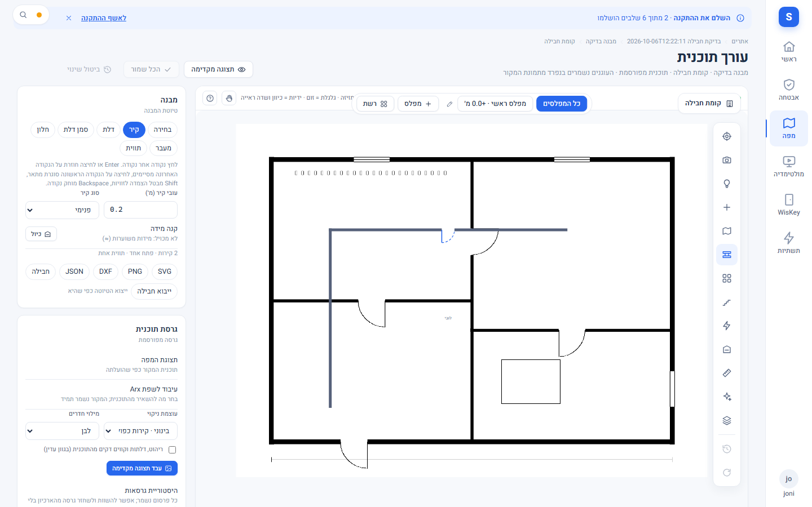
צילום מהדגמה: שורת הייצוא (SVG, PNG, DXF, JSON, חבילה, ייבוא חבילה).
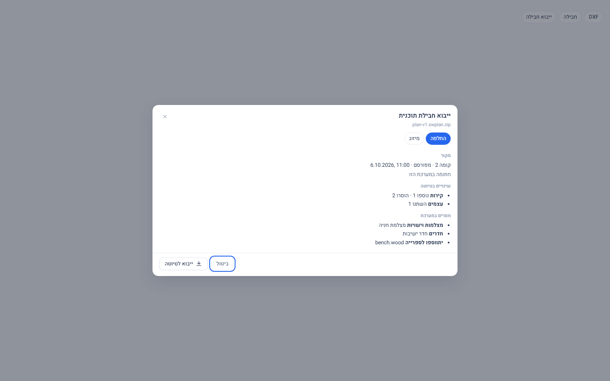
צילום מהדגמה: בדיקה יבשה לפני הייבוא - מקור, שינויים בטיוטה ומה חסר במערכת.
שים לב
- שום דבר לא נכתב עד "שמירת מיקום"/"שמירה" מפורשת; פרסום טיוטה הוא פעולה נפרדת מהעריכה עצמה.
- זיהוי החדרים והמבנה הוא עיבוד תמונה מקומי — הוא אינו קורא שמות חדרים מהשרטוט, רק מציע פוליגונים.
- קובץ התוכנית המקורי שהועלה אף פעם לא משתנה, גם לא אחרי עיבוד לשפת SMPLWISE או חיתוך/סיבוב.
- מפלס (level) שהוא "הראשי" לא ניתן להחלפה בעצמו — צריך להפוך מפלס אחר לראשי קודם.
 צילום מהדגמה — תוכניות קומה אמיתיות אינן מתפרסמות במדריך.
צילום מהדגמה — תוכניות קומה אמיתיות אינן מתפרסמות במדריך.
וידאו חי — סקירה, קיר מצלמות ומצלמה בודדת
מה זה
לייב הוא אזור הווידאו החי: מסך "סקירה" (Dashboard) עם מצב ההתקנה במבט אחד, "כל המצלמות" (קיר) לכמה מצלמות בבת אחת, ומסך מצלמה בודדת עם הזרם, בקרות ופרטי בריאות. הכול עובר דרך ממסר WebSocket בין הדפדפן ↔ שרת המערכת ↔ go2rtc: הדפדפן לעולם אינו לומד כתובת go2rtc או RTSP כלשהי, וכל בקשת זרם נבדקת מחדש לפי המצלמה והקומה שהיא ממוקמת עליה.
שתי דרכי תעבורה: MSE (ברירת המחדל — fMP4 מעל שקע הממסר; עובד דרך הכניסה הרגילה למערכת, מנהרת Cloudflare ו-CGNAT) ו-WebRTC (השהיה נמוכה יותר, אך דורש UDP ישיר בין הדפדפן למארח go2rtc — תקין ב-LAN, לא דרך מנהרה). auto מנסה WebRTC ונופל חזרה ל-MSE. במעבדת הפיילוט: פרופיל sub (H.264 Baseline, 640×360) מתנגן ב-WebRTC תוך שניות; פרופיל main (H.264 Main, 2560×1440) מתחבר ב-WebRTC אבל דפדפנים אינם מפענחים אותו מ-RTP, כך ש-auto נופל ל-MSE אחרי כ-12 שניות. ל-MSE יש עוד עיכוב משלו: הפריים הראשון מוצג רק ב-key frame הבא, ועם GOP של כ-8 שניות ב-NVR זה 8–12 שניות נוספות עד לתמונה הראשונה. ברירת המחדל של ההתקנה נקבעת בהגדרות ← וידאו ומדיה; כל נגן יכול לדרוס אותה לדפדפן הנוכחי בלבד (ראו 80-settings_HE.md).
כמה צפיות חיות במקביל. שתי מכסות מגבילות זאת: כללית לכל המערכת, ולכל כניסה מרחוק (ברירת מחדל 16). מנהל המערכת יכול להעלות כל אחת עד 128 (הגדרות › וידאו ומדיה והגדרות › גישה מרחוק; ליד השדה מופיעה אזהרה כשהערך מעל מחצית מהערוצים שה-NVR בנוי להם, והשמירה אפשרית). מעבר למכסה הכללית מוצגת תמונת מצב במקום וידאו חי; מעבר למכסה של כניסה מרחוק הצפייה הבאה נדחית עם הסבר.
**וידאו מרחוק (SmplWise Arx, https://<כתובת הגישה מרחוק>/arx). מחוץ לבית הכלל שונה: הנגן מתחיל בזרם שנבחר בהגדרות ← גישה מרחוק ← "זרם ברירת מחדל" (ראשי, כברירת מחדל) ב-WebRTC**, כדי שהווידאו יעבור ישירות ולא דרך המנהרה. תג קטן על התמונה מראה מה מנסים ("מנסה main·WebRTC…") ואחר כך מה מתנגן: main·WebRTC, sub·WebRTC או main·MSE. אם WebRTC לא מצליח (לא מתחבר, או שהווידאו מגיע אבל הדפדפן לא מפענח ממנו אף תמונה; בקישור איטי הנגן מחכה עד 30 שניות) - כש"MSE כמוצא אחרון" מותר, אותו זרם עובר ל-MSE דרך המנהרה והנגן אומר זאת; כשהוא אסור, הנגן עובר לזרם השני ב-WebRTC ומציג "הזרם הראשי אינו ניתן לפענוח ב-WebRTC - ראה הגדרות › וידאו", ואם גם זה לא מתנגן - רק את ההודעה. הסיבה השכיחה היא הקידוד של הזרם הראשי ב-NVR: דפדפנים מפענחים ב-WebRTC רק H.264 בלי B-frames ובלי SVC, לא H.265. המערכת קוראת את הקידוד מה-NVR בכל גילוי מצלמות; מצלמה שהזרם הראשי שלה לא יתנגן ב-WebRTC מופיעה עם הנחיה מדויקת בבריאות המערכת (כרטיס "וידאו ב־WebRTC"), בשורת היכולות של המצלמה ובאשף ההתקנה, ומרחוק היא מדלגת ישר לנפילה בלי לחכות. במעבדת הפיילוט לשבע מתוך עשר מצלמות הזרם הראשי הוא H.264 עם SVC מופעל ושלוש הן H.265 - מכבים SVC בזרם הראשי ב-NVR ועוברים ל-H.264 (או בוחרים "משני" כברירת המחדל המרוחקת). כששרת הווידאו (go2rtc) לא זמין הנגן אומר "שרת הווידאו אינו זמין". קיר המצלמות ואריחי המפה נשארים מרחוק על הזרם שלהם (משני כברירת מחדל). בתוך הבית (הכניסה הרגילה / LAN) הנגן נשאר כמו שהיה.
איך אני… (צופה ומפעיל)
- פותח את "סקירה" (לייב, מסך הבית): ברכה לפי אזור הזמן, מצלמות מחוברות מתוך הסך הכול עם דגם הרשם, אתרים/קומות עם תוכניות מפורסמות, אירועי היום עם ספירת "לא טופלו", מצב מערכת מתוך תקציר הבריאות, שתי תצוגות חיות לדוגמה, ואחוז אחסון בשימוש (רק למי שרשאי לקרוא את דוח האחסון). הרצועה "דורש תשומת לב" מרכזת: מצלמות לא מקוונות, בדיקות בריאות כושלות, אירועים לא טופלו, זרם התראות שלא מסר דבר (ה-NVR צריך "Notify Surveillance Center"), וחיבור לתשתית המערכת שאבד — כל שורה עם הסיבה שהיא מוצגת וכפתור למסך הנכון. מתרענן כל דקה.
- פותח "כל המצלמות" (קיר). "פריסה" קובעת עמודות ורוחב; "סידור הקיר" (בתפריט המשתמש, למי שמורשה לסדר את הקיר) משנה סדר הופעה ורוחב אריח, ובכל שורה יש גם תיבה "מוצגת": מצלמה שהוסרה ממנה עוברת לסוף הרשימה ועמומה, ונעלמת מהקיר, ממכסת הזרמים החיים, מהמונה שבתחתית ("מוצגות N מתוך M מצלמות") ומעמוד "הכול" של הקיוסק - אבל נשארת נגישה ממסך המצלמה הבודדת, מהמפה ומתצוגות שמורות, וחוזרת בסימון התיבה. תצוגות שמורות (הגדרות ← לייב,
rbac.assignלתצוגה משותפת) פותחות בדיוק את קבוצת המצלמות שנשמרה, על הקיר או בקיוסק. מעל תקרתmedia.max_live_sessions(ברירת מחדל 8) אריחים נוספים מציגים רק תצוגה מקדימה (snapshot) עד שמתפנה סשן. - פותח מצלמה בודדת. תג המצב (חי / מנותקת / לא ידוע), "מסך מלא", עוצמת שמע (אם המצלמה תומכת באודיו דו-כיווני), "צילום מסך" ו"רענון תמונה". "מצלמות באותה קומה" מקפיצות בין שכנות. פתיחת "הקלטות" עוברת לניגון של אותה מצלמה (ראו
31-events_HE.md). - בודק בריאות ויכולת. כרטיס הפרטים מציג PTZ (נתמך/לא נתמך/לא ידוע, עם הסיבה מה-NVR), רשימת presets ואודיו דו-כיווני בדיוק כפי שה-NVR מדווח — קריאה בלבד; שום תנועת PTZ, קריאת preset או דיבור לא מוצעים בפיילוט. אזורי הזיהוי (רשת תנועה, מסכות פרטיות, חדירה, קווי חציית קו) מצוירים מעל התצוגה המקדימה, גם הם קריאה בלבד מה-NVR, ואינם חדרים על תוכנית הקומה.
- מבצע זום דיגיטלי. הגדלה בדפדפן בלבד — לא מזיזה את המצלמה עצמה. פקדי הכיוונים (אם המסך מציע "בקרת PTZ") מיועדים למצלמה עם PTZ אמיתי בלבד.
איך אני… (עם ההרשאה הרגישה המתאימה, nvr.config.*)
- מקליט ידנית. כפתור הקלטה ידנית בכרטיס המצלמה, עם משך נבחר — כתיבה מתועדת ל-NVR (GET ← PUT ← GET לאימות), ניתנת לביטול ומוצגת ביומן השינויים של הגדרות ← חיבורים.
- **עורך אזורי זיהוי תנועה ורגישות (
nvr.config.detection, תפקיד מותאם אישית).** ציור תאים, "בחר הכל"/"נקה", רגישות בצעדי המכשיר עצמו (ערך ביניים מתעגל, לעולם לא מתעלם בשקט). "שמור ל-NVR" מציג את ההפרש (תאים +/‑, רגישות ישנה ← חדשה) לפני כתיבה אחת הפיכה; כתיבה שה-NVR אישר אך לא שמר מדווחת "ללא אפקט" ולא נספרת כהצליחה.
כמה מקליטים, ומה בקיר
- כמה מקליטים במערכת אחת. הגדרות › חיבורים › "הוסף NVR": אפשר לחבר כמה מקליטים (Hikvision או Provision-ISR, ו-Frigate כשהופעל
- ראו
33-frigate_HE.md). כל מצלמה שייכת למקליט אחד. הקיר והבחירות מסננים לפי מקליט. נבדק רק מול שני מקליטים מדומים; ניגון
מסונכרן בין מקליטים ניסיוני וכבוי כברירת מחדל; שינוי פרטי חיבור או מקליט חדש חלים אחרי הפעלה מחדש.
- ראו
- כמה מצלמות בקיר. בראש "כל המצלמות" בורר מספר: 1, 2, 4, 6, 8, 9, 12, 16, 20, 25, 32 או "הכל". הקיר מציג רק כמה שנבחר ומחלק לעמודים.
- שידור למסך. כפתור "שדר למסך" ליד מסך מלא - ראו
42-multimedia_HE.md.
שים לב
- מה "אין חיבור" אומר, ולמה לבדוק: באנר "אין חיבור לשרת" בדפדפן פירושו שהדפדפן לא הצליח להגיע כלל לשרת המערכת (רשת/הפעלה מחדש) — לא בעיית מצלמה. תג "המצלמה מנותקת מה-NVR" על אריח פירושו שהסנכרון האחרון מה-NVR (בהפעלה וכל 10 דקות, או "סנכרון מצלמות" מיידי בהגדרות) לא ראה את הערוץ הזה כמחובר — לבדוק כבל/רשת המצלמה עצמה ואת ה-NVR. כשל בפתיחת הזרם עצמו (למשל
source_unavailable) מתנסה שוב עם נסיגה (3 ← 30 שניות) ומוצג ככשל, לעולם לא כ"חי" מדומה. תג "אין הרשאת צפייה" פירושו שהתפקיד שלכם לא כולל את הקומה שהמצלמה ממוקמת עליה. - מצלמה שאינה ממוקמת על תוכנית קומה עדיין נגישה כאן, אך אינה מופיעה בחיפוש מרחבי או בקורלציה דלת-מצלמה-חיישן.
- שום פעולה במסכים האלה אינה כותבת ל-NVR פרט לשתיים שסומנו למעלה, וגם הן דורשות הרשאה מפורשת ומתועדות. פרטים נוספים ופתרון תקלות מורחב ב-
95-troubleshooting_HE.md.
 צילום מהמערכת החיה.
צילום מהמערכת החיה.
 צילום מהמערכת החיה.
צילום מהמערכת החיה.
 צילום מהמערכת החיה.
צילום מהמערכת החיה.
 צילום מהמערכת החיה.
צילום מהמערכת החיה.
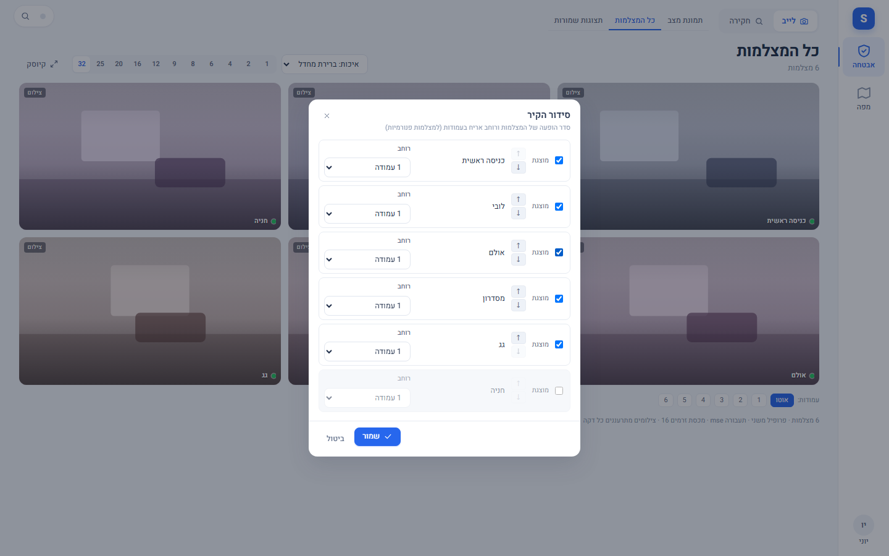
צילום מהדגמה.מרכז אירועים, ניגון ותיקי חקירה
מה זה
חקירה היא אזור ההיסטוריה: מרכז האירועים (רשימה וחיפוש), הקלטות וניגון עם ציר זמן, מפה היסטורית (מצב הקומה ברגע נבחר), ותיקי חקירה שאוספים אירועים/קטעים/הערות לחבילת ראיות ניתנת לייצוא. אירועים מגיעים משני מקורות, שניהם מתויגים: מדודים (measured) מזרם ההתראות של ה-NVR, ו-נגזרים (inferred) שמופקים מחיפוש ההקלטות — אירוע נגזר לעולם אינו מוצג כהתראה מדודה. ה-NVR שולח התראה רק כשהקישוריות שלו כוללת "Notify Surveillance Center"; בלעדיה הזרם נושא פעימות לב אך לא התראות (ראו 95-troubleshooting_HE.md).
איך אני… (צופה ומפעיל)
- מסנן במרכז האירועים. יום/סוג/מצלמה/מקום (קומה ← חדר/אזור, לפי מיקום הסיכה בפועל)/מקור/ לא-טופל, עם עדכונים חיים דרך WebSocket. השורה שמעל הרשימה נוקבת אילו שדות יש להם נתונים ב-90 הימים האחרונים ולמה לאחרים אין (למשל מסנני אדם/רכב/חדירה אינם נתמכים עד שאירועי smart מוגדרים במצלמה — מוצג "המסנן אינו נתמך כאן", לא רשימה ריקה מטעה). "חלונות" מקבצת אירועים סמוכים של אותה מצלמה (פער 1–10 דקות, לבחירה) לשורה אחת; "סמן הכל כטופל" מטפל בחלון שלם, בלי למזג או למחוק את האירועים הגולמיים.
- פותח עמוד אירוע. ניגון מ-2 שניות לפני האירוע, כרטיס הקשר (טופל על ידי מי, מקור, סוג, משך, מיקום עם תוכנית וסיכה מודגשות), קורלציה דלת-מצלמה-חיישן (חיישנים/מנעולים סמוכים וטווח ±2 דקות, כל שורה מסומנת "נמדד"/"נגזר"/"פקודה" — פקודה אינה הוכחה שהדלת נפתחה), ומסלול מוצע (מצלמות שכנות מדורגות לפי טופולוגיית המפה — השערה, לעולם לא זיהוי אדם/רכב). "סמן כטופל" (
events.ack) נכתב ביומן הביקורת בשם המשתמש. - מנגן ומייצא. ציר הזמן תומך ב-seek, ±10 שניות, האטה ×0.5/×0.25 וצעידת פריים; ריחוף מציג תצוגה מקדימה. "השוואה" מוסיפה עד שלוש מצלמות נוספות סביב שעון-אב אחד (best effort, ללא עוגן PTS↔UTC מאומת — סחיפה מוצגת לכל אריח). "ייצוא קטע": לבחור טווח, לקבל אומדן קבצים/בייטים, לאשר ולעקוב אחרי המשימה תחת ייצוא והורדות; החיתוך הוא ב-key frame, וה-manifest מתעד טווח מבוקש מול בפועל וגרסת pipeline (דורש
video.export). - פותח מפה היסטורית. "המשך חקירה במפה" מציג את הקומה ברגע הנבחר עם גרסת התוכנית שהייתה בתוקף אז: סיכת מצלמה כחולה כשיש כיסוי הקלטה, מקווקוות כשאין; התקנים מוצגים עם המצב שההיסטוריה המקומית מכירה לאותו רגע או "לא ידוע" (ולמה — ההיסטוריה לא ממולאת קדימה בלי גבול). ציר זמן תחתון גולל את היום; "נגן מכאן" פותח ניגון; לא ניתן להפעיל ציוד מהמסך הזה.
איך אני… (מפעיל, מנהל אתר, מנהל מערכת — תיקי חקירה)
- פותח או עורך תיק (
cases.manage): מעמוד אירוע ("הוסף לתיק"), מהניגון (קליפ 15 שניות לפני/45 אחרי הסמן) או מהמפה ההיסטורית, ובנוסף "תיק חדש" ברשימת התיקים. פריט מציג את מצבו האמיתי: "סימנייה ל-NVR בלבד" (עדיין ניתנת לדריסה שם), "שמור עותק" (מריצה ייצוא; הופך ל"עותק שמור" רק כשהעותק הושלם), "חסר" (ה-NVR כבר מחק — לעולם לא "משומר"), "לא נבדק". - בונה חבילת ראיות (ZIP). קליפים שמורים עם ה-manifest שלהם, תצוגות מקדימות, הערות, manifest עם SHA-256 לכל קובץ, דוח קריא, וסימניות שלא נשמרו מוצגות כדולגו. כל חבילה חתומה ב-Ed25519 במפתח הפעיל של ההתקנה (
manifest.sig.json). - מאמת חבילה ("אימות חבילה", כל מי שרשאי לקרוא אירועים): מעלים ZIP, כל קובץ מגובב מחדש ומושווה ל-manifest — שום דבר לא יובא בשלב הזה. התוצאה מבדילה בין "חתום על ידי מפתח של התקנה זו" (פעיל או פרוש), "חתום על ידי מפתח לא ידוע" (שלמות בלבד) ו"לא חתום" (חבילות ישנות). מה ההתאמה מוכיחה: SHA-256 תואם ו-manifest שלם = הקבצים לא השתנו מאז הייצוא; חתימה תקינה של מפתח התקנה זו = ההתקנה הזו הפיקה את החבילה; חתימה תקינה של מפתח לא מוכר = שלמות בלבד. מה זה לא מוכיח: אמיתות הצילום במקור, שעון המצלמה, או קבילות משפטית — המצלמה, ה-NVR והרשת נשארים מחוץ לכל hash וחתימה.
- מייבא חבילה מהתקנה אחרת ("ייבוא חבילת ראיות",
cases.manageבהיקף ההתקנה, 0.1.131): מריץ קודם את אותו אימות ומציג דוח לכל קובץ (תואם/שונה/חסר/פגום), את ההתקנה שהפיקה (מזהה, גרסת SMPLWISE, זמן ייצוא) והאם זו ההתקנה הזו. "ייבא כתיק" פעיל רק כשהכול תואם, ואז יוצר תיק חדש מסומן "מיובא" עם באנר מקור (התקנה, זמן ייצוא, SHA-256 של החבילה, "hash תואם" בזמן הייבוא) וכפתור "בדיקת hash חוזרת" שמגבב מחדש את העותקים השמורים בכל עת. קבצי הקליפ/ תצוגה מקדימה נשמרים תחת/data/imported/<sha256>/; הערות הופכות ל"מיובא · לקריאה בלבד"; סימניות שהמקור לא שימר מוצגות "לא נכללו בחבילת המקור". פריטים מיובאים לא ניתנים להסרה בודדת — רק מחיקת התיק כולו מסירה אותם ואת הקבצים. אותה חבילה מיובאת פעם אחת (409 מציין את התיק הקיים); אחרי מחיקתו ניתן לייבא שוב. מה חבילה מיובאת אינה יכולה לעשות: שום דבר בה הופך למצלמה, אירוע, תוכנית, משתמש, שיוך או הגדרה — מזהי מצלמת מקור נשמרים כטקסט בלבד, ורק קבצי קליפ/תצוגה ששמם עובר רשימת היתר קפדנית מגיעים לדיסק, מוגשים לפי הסוג האמיתי שלהם (בדיקת תוכן, לא סיומת). מוגבל בגודל (cases.import_max_mb, ברירת מחדל 512MB) ונדחה לפני קריאה כשהארכיון חשוד (נתיבים חורגים, סימלינק, ספירת קבצים קיצונית). הבייטים המיובאים נספרים במערכת ← אחסון ("ראיות מיובאות") ובדוח הבריאות, ואינם חלק מגיבויי הפרויקט (כמו תצוגות מקדימות של אירועים).
איך אני… (מנהל אתר, מנהל מערכת — חוקים והתראות, אם המסך זמין בהתקנה)
- בונה חוק: טריגר (סוגי אירועים, מקורות, חומרה) × היקף (קומות/חדרים/מצלמות, ריק = הכל) × חלון זמן (יכול לחצות חצות) × תקופת צינון. הפעולה היחידה היא התראה בתוך ה-VMS או שירות
notifyשל תשתית המערכת — לעולם לא פקודת התקן. "הרצה יבשה" מריצה מחדש את אירועי 24 השעות האחרונות דרך אותו מתאם ומסבירה למה כל אחד היה או לא היה מעורר, בלי לכתוב דבר. דורשrules.manage.
שים לב
- כל אישור טיפול, שינוי תיק, ייצוא, אימות וייבוא נכתבים ביומן הביקורת.
- שמירת אירועים (
events.retention_days, ברירת מחדל 30 יום) וקבצי ייצוא (exports.retention_days, ברירת מחדל 7 ימים) נמחקים אוטומטית בתום התקופה; חבילות ראיות ופריטים מיובאים אינם כפופים לשמירה הזו — הם נשארים עד מחיקת התיק. - אירוע סמוך במסלול המוצע או בקורלציה הוא הקשר בלבד — לעולם לא טענה לזיהוי אותו אדם/רכב.
 צילום מהמערכת החיה.
צילום מהמערכת החיה.
 צילום מהדגמה — תוכניות קומה אמיתיות אינן מתפרסמות במדריך.
צילום מהדגמה — תוכניות קומה אמיתיות אינן מתפרסמות במדריך.
 צילום מהמערכת החיה.
צילום מהמערכת החיה.
אבטחה › אזעקה
מה זה
אזור "אבטחה" בסרגל הצד מרכז את לייב (מצלמות), חקירה (אירועים, הקלטות, תיקים, בריאות מצלמות) ואזעקה. מקטע האזעקה מופיע בבורר שבראש העמוד (אחרי לייב וחקירה, אלא אם מנהל המערכת סידר אחרת) רק כשיש למערכת לוח אזעקה ולמשתמש הרשאת אזעקה (צפייה, דריכה, נטרול או עקיפה). אותו מסך זמין גם בהגדרות: בתפריט המשתמש (האווטאר) ← מערכת ← אבטחה, שם עוד שני עמודים: ניהול אזעקה (קודים, שיוך חיישנים, מדיניות מרחוק - למנהל מערכת) וNVR (מצב ה-NVR וקיצור להגדרות החיבור). לוח שאין לו חיישנים או מתגי עקיפה (למשל לוח כללי) עדיין מוצג, עם המצב ופעולות הדריכה. קישורים ישנים ל-#/security/alarm, גם עם לוח מסוים, ממשיכים לעבוד.
מסך האזעקה מציג את לוח האזעקה של המבנה: אם הוא דרוך או מנוטרל, כפתורי דריכה ונטרול, והחיישנים (אזורים) של המערכת - כל אחד עם המצב החי שלו ומתג עקיפה. הנתונים מגיעים ממערכת האזעקה עצמה ומתעדכנים מעצמם.
איך אני… (צופה ומעלה)
- רואה את מצב האזעקה. הכרטיס העליון מציג את המצב באותיות גדולות ובצבע: "מנוטרלת" (ירוק), "מופעלת מלאה", "מופעלת חלקית", "מופעלת · לילה" (סגול), "בהשהיית יציאה" / "בהשהיית כניסה" (כתום), "אזעקה!" (אדום מהבהב), "לא זמינה" (אפור). מתחת: מי שינה לאחרונה ומתי.
- בוחר לוח. כשיש יותר מלוח אחד (למשל שתי מחיצות - "בית" ו"חצר"), שורת כפתורים מעל הכרטיס מחליפה ביניהם.
- בודק "מוכנה לדריכה?". כשהאזעקה מנוטרלת, הכרטיס מפרט אילו חיישנים פתוחים או בתקלה. אפשר לסגור אותם או לעקוף אותם לפני הדריכה.
- עובר על החיישנים. החיישנים מקובצים לפי אזור בבית. לכל חיישן: מצב (פתוח / סגור / תנועה / תקלה / עקוף), מתי השתנה, ו"חבלה" או "סוללה חלשה" כשהחיישן מדווח עליהם. חיישן שמשותף לשתי מחיצות מסומן "משותף".
- מסנן. "פתוחים בלבד", "עקופים", "תקלות", או "הכל".
איך אני… (מפעיל ומעלה - לפי ההרשאות שלכם)
- דורך את האזעקה. לוחצים על מצב הדריכה הרצוי (דריכה מלאה, דריכה חלקית, דריכת לילה - רק המצבים שהלוח תומך בהם). דריכה אינה מבקשת אישור. אם המשתמש שלכם חייב קוד, נפתחת מקלדת.
- מנטרל. "נטרול" מבקש תמיד אישור. אם נדרש קוד, מקלידים אותו במקלדת שנפתחת (הקוד מוסתר, השדה מתרוקן כשסוגרים).
- עוקף חיישן. המתג "עקיפה" שליד החיישן מוציא אותו מההגנה (הוא לא יתריע) עד שמחזירים אותו. גם עקיפה וגם החזרה מבקשות אישור, ועקיפה הולכת לפי אותה מדיניות קוד כמו נטרול.
- מגדיר קוד אישי. "הקוד האישי שלי" (בראש המסך) - קוד של 6 עד 8 ספרות לאזעקה בלבד (מנהל יכול לקבוע מינימום אחר). זה אינו קוד הלוח. את הקוד הראשון נותן מנהל המערכת - או שמגדירים אותו כאן אחרי הקלדה נכונה של קוד הלוח; שינוי קוד קיים דורש את הקוד הנוכחי. בלי קוד אישי, משתמש שחייב קוד מקבל "פנה למנהל המערכת לקבלת קוד אישי".
- מבין את התשובה. אחרי שליחה מופיעה שורה: "נשלח · ממתין לאישור הלוח" ואז "הלוח אישר". "הלוח לא אישר את הפקודה בזמן" אומר שהלוח לא דיווח על שינוי - לעתים כי הקוד שגוי; המצב שמוצג הוא תמיד מה שהלוח עצמו מדווח.
איך אני… (מנהל מערכת)
- שומר את קוד הלוח. הגדרות › אבטחה › ניהול אזעקה › בכרטיס של הלוח: מקלידים קוד ושומרים. הקוד נשמר מוצפן ואינו מוצג שוב - רואים רק "מוגדר", מתי ועל ידי מי. אפשר להחליף או למחוק.
- קובע מי צריך קוד. משתמשים והרשאות › משתמש › "אזעקה": דריכה ונטרול, כל אחד בנפרד, "ללא קוד" (לחיצה אחת, המערכת שולחת את קוד הלוח השמור) או "חייב קוד" (ברירת המחדל). שם גם קובעים או מוחקים קוד אישי של משתמש. את ההגדרות והקוד של עצמכם משנים רק עם הקוד האישי הנוכחי שלכם - או שמנהל מערכת אחר משנה אותם.
- בוחר איזה קוד מקלידים. הגדרות › אבטחה › ניהול אזעקה: "קוד אישי לכל משתמש" (ברירת מחדל - אף משתמש לא לומד את קוד הלוח) או "קוד הלוח".
- קובע מה מותר מחוץ לבית. שליטה מרחוק, נטרול ועקיפה מרחוק, ו"ללא קוד גם מרחוק" (פעיל כברירת מחדל).
- מתקן שיוך. טבלת השיוך מראה לכל חיישן את מתג העקיפה שלו ולפי מה שויך. אפשר לבחור מתג אחר, "ללא עקיפה", לשייך חיישן למחיצה אחת, או להוציא חיישן שאינו אזור. מתגים שלא שויכו מוצגים תחת "ללא שיוך".
שימו לב
- נטרול ועקיפה תמיד מבקשים אישור; דריכה לא. הפעלת אזעקה ("trigger") לא קיימת במסך.
- קודים לא נשמרים גלויים ולא מוצגים. קוד הלוח נשמר מוצפן, קוד אישי נשמר רק כטביעה חד-כיוונית, ושום קוד לא מופיע ביומן הביקורת, בהודעות שגיאה או בכתובת הדפדפן.
- 5 קודים שגויים בתוך 5 דקות נועלים את הקלדת הקוד למשך 10 דקות - קוד אישי שגוי נועל רק את המשתמש שהקליד אותו, קוד לוח שגוי נועל גם את הלוח. הנעילה נשמרת גם אחרי הפעלה מחדש.
- הלוח ומתגי העקיפה נשלטים רק מכאן. בכרטיס המפה ובמסכי חשמל והתקנים הם מופיעים לקריאה בלבד ("נשלט ממסך האזעקה"), ופעולות מרוכזות לעולם לא נוגעות בהם.
- כל פעולה נרשמת ביומן הביקורת - מי, מה, על איזה לוח או חיישן, התוצאה, ואם נעשתה מתוך הרשת או מבחוץ.
- מבחוץ עם "ללא קוד": הנעילה הביומטרית קיימת רק באפליקציית האנדרואיד ורק אם הופעלה בה; בדפדפן אין נעילה כזו. מנהל יכול לכבות את "ללא קוד גם מרחוק" כדי שכל פעולה מבחוץ תבקש קוד.
- שתי מחיצות: חיישן שהמערכת לא יודעת לאיזו מחיצה הוא שייך מופיע בשתיהן ומסומן "משותף", עד שמנהל משייך אותו. מי שמורשה רק על אחת המחיצות רואה חיישן כזה בשמו בלבד ולא יכול לעקוף אותו.

צילום מהדגמה - הלוח, החיישנים והשמות בדויים.
מקליטי Frigate — סקירה, ניגון ושליטה
מה זה
מלבד מקליטי NVR רגילים, המערכת יכולה להתחבר גם למקליט Frigate (גרסה 0.18 ומעלה): מערכת הקלטה שמזהה אנשים, כלי רכב ובעלי חיים בתמונה. מצלמות של Frigate מופיעות בלייב ובמפה כמו כל מצלמה, ויש להן מסכים משלהן: סקירה (מה קרה, פריט אחד לכל פעילות) ובריאות המקליט.
החיבור כבוי כברירת מחדל. סוג המקליט "Frigate" מופיע בבחירה רק כשהמתקין הפעיל אותו בשרת (הפעלת משתנה הסביבה SW_FRIGATE=1; עדיין אין לו אפשרות בהגדרות התוסף). בלי זה אין שום שינוי: שום מסך לא מוסיף Frigate מעצמו.
שני שלבים, וכל אחד נשלט בנפרד:
- צפייה וניגון (קריאה בלבד). המערכת רק קוראת מ-Frigate: אין שום שינוי בהגדרות שלו.
- שליטה ופעולות. מתגים וצעדים שמשנים את Frigate עצמו. כל סוג פעולה כבוי עד שמנהל מפעיל אותו.
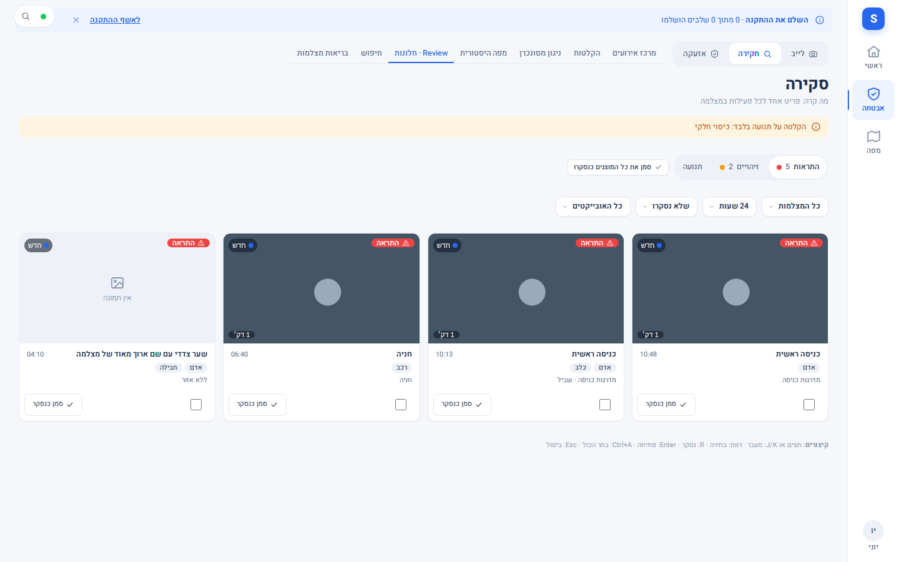
צילום מהדגמה: פריטי הסקירה והתמונות הן נתוני דמה; בהתקנה אמיתית מופיעות התמונות מהמצלמות.
איך אני… (מפעיל ומעלה)
- רואה מה קרה. אבטחה › חקירה › חלונות · Review (הסקירה). שלוש שכבות: התראות (מה שחשוב), זיהויים ותנועה. לכל פריט: מצלמה, שעה, משך, מה זוהה (אדם, רכב…) והאזור. מסננים לפי מצלמה, תקופה (היום, 24 שעות, 7 או 30 ימים), מצב (חדש / נסקר) וסוג אובייקט.
- מסמן "נסקר". על פריט בודד או "סמן את כל המוצגים כנסקרו". הסימון הוא אישי: מה שסימנתם לא נעלם אצל אחרים.
- פותח פריט. לחיצה פותחת מגירה עם התמונה, האזורים, ציר הפעילות של האובייקט וכפתור "פתח הקלטה" לניגון הקטע. כשההקלטה עדיין לא זמינה לניגון, המגירה אומרת זאת במקום להציג כפתור שלא עובד.
- רואה בריאות. הגדרות › כללי › בריאות ועבודות › "מקליטים": כרטיס לכל מקליט עם חיבור, מקום פנוי, מצלמות פעילות, חיבורים מחדש ותקיעות בשעה האחרונה. הקלטה על תנועה בלבד מסומנת "כיסוי חלקי" - זו לא תקלה, ואין לפרש היעדר הקלטה כאילו לא קרה דבר.
- מקבל התראות. התראות מגיעות מפריטי התראה בלבד (לא מכל זיהוי), דרך אותם ערוצים ושעות שקט של מרכז ההתראות.
- בלייב. מצלמת Frigate מוצגת כתמונה שמתרעננת (לא כוידאו רציף) - כך נאמר בכרטיס המקליט.
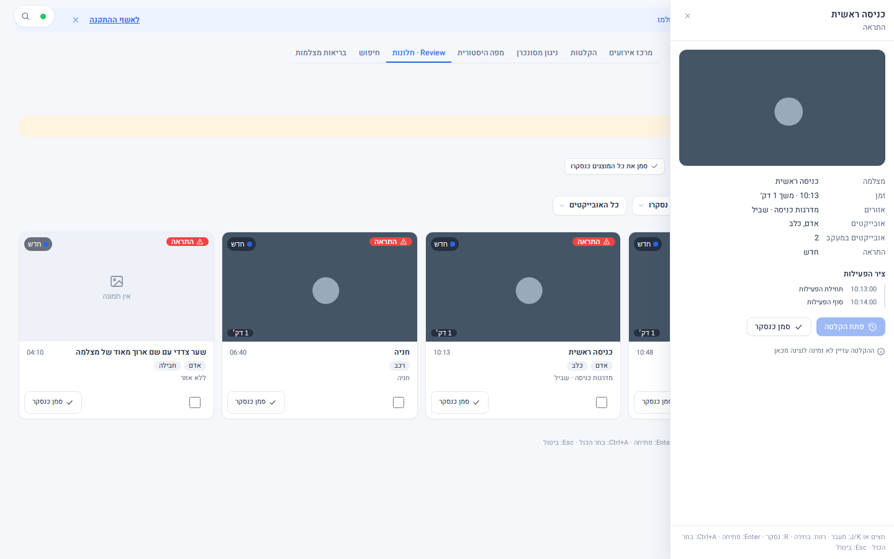
צילום מהדגמה: מגירת הפרטים של פריט סקירה.
איך אני… (מנהל מערכת)
חיבור מקליט
- ודאו שהמתקין הפעיל את סוג Frigate בשרת (ראו למעלה).
- הגדרות › חיבורים › הוסף NVR, בוחרים Frigate, ממלאים כתובת ופורטים ומשתמש. מומלץ חשבון צפייה (viewer) ייעודי ב-Frigate ולא חשבון מנהל.
- "בדיקה": המערכת מראה גרסה, מצלמות, גלאים, יכולות (סקירה, אובייקטים, הקלטות, ניגון, חיפוש…) ושמירת הקלטות. גרסה מתחת ל-0.18 נדחית עם הסבר.
- שומרים ומפעילים מחדש את התוסף (שינוי חיבור חל רק אחרי הפעלה מחדש), ואז מייבאים את המצלמות.
- אותו מקום מכוסה גם במקליט אחר? מקשרים את המצלמות בעורך המצלמות כך שהאירועים מתחברים למקום אחד.
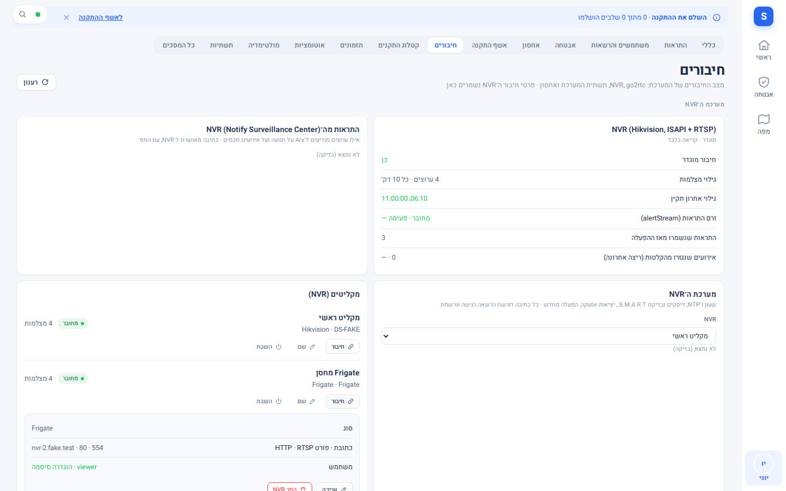
צילום מהדגמה: מקליט Frigate לצד מקליט Hikvision; הכתובת בדויה.
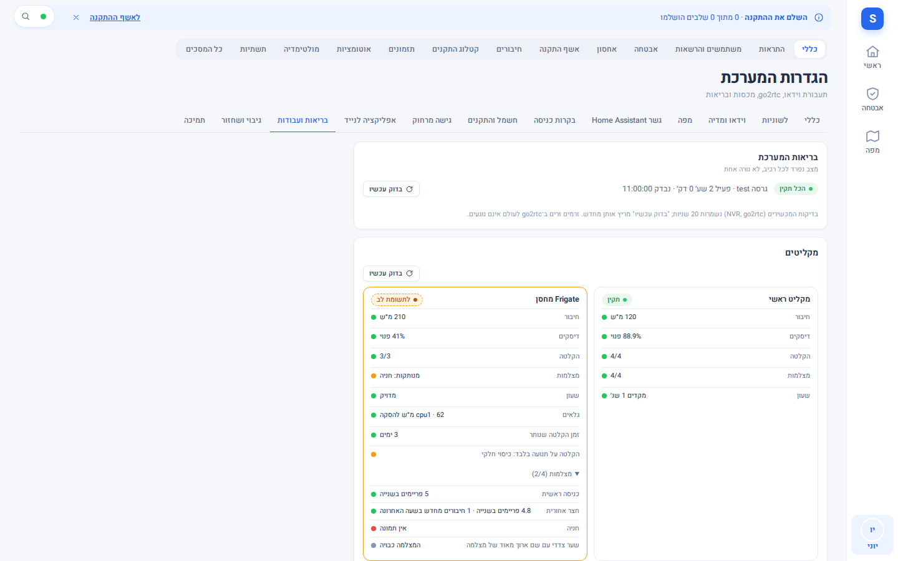
צילום מהדגמה: כרטיס בריאות לכל מקליט; המקליט השני מראה "כיסוי חלקי" והמצלמה הכבויה.
הפעלת שליטה (כבוי כברירת מחדל)
הגדרות › המקליט › "שינויים ב-Frigate". ששת סוגי הפעולה, לכל אחד מתג משלו והרשאה משלו:
| סוג פעולה | מה מאפשר | הרשאה |
|---|---|---|
| מתגי ניתוח של מצלמה | זיהוי אובייקטים / תנועה / שמע, התראות וזיהויי סקירה… למצלמה אחת | analytics.control |
| הקלטה, צילומי תמונה והפעלת מצלמה | כיבוי והדלקה של הקלטה / תמונות / המצלמה עצמה | analytics.record_control |
| החלפת פרופיל | פרופיל ב-Frigate, וגם "פרופיל לפי מצב האזעקה" (ברירת מחדל: ללא) | analytics.profile |
| סימון נסקר גם ב-Frigate | שיקוף הסימון האישי ל-Frigate | analytics.events |
| שמירת אירוע ותיקון תווית | "שמור הקלטה" לאירוע, תיקון תווית משנה | analytics.events |
| שליטת PTZ | לא משוחרר - אי אפשר להפעיל, ואין לוח PTZ | - |
כללי הבטיחות: כל שינוי נעשה פעם אחת, נקרא חזרה מ-Frigate ורק אז מוצג "נשמר"; אם לא ניתן לאמת - "נשלח; המצב לא אומת". אין ניסיון חוזר ואין תור (פעולה שנכשלה לא תקרה מאוחר יותר מעצמה). כיבוי הקלטה, החלפת פרופיל ו-PTZ מבקשים אישור בכל פעם (אפשר לדרוש אישור גם לשאר: "דורש אישור בכל פעולה"). יומן שינויים מציג מי שינה מה ומתי, ובכל שורה "ביטול".
הרשאת הצפייה analytics.review ניתנת למפעיל ומעלה; ההרשאות analytics.* האחרות רגישות, למנהלי אתר ומערכת בלבד.
מגבלות
- הכתיבות לא נבדקו מול Frigate אמיתי. הן נבדקו מול Frigate מדומה בלבד. מומלץ להפעיל סוג פעולה אחד, לבצע פעולה אחת בפיקוח ולוודא ב-Frigate עצמו, לפני שמפעילים את הבא.
- PTZ לא שוחרר. אי אפשר להפעיל אותו במסך.
- עדיין אין ייצוא קטע מ-Frigate, בדיקה עם חשבון צפייה בלבד, ועוגני זמן מדויקים לניגון.
- הטבלאות החדשות של Frigate אינן נכללות בארכיון הגיבוי. אחרי שחזור יש לחבר את המקליט מחדש.
- אין אפשרות בהגדרות התוסף להפעלת Frigate: זה נעשה על ידי המתקין בשרת.
שים לב
- קריאה בלבד פירושה שהמערכת לא משנה דבר ב-Frigate עד שמנהל הפעיל סוג פעולה. סימון "נסקר" אצל משתמש אינו משנה את Frigate (אלא אם הופעל השיקוף).
- כל שינוי ב-Frigate נרשם ביומן הביקורת עם שם המשתמש.
חשמל והתקנים
מה זה
"חשמל והתקנים" הוא האזור לשליטה בציוד הבית (תאורה, מזגנים, תריסים, מתגים, מסכים) מאורגן לפי מבנה ← קומה ← אזור, בלי צורך לעבור דרך המפה. פעולות עוברות תמיד דרך אינטגרציית SMPLWISE Bridge בזהות חשבון המערכת האמיתית של המשתמש הפועל — הרשאות תשתית המערכת עצמה מחליטות אחרונות, בנוסף להרשאות ה-VMS.
מ-0.1.154 המסך הזה הוא הלשונית "מבט על", ולצידה הלשונית "קברניט", שבה הסגמנטים תזמונים, אוטומציות, סצנות וסקריפטים (ראו
41-schedules_HE.md,43-automations_HE.md). שורת הלשוניות מוצגת רק למי שרואה יותר מלשונית אחת.
איך אני… (צופה ומעלה)
- מנווט בעץ המבנה. מסך "המבנה" מציג עץ קומות/אזורים עם נקודות מצב (state dots) וספירות (תאורה דולקת, תריסים פתוחים, מיזוג פעיל, מנעולים נעולים, אזעקה); לחיצה על קומה (או על שם הקומה בכרטיס שלה) פותחת כרטיס קומה עם שורה לכל אזור, ולחיצה על אזור נכנסת ישר למסך האזור. ריחוף עם העכבר (או מעבר במקלדת) מציג סיכום של האזור עם הפעולות המהירות; במסך מגע הסיכום נפתח מכפתור "⋯" שבסוף השורה. מונים ותחומים שאין מהם אף התקן (למשל אין תריסים במבנה) פשוט לא מוצגים.
- בוחר פריסה. "פריסה" מחליף בין כרטיסים (עץ + כרטיסי קומה, ברירת המחדל) ל-אריחים; הבחירה נזכרת לכל דפדפן.
- רואה מה קורה בכל אזור בשורה אחת. ליד שם האזור מופיע סימן מזגן אחד (פתית שלג בקירור, להבה בחימום, מאוורר; עמום כשכבוי), אפשר עם הטמפרטורה או עם המצב, ואחריו המונים החשובים: תאורה ומתגים דולקים, מדיה שמנגנת. כמה מזגנים באזור הם סימן אחד: כברירת מחדל ממוצע הטמפרטורה של הפועלים ומספרם, או — בבחירת "מוביל" — הטמפרטורה והמצב של מזגן אחד (שנבחר לכל אזור, ובלי בחירה: הראשון שפועל). ערך אפס לא מוצג, ודלתות וחלונות פתוחים ומנעולים לא נעולים מופיעים רק כשמשהו פתוח או לא נעול ("רק כשפתוח", לכל פריט); בטלפון נכנסים עד שלושה פריטים בשורה אחת והשאר נאספים ל-"+N". לחיצה על השורה פותחת את האזור. מה מוצג ובאיזה סדר נקבע בהגדרות › חשמל והתקנים › "מה מוצג ליד שם האזור" (ברירת מחדל למתקן; הסדר חופשי בחצים, והקו המקווקו מראה מה נכנס בטלפון), ומי שיש לו "התאמה אישית של המסך שלי" יכול לבחור אחרת לעצמו ב-החשבון שלי › המסך שלי. אין יותר רשימות מזגנים בכרטיס הקומה ובראש המסך; מונה "מזגנים" אחד בשורת הספירות של הקומה ובסיכום המבנה.
- בודק סנכרון. תג "מסונכרן"/"לא מסונכרן" ו"מבנה עודכן" מציינים מתי המבנה השתנה לאחרונה בתשתית המערכת (העברת ישות בין אזורים משתקפת תוך כ-1.5–10 שניות בזכות מנוי לאירועי registry, בלי לחכות לרענון התקופתי של 600 שניות).
- פותח את מסך האזור ורואה כרטיסי התקן לכל תחום שיש באזור (תאורה/מתגים, מזגנים, תריסים, חיישנים, נעילה, מדיה) עם מצב חי ופקודות בודדות; תחום בלי אף התקן באזור לא מקבל כרטיס.
- **שולט בהתקן בודד (
devices.control, אזור בלבד). פעולות שגרתיות (הדלקה/כיבוי, כיוון) נשלחות ישירות; פעולות "תשומת לב" (פתיחה/סגירה של תריס, לחיצת button, script/scene) דורשות דיאלוג אישור; פעולה שהתוצאה שלה לא מדווחת מוצגת כ"נשלח", לעולם לא כ"בוצע"** בלי אישור אמיתי.devices.controlלעולם לא מגיעה למנעול, לוח אזעקה, סירנה, script, scene או button — אלה נשארים מאחוריha.entity.control(ובמנעול/אזעקה גםdoor.unlock/alarm.disarm) ומטופלים מהמפה, לא מהמסך הזה. - **מקצה ישות לאזור (מנהל מערכת,
system.configure).** ישות "ללא שיוך" מקבלת אזור דרך שיוך ידני — כתיבת registry יחידה שמורשית בדיוק לפעולה הזו. - מגן על מתג מפעולה קבוצתית (מנהל מערכת). כל מתג נכלל כברירת מחדל בכפתור "כבה הכל" ובפעולות קבוצתיות - גם מתג חדש שמופיע אחרי השדרוג. רק מתג שמנהל המערכת הגן עליו במפורש לא נכלל (הגדרות › חשמל והתקנים › "מתגים מוגנים"). המערכת רק מציעה: מתג שנראה רגיש (משאבה, דוד, שער, מקרר, שרת, ראוטר, אזעקה, בריכה, השקיה ועוד) מופיע שם כ"מוצע להגנה", ונשאר בפעולות הקבוצתיות עד שתאשרו. מתג מוגן לא נכלל רק בפעולות קבוצתיות - אפשר עדיין להפעיל אותו לבד, בתזמון ובאוטומציה. ההגנה נשמרת גם כשמשנים את שם ההתקן, וגם כשהוא נעלם זמנית.
אריחי הסיכום: לחיצה מציגה ושולטת
- לחיצה על אריח סיכום בראש מסך המבנה (למשל "0/33 מתגים פעילים", "8/8 מנעולים נעולים") פותחת חלונית עם כל ההתקנים מהסוג הזה במבנה - במחשב כמגירה בצד המסך, בטלפון כגיליון מלמטה. בראש החלונית: כמה יש וכמה פעילים, סינון (הכול / פעילים או פתוחים או לא נעולים / כבויים או סגורים או נעולים / לא זמינים) וחיפוש לפי שם או אזור. ההתקנים מקובצים לפי קומה ואזור, עם המצב שדווח וזמן השינוי האחרון.
- שליטה מהחלונית - כמו במסך האזור ולפי ההרשאות שלך: מתג הפעלה לתאורה ולמתגים (ובהירות לגוף תאורה שמתעמעם), פתיחה / עצירה / סגירה ומיקום לתריסים (תנועת תריס דורשת הקשת אישור נוספת), מצב וטמפרטורת יעד למזגנים, הפעלה ונגינה למסכים. נעילה היא הקשה אחת; פתיחת מנעול מוצעת רק למי שקיבל את ההרשאה הנפרדת לפתיחת דלת, ותמיד אחרי חלון אישור. לוחות אזעקה מוצגים עם המצב שלהם בלבד; דריכה וניטרול - דרך "פתח במסך האזעקה".
- כפתור ראשי (למי שמורשה לפעולות מרוכזות) ליד הסינון, סמל בלבד (המילים מופיעות בריחוף):
- מתגים, תאורה ומסכים - כפתור הפעלה "חכם": מלא כשמשהו דולק (לחיצה מכבה את כולם), ריק כשהכול כבוי (לחיצה מדליקה את כולם), ומספר קטן עליו כשרק חלק דולקים;
- תריסים - שני כפתורים: פתח הכול / סגור הכול; מיזוג - אין כפתור ראשי;
- מנעולים - "נעל את כל המנעולים" בלבד (אין "פתח הכול"); כל מנעול ננעל בנפרד, אחד אחרי השני.
הכפתור פועל על מה שמוצג כרגע (ההיקף, הסינון והחיפוש), ותמיד נפתח קודם חלון אישור עם השאלה ("להדליק 22
מתגים?"), ופרטים נוספים תחת "פרטים". מתג נכלל בכפתור הזה אלא אם מנהל המערכת הגן עליו (או שהוא מתג עקיפה של האזעקה, בשכבת הדלתות או שייך למסך המולטימדיה
- אלה אף פעם לא נכללים); כשכל המתגים שמוצגים מוגנים, הכפתור לא פעיל וההסבר מופיע בריחוף עליו.
- הגנה על מתגים (מנהל מערכת): הגדרות › חשמל והתקנים › "מתגים מוגנים" - ראו
80-settings_HE.md. מתג יכול להיות דוד, משאבה או שער - ודאו שמה שלא מוגן בטוח לכבות ולהדליק יחד עם שאר המתגים. - התקן שמותר לך לראות אבל לא לשלוט בו מסומן "לקריאה בלבד"; ריחוף או הקשה מציגים את הסיבה.
- בכל כרטיס קומה יש שורת מונים קטנה (מתגים, תריסים, מיזוג, מסכים, מנעולים - רק מה שיש בקומה) לצד מונה התאורה; לחיצה על מונה פותחת את אותה חלונית לקומה בלבד. כך גם מוני הקומה בתצוגת "אריחים".
- Escape, לחיצה מחוץ לחלונית או כפתור "חזרה" של הדפדפן / הטלפון סוגרים אותה. Escape בתוך חלון אישור סוגר רק את חלון האישור. לחלונית יש כתובת משלה (למשל
#/devices/building?domain=switches&floor=...), כך שאפשר לשמור קישור ישיר אליה. - בתמונת המצב (לייב) האריחים מובילים למסך המתאים: מצלמות (הרשימה המלאה, המנותקות ראשונות ומסומנות "מנותקת"), אתרים, אירועי היום ובריאות המערכת.
- בטלפון ובמסך מגע אין ריחוף: "כבה אזור" נמצא בתפריט "⋯" שבסוף שורת האזור.
איך אני… (מנהל אתר / מנהל מערכת)
- **מריץ פעולה מרוכזת (
devices.control_bulk). כפתורי מבנה/קומה/אזור: "כבה תאורה בלבד", "כבה הכל בבניין", "כבה קומה", "כבה אזור", "כל התריסים". כל פעולה פותחת דיאלוג שמפרט בדיוק** מה יישלח (ומה לא נכלל, עם הסיבה): מנעולים, לוח אזעקה, סירנות, scripts, scenes, buttons,input_boolean, תריסי דלת/מוסך/שער וכל התקן על שכבת הדלת במפה תמיד מוחרגים — אין דרך לכלול אותם ב-bulk. עד 8 ישויות בכל פעם; התוצאה היא "בוצע" (כולן אישרו) או "בוצע חלקית: N לא אושרו". - מגביל היקף. מחזיק בהיקף קומה פועל רק על הישויות בקומותיו; פעולות ברמת מבנה דורשות היקף התקנה.
- **פותח את "עריכת המסך הראשי" (
system.configure, 0.1.130; מאז 0.1.146 בתפריט המשתמש ולא ככפתור במסך, ומאז 0.1.149 הפעולה מוצעת בתפריט רק כשנמצאים במסך הראשי). בעורך פריסה גוררים ומשנים גודל כרטיסי דומיין (תאורה, מזגנים…) על גריד של 8 פיקסלים (יחידות גריד, לא פיקסלים חופשיים; מדויק ב-RTL); חצים מזיזים, Shift+חצים משנים גודל. פאנל צד לכל כרטיס: כותרת ואייקון מותאמים, גודל טקסט בשלוש רמות, צבע רקע/מסגרת מתוך פלטת תפקידים (role) בלבד — לא צבע חופשי, הסתרה, ואילו ישויות הכרטיס מציג (ישויות מוסתרות עדיין נספרות). "שמור / בטל / אפס לברירת מחדל" ו-"העתק לכל האזורים"** (מאושר, עם בדיקת גרסה, מבוקר). פריסה אחת להתקנה שלמה, גלויה לכולם; רק מי שמחזיקsystem.configureרואה את הפריט בתפריט. בזמן עריכה תוכן הכרטיסים אינו פעיל — אי אפשר להפעיל התקן אמיתי בטעות בזמן שעורכים. - עורך פריסת טלפון בנפרד. נגזרת אוטומטית מסדר הדסקטופ; "חזור לאוטומטי" מבטל שינויים ידניים.
- מסדר את ההתקנים בתוך כרטיס ("סידור התקנים"). בעורך הפריסה, הכפתור "סידור התקנים" על כרטיס (או בפאנל שלו) פותח את הכרטיס לבד, עם "כל הכרטיסים" לחזרה. גוררים התקן למקום אחר; במקלדת חצים מקדימים/מאחרים אותו, Shift+חצים משנים רוחב (חצי / רוחב מלא), ו-H מסתיר או מחזיר. בפאנל: רוחב, גודל (קטן/רגיל/גדול), כותרת מותאמת (טקסט בלבד) והסתרה. התקן מוסתר עדיין נספר במונים של הכרטיס. "אפס סידור" מחזיר את הסדר האוטומטי של הכרטיס. בטלפון הסדר נגזר מהמחשב (כל התקן ברוחב מלא) ואפשר לסדר אותו בנפרד. הכל נשמר עם "שמור" של הפריסה, לכולם.
- בוחר סגנון וערכת נושא (הגדרות › חשמל והתקנים, 0.1.128/0.1.130). סגנון: SMPLWISE (הרגיל) או זכוכית (שקוף, מעוגל, אייקונים — מבוסס על המוקאפ שאושר). ארבע פלטות צבע (כחול, חול, יער, גרפיט), כל אחת עם ערכי בהיר וכהה. "בהיר או כהה" (
devices.scheme): בהיר / כהה / לפי המכשיר — ברירת מחדל בהיר, כי מעטפת האפליקציה עצמה בהירה בלבד; מצב כהה לעולם לא מופעל רק כי מערכת ההפעלה במצב כהה. - קובע צפיפות ותצוגת ברירת מחדל. צפיפות "נוח"/"קומפקטי", ותצוגת ברירת מחדל של מסך המבנה (כרטיסים/אריחים — לצופה עצמו יש עדיפות עם המתג האישי שלו בדפדפן).
- בוחר פריסת אריחים (הגדרות › כללי › עיצוב הממשק). "פריסת אריחים": אוטומטי (ברירת המחדל - קומפקטי בטלפון, כרטיסים במסך רחב), כרטיסים (האריח הגבוה, הסמל מעל הערך) או קומפקטי (מלבן נמוך, הסמל לצד הערך, שני אריחים בשורה בטלפון). התצוגה המקדימה מראה את הבחירה מיד; השמירה חלה על כולם, בתמונת המצב ובחשמל והתקנים. כל משתמש יכול לבחור אחרת בדפדפן שלו ("פריסת אריחים בדפדפן הזה").
- **מתאים את המסך הראשי (0.1.146,
system.configure). במצב "עריכת המסך הראשי" (תפריט המשתמש) יש כרטיס עם: כותרת המסך (טקסט רגיל, עד 60 תווים; ריק = כותרת ברירת המחדל), שעון (כבוי / שעה / תאריך ושעה), מזג אוויר (מישות מזג אוויר שבוחרים), לוח שנה עברי (פרשת השבוע, הדלקת נרות וצאת שבת, מחיישנים שבוחרים; מוצעים חיישנים של לוח שנה עברי) וסדר הקומות** (גרירה או חצים; חל על העץ, הכרטיסים והאריחים). הווידג'טים כבויים כברירת מחדל, נקראים מההתקנים שכבר מוצגים במערכת בלבד (בלי שירות חיצוני), ומופיעים בשורה קטנה בראש המסך. הרענון הוא אייקון קטן, ותג הסנכרון מופיע רק כשהמצב אינו תקין. - רואה חימום בנפרד ממיזוג (0.1.149). התקן אקלים שאינו יודע לקרר (תרמוסטט, משאבת חום, חימום תת-רצפתי או של בריכה) אינו "מזגן": במסך האזור הוא בכרטיס משלו, "חימום", לצד "מיזוג"; בספירות יש מונה חימום נפרד, ובפעולה מרוכזת יש "כבה חימום". "כבה מיזוג" אינו נוגע בחימום, ו"כבה הכל" כן. התקן שלא מדווח על מצבים נשאר מיזוג. מנהל המערכת יכול לשנות את הסיווג של התקן (אוטומטי / מיזוג / חימום) ב-הגדרות › חשמל והתקנים › "מיזוג וחימום" (ראו
80-settings_HE.md); במסכי העבודה אין ניהול כזה. צעד הטמפרטורה הוא מעלה אחת, או הצעד שההתקן עצמו מדווח עליו, ותחום הטמפרטורות הוא של ההתקן.
פעילות ההתקן
לחיצה ארוכה על אריח התקן חשמלי (או "פעילות" בתפריט, או Alt+Enter) פותחת חלונית עם שתי לשוניות:
- פעילות: יומן של מי או מה שינה את ההתקן (אדם, תזמון, אוטומציה, המערכת), מה היה לפני ומה אחרי, מקובץ לפי יום, עם סינון.
- תזמונים: התזמונים של ההתקן.
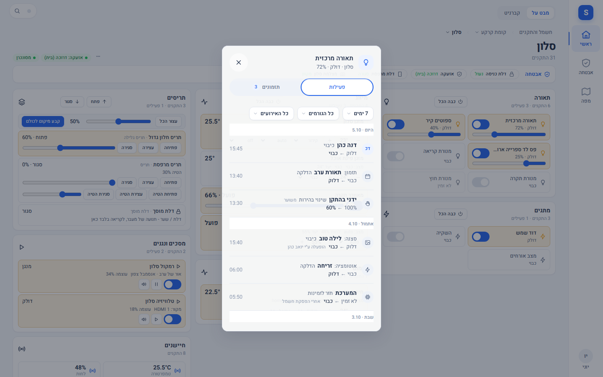
צילום מהדגמה: יומן פעילות של מנורה.
מי שרואה התקן רואה את הפעילות שלו; מנעול דורש הרשאת פתיחה או שליטה בהתקנים, ולוח אזעקה דורש הרשאת דריכה. ההיסטוריה מתחילה מאפס בהתקנת הגרסה, נשמרת 90 יום כברירת מחדל (7 עד 365, הגדרות › מולטימדיה › שמירת היסטוריית פעילות). הרצת תזמון מוצגת כרגע "ידני" או "אוטומציה (ללא שם)".
שים לב
- כל שיוך ישות לאזור, כל שינוי פריסה וכל פעולה מרוכזת נכתבים ביומן הביקורת.
- "רענן" מוגבל לקריאה אחת למשתמש כל 10 שניות; תוצאה בת פחות מ-3 שניות נעשה בה שימוש חוזר במקום לשאול שוב.
- ישות שכבר כבויה או לא זמינה מדולגת בפעולה מרוכזת — היא לא נספרת ככשל.
- שינוי גשר (bridge) דורש הפעלה מחדש אחת של תשתית המערכת לפני שפעולות חדשות (למשל מהירות מאוורר, מיקום תריס) זמינות בפועל.
 צילום מהמערכת החיה.
צילום מהמערכת החיה.
 צילום מהמערכת החיה.
צילום מהמערכת החיה.
 צילום מהמערכת החיה.
צילום מהמערכת החיה.
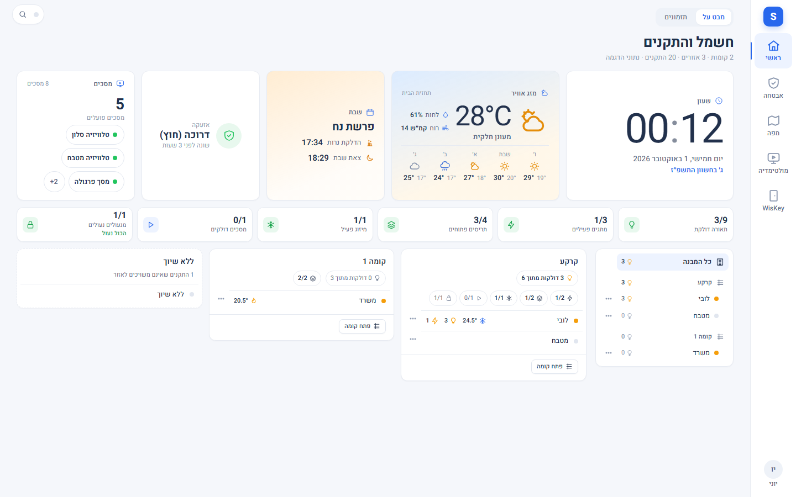
צילום מהדגמה.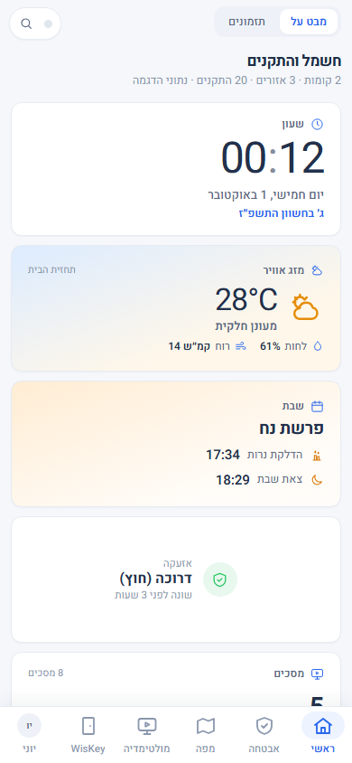
צילום מהדגמה.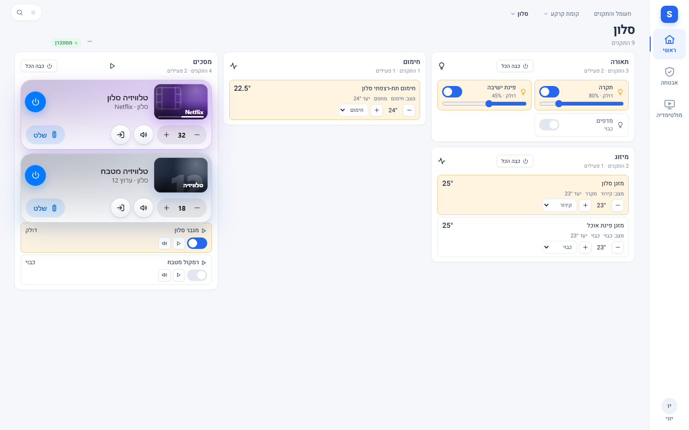
צילום מהדגמה.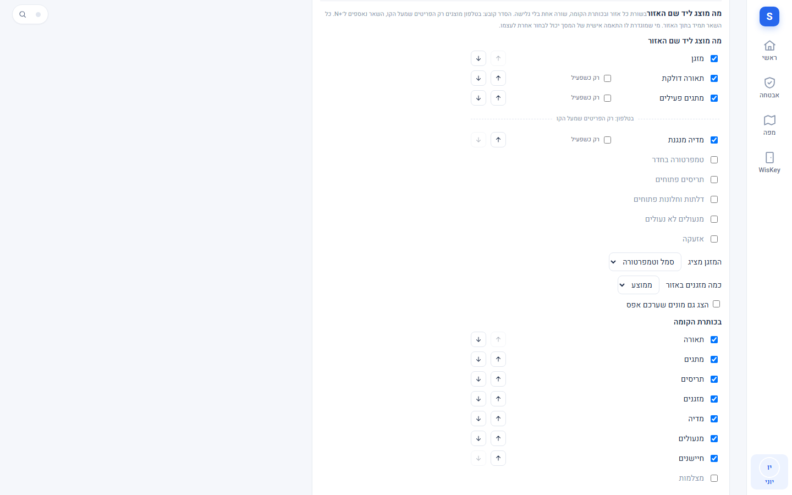
צילום מהדגמה.תזמונים
מה זה
"תזמונים" הוא הסגמנט הראשון בלשונית "קברניט" של המסך הראשי (חשמל והתקנים), לצד "מבט על". תזמון מפעיל התקנים בשעות קבועות בימים שבחרתם: להדליק תאורה בשקיעה, להנמיך תריס בעשר בבוקר, להפעיל מזגן בשעות המשרד, לכבות הכול בסוף היום. התזמונים עצמם נשמרים ופועלים ברכיב התזמונים של תשתית המערכת - גם כש-Arx סגור. המסך הזה הוא הדרך הנוחה לראות אותם, לערוך אותם ולדעת מי שינה מה.
הסגמנט מופיע רק למי שיש לו הרשאת צפייה בתזמונים (או ניהול תזמונים), ורק כשמנהל המערכת הפעיל את התזמונים בהגדרות. מי שאין לו הרשאה רואה את המסך הראשי כפי שהיה, בלי שורת לשוניות. מנהל מערכת יכול להסתיר או לסדר את הלשוניות ב-הגדרות › לשוניות.
שלושה כללים שכדאי להכיר לפני שמתחילים:
- הפעולה מתבצעת ברגע ההתחלה של המשבצת. כל תזמון בנוי ממשבצות (קטעי זמן). ב-"משעה" הפעולה יוצאת לדרך; "עד שעה" הוא רק סוף חלון, ובסופו לא קורה כלום. כדי "להדליק ב-07:30 ולכבות ב-19:00" צריך שתי משבצות - הדלקה וכיבוי. העורך מוסיף את משבצת הכיבוי לבד עם "כיבוי בסיום החלון".
- הימים שייכים לתזמון כולו, לא למשבצת. יום עם שעות שונות דורש תזמון נפרד; העורך מפצל בשבילכם, באישור.
- אין היסטוריית הרצות מהרכיב. "הרצות אחרונות" מחושבות על ידי Arx ממצב ההתקנים אחרי ההרצה, ולכן הן "אושר" או "לא אושר" - לא "הצליח" או "נכשל".
איך אני… (צופה בתזמונים)
- מוצא את הסגמנט. מסך "חשמל והתקנים" ← "קברניט" (נפתח על "תזמונים"). בראש המסך: מספר התזמונים, כמה פעילים, בכמה אזורים, ומתי ההפעלה הבאה היום. מתחת - "תזמונים פעילים" (למשל 10/12) ו-"ההרצות הבאות היום".
- בוחר תצוגה: כרטיסים, טבלה או שבוע. הבחירה נזכרת לכל דפדפן ונכנסת לכתובת, כך שאפשר לשמור קישור.
- כרטיסים: לכל תזמון כרטיס עם השם, ההתקנים, ציר של 24 שעות שמראה מתי משבצות מתחילות, הימים, התקופה, התנאי, סימון רגיש (ראו למטה), "הרצה הבאה" ומתג הפעלה/השבתה.
- טבלה: שורה לכל תזמון: שם, ימים, "משעה · פעולה" (עד שלוש משבצות ו-"ועוד N"), תנאי, הרצה הבאה, פעיל.
- שבוע: כל התזמונים הפעילים על לוח אחד של 7 ימים × 24 שעות, לקריאה בלבד. כל פס מסמן את הרגע שבו משבצת רצה, לא משך. לחיצה על פס פותחת את התזמון. תזמון שהימים שלו "ימי עבודה" או "סוף שבוע" (במקום ימים מפורשים) אינו מצויר בלוח השבוע - הוא מופיע בכרטיסים ובטבלה.
- מחפש ומסנן. חיפוש לפי שם, התקן או תג; אזור, קומה, מצב (פעילים / מושבתים / מתבצעים עכשיו / הסתיימו), יום בשבוע; קיבוץ לפי אזור, קומה, תג או מצב; מיון לפי ההרצה הבאה, שם, סדר ידני או עדכון אחרון. כשיש תנאי שבת וחג מופיעים שבבים "רק בשבת ובחג", "לא בשבת ובחג" ו-"עם תנאי". "נקה סינון" מאפס.
- מבין את "הרצה הבאה". זה המועד הבא של אחת המשבצות, כפי שהרכיב מחשב אותו לפי ימים ותאריכים. אם לתזמון יש תנאי, מופיע "· בתנאי": המועד אינו הבטחה, כי התנאי נבדק רק ברגע ההרצה (למשל "רק בשבת ובחג"). "אין הרצה קרובה" - אין עוד משבצת שתרוץ; "מושבת" ו-"הסתיים" מסבירים את עצמם. שעת שקיעה וזריחה בציר הן הערכה להיום ("משוער").
- פותח תזמון (מגירה). לחיצה על כרטיס או שורה פותחת מגירה: מתג, ציר, ימים ותקופה, המשבצות עם ההתקנים והפעולות, התנאים עם מצבם עכשיו ("כרגע: מתקיים / לא מתקיים"), חמש ההרצות הבאות, עשר הרצות אחרונות, תגיות, ומי עדכן אחרון ומתי ("נוצר מחוץ למערכת" - נוצר מחוץ ל-Arx). תנאי על חיישן שמחוץ להיקף שלכם מסומן "מחוץ להרשאתך".
- רואה למה משהו נעול. כפתור שאינו זמין לכם (עריכה, הרצה, מחיקה) מוסבר בריחוף: אין הרשאת ניהול, אין הרשאת שליטה בהתקן מסוים, נדרשת הרשאה לפעולות רגישות, סוג ההתקן כבוי בהגדרות, או שהתזמון כולל תוכן ש-Arx אינו מציג במלואו. באנר "מצב צפייה" בראש המסך אומר שאין לכם הרשאת ניהול.
- שים לב לכלל ההיקף: תזמון מוצג לכם רק אם כל ההתקנים שבו בהיקף שלכם. תזמון שכולל התקן שאינכם רואים - אינו מופיע בכלל. אם אתם רשאים לערוך, אתם עורכים רק תזמון שכל ההתקנים שבו בהיקף השליטה שלכם.
איך אני… (מי שיש לו הרשאת ניהול תזמונים)
- יוצר תזמון חדש. "תזמון חדש" פותח חלון עם שתי דרכים:
- מתבנית: שגרה שבועית (הדלקה בבוקר וכיבוי בערב, א׳–ה׳), תאורה בשקיעה, תריסים לפי עונה, מזגן בשעות משרד, פעם אחת - מחר, שבת: קירור / חימום, מוצאי שבת, או ריק. מעל כל תבנית אפשר לבחור תנאי מוכן ("ללא תנאי", "רק בשבת ובחג", "לא בשבת ובחג"). "המשך לעורך" פותח את התבנית לעריכה.
- יצירה מהירה (3 הקשות): 1) איפה ואיזה התקן (מאותו סוג), 2) מה ומתי (הדלקה, כיבוי, בהירות 50%, פתיחה, סגירה... בשקיעה, בזריחה, 07:00, 18:00 או 22:00), 3) באילו ימים (כל יום, א׳–ה׳, סוף שבוע, פעם אחת - מחר). משפט מסכם מראה מה ייווצר. "יצירת התזמון" שומר מיד; "פתיחה בעורך" מאפשר לשנות לפני השמירה. ההתקנים הרגישים לא נכללים ביצירה מהירה.
- עורך תזמון בעורך של 24 שעות. "עריכה" (או "עריכה מלאה" במגירה) פותח את העורך: לוח משמאל וההגדרות מימין (בטלפון שתי לשוניות: "לוח זמנים" ו-"הגדרות"). שלוש תצוגות:
- שבוע: שורה לכל יום, 00:00 משמאל ל-24:00 (הציר זורם משמאל לימין גם בממשק העברי, כמו לוח השבוע הקיים).
- יום: יום אחד; בטלפון הציר אנכי.
- טבלה: אותן משבצות בשורות (משעה, עד שעה (סוף חלון), פעולה, ערך, התקנים, הרצה הבאה). עורכים בתוך השורה; שעה אפשר להקליד כמו "07:30", "שקיעה" או "שקיעה+30" (דקות אחרי). שתי התצוגות הן אותו מידע.
- יוצר, מזיז ומותח משבצות. גוררים על ציר ריק ליצירה (לחיצה יוצרת שעה אחת), גוררים משבצת להזזה, ומושכים קצה לשינוי אורך. הקצה העבה הוא רגע הביצוע. משבצת בלי שעת סיום היא פעולה נקודתית (סיכה). במקלדת: חצים מזיזים, Shift+חצים משנים את שעת הסיום, Ctrl+חצים את שעת ההתחלה, Delete מוחק, Enter בוחר. משבצות באותו תזמון לא יכולות לחפוף.
- בוחר הצמדה. "הצמדה" - 5, 15 או 30 דקות: הגרירה "נדבקת" לרשת הזו. ברירת המחדל נקבעת בהגדרות, ובעורך אפשר להחליף אותה. הרכיב עצמו שומר כל דקה, וההצמדה היא כלי נוחות בלבד.
- קובע את המשבצת. בחירת משבצת פותחת מתחת ללוח פאנל: שעת התחלה וסיום (שעה קבועה, או זריחה/שקיעה + דקות אחרי - בשלב זה רק אחרי, לא לפני), פעולה לכל התקן (למשל הדלקה, כיבוי, בהירות, מצב ומעלות למזגן, מיקום תריס), הוספת התקן למשבצת, ו-"כיבוי בסיום החלון" - מוסיף משבצת כיבוי בשעת הסיום עבור אותם התקנים (זו משבצת רגילה שאפשר לערוך; כיבוי המתג מסיר אותה שוב). המתג זמין רק כשיש שעת סיום קבועה. "שכפול" ו-"מחיקה" פועלים על משבצת.
- בוחר התקנים. "בחירת התקנים…" פותח רשימה של ההתקנים שמותר לתזמן ושאתם רשאים לשלוט בהם: תאורה, כל המתגים (גם מתג שמוגן מפעולה קבוצתית), תריסים, מיזוג, מאווררים - ועם ההרשאה המתאימה גם אזעקה, מנעולים ודלתות. התקן שלא ניתן לתזמן מופיע עם הסיבה (למשל כשהפעולה דורשת קוד).
- קובע ימים, חזרה ותקופה. ימים: א׳–ש׳ או "כל יום", "א׳–ה׳", "סוף שבוע". חזרה: חוזר; פעם אחת, מושהה (אחרי ההרצה האחרונה התזמון נשמר כמושבת); פעם אחת, נמחק (אחרי ההרצה האחרונה התזמון נמחק - העורך מזהיר). תקופה: "מתאריך" ו-"עד תאריך" לתזמון עונתי.
- עורך יום אחד בלבד (פיצול). כשלתזמון כמה ימים, כל שינוי במשבצת חל על כולם ("N ימים מקושרים"). "עריכה רק ל<יום>…" פותח עריכה ליום אחד; בשמירה מופיע "פיצול התזמון": היום הזה יהפוך לתזמון נפרד עם אותם התקנים, תנאים ותקופה, והשאר יישארו בתזמון הנוכחי. אפשר לתת שם לתזמון החדש. אי אפשר לפצל תזמון שהימים שלו "ימי עבודה" או "סוף שבוע" - בחרו קודם ימים מפורשים.
- מעתיק לימים. במשבצת: "העתקה לימים…" מוסיף ימים לתזמון, והם מקבלים את אותן משבצות.
- מוסיף תנאים. בחלק "תנאים" בצד: מתנים את כל התזמון (כל המשבצות) בחיישן. אם מנהל המערכת בחר חיישן שבת וחג, יש כפתורי תנאי מוכנים: "רק בשבת ובחג", "לא בשבת ובחג" ו-"מוצאי שבת" (משבצת בשקיעה + 40 דקות, רק כשאיסור המלאכה הסתיים). "תנאי" מוסיף חיישן אחר: משווים למצב או לערך ("שווה ל", "שונה מ", "מעל", "מתחת"). כמה תנאים: "כל התנאים" או "אחד מהם". "המשך לבדוק עד סוף החלון" - התנאי נבדק שוב לאורך החלון (דורש שעת סיום). תנאי שאינו תלוי בזמן לא מוערך ב-"הרצה הבאה" (ראו למעלה: "בתנאי").
- שומר. "שמירה" פעילה רק אחרי שינוי, ורק כשהתזמון תקין ("התזמון תקין ומוכן לשמירה"). שגיאות מוצגות כרשימה, ולחיצה על שגיאה קופצת למשבצת. ההרצות הבאות מחושבות לפני השמירה. יציאה בלי לשמור מבקשת אישור, וטיוטה שלא נשמרה נשמרת בדפדפן ומוצעת בכניסה הבאה ("שחזור" / "התעלמות").
- מגיב כשמישהו שינה במקום אחר. אם התזמון שונה בזמן שערכתם, מופיע "התזמון שונה במקום אחר" עם שלוש בחירות: השוואה (מה אצלכם ומה בגרסה החדשה), טעינת הגרסה החדשה (השינויים שלכם יימחקו), או שמירה בכל זאת. השינויים שלכם לא נשמרו עד שתבחרו.
- מפעיל ומשבית. המתג בכרטיס, בשורה או במגירה. בבחירה מרובה (תיבות הסימון) - "הפעלה" ו-"השבתה" לכמה תזמונים יחד; תזמון שפותח או מנטרל (ראו למטה) מופעל רק אחד-אחד.
- מריץ עכשיו. כפתור ההרצה ("הרצה עכשיו") מריץ משבצת מיד. בתזמון עם כמה משבצות בוחרים איזו. אם יש תנאים אפשר לסמן "להריץ גם אם התנאים אינם מתקיימים". ההרצה מבקשת אישור בחלון שמסביר מה ירוץ מיד. אפשר להריץ תזמון פעם בכל 10 שניות. ההרצה נשלחת ואינה נשלחת שוב אוטומטית; התוצאה מופיעה ב-"הרצות אחרונות".
- משכפל. "שכפול" יוצר עותק בשם "העתק של ...".
- מוחק ומשחזר. מחיקה מבקשת אישור, והתזמון עובר ל-סל המחזור ל-30 יום ("סל מחזור" בראש המסך). ממנו "שחזור" יוצר את התזמון מחדש (כתזמון חדש, לפי ההרשאות והכללים של היום). אחרי 30 יום הוא נמחק סופית; מנהל מערכת בעל הרשאת ניהול יכול גם "מחיקה לצמיתות". סל המחזור שמור ב-Arx בלבד.
פעולות רגישות: אזעקה, מנעולים, דלתות ושערים
- הרשאה נפרדת. תזמון של אזעקה, מנעול, דלת או שער דורש את ההרשאה תזמון פעולות רגישות, בנוסף לניהול תזמונים ולהרשאה הרגילה על ההתקן עצמו (דריכה, נטרול, פתיחת דלת, שליטה בהתקן). מי שמנהל תזמונים בלי ההרשאה הזו רואה תזמון רגיש לקריאה בלבד - הוא לא מוסתר.
- סימון. תזמון רגיש מסומן בסמל רגיש בכרטיס, בשורה ובעורך. תזמון שפותח או מנטרל (פתיחת מנעול, נטרול אזעקה, פתיחת דלת או שער) מסומן בנוסף כ-"פותח / מנטרל".
- אישור. יצירה, שמירה, הפעלה ושחזור של תזמון שפותח או מנטרל מציגים חלון אזהרה: "התזמון יפתח / ינטרל ... גם כשאיש אינו נמצא במקום", ותיבה לסימון "אני מבין שהפעולה תתבצע אוטומטית, ומאשר". רק אחריה אפשר להמשיך. גם הרצה עכשיו של משבצת כזו מבקשת את האישור.
- קוד. קוד אזעקה או מנעול לעולם אינו נשמר בתזמון. דריכה בלי קוד מותרת. אם הלוח (או המנעול) דורש קוד לפעולה הזו, אי אפשר לתזמן אותה: תופיע הודעה שהלוח דורש קוד ושתזמון אינו שומר קודים. אם ההרשאה האישית שלכם מחייבת קוד לאזעקה, החלון יבקש את הקוד שלכם פעם אחת; הוא נבדק ואינו נשמר.
- ביומן. כל יצירה, שינוי, הפעלה, הרצה ומחיקה נרשמים ביומן הביקורת (ולתזמון רגיש גם ביצוע שנצפה).
- מרחוק. בגישה מבחוץ חלים אותם כללי "שליטה מרחוק" ו-"נטרול מרחוק" של האזעקה.
מצבים שאפשר להיתקל בהם
| מה רואים | מה זה אומר |
|---|---|
| אין סגמנט "תזמונים" ב"קברניט" | ההרשאה חסרה, או שהתזמונים כבויים בהגדרות (או שנסתרה ב-הגדרות › לשוניות) |
| "התזמונים כבויים" | התזמונים כבויים בהגדרות. מנהל מערכת רואה כפתור לפתיחת "הגדרות התזמונים" |
| "אין תזמונים להצגה. הפעלת התזמונים מנוהלת בהגדרות." | רכיב התזמונים אינו מחובר. אצל מנהל מערכת מופיעה הודעה מפורטת וכפתור להגדרות |
| "המידע אינו מעודכן — אין כרגע חיבור לתשתית המערכת." | מוצג המידע האחרון שנשמר; אי אפשר לשמור עד שהחיבור חוזר |
| "מצב צפייה" / "שמירת שינויים אינה זמינה כרגע" | אין לכם הרשאת ניהול, או ששמירה חסומה זמנית (חיבור, או ש"נדרש עדכון של רכיב החיבור") |
| "לקריאה בלבד: ..." במגירה | הסיבה מפורטת: הרשאה, התקן שאינכם שולטים בו, סוג התקן שכובה, או תוכן ש-Arx אינו מציג במלואו (למשל הפעלת סקריפט, או פעולה בלי התקן) |
| "התזמון שונה במקום אחר" | מישהו שינה את התזמון בזמן שערכתם (ראו סעיף 19) |
| "התזמון נמחק במקום אחר" | התזמון כבר לא קיים |
| "רכיב התזמונים לא ענה בזמן; ייתכן שהשינוי נשמר" | רעננו את הרשימה לפני ניסיון נוסף; שינוי לא נשלח שוב אוטומטית |
מה רק מנהל מערכת עושה
- הגדרות › תזמונים (ראו
80-settings_HE.md): הפעלת התזמונים, בחירת חיישן שבת וחג, סוגי ההתקנים המותרים, ברירות מחדל לעורך, בדיקת החיבור. - הרשאות: מי רואה, מי מנהל ומי מתזמן פעולות רגישות - ב-משתמשים והרשאות (ראו
81-roles_HE.md). - "לבדיקה": רשימת תזמונים שדורשים תשומת לב - למשל מי שיצר אותם כבר אינו מורשה לכל ההתקנים שבהם, או שהוא אינו פעיל; תזמון רגיש שנוצר מחוץ ל-Arx; תוכן ש-Arx אינו מציג במלואו; סוג התקן שכובה; תנאי רגיש שאינו זמין; לוח אזעקה שאולי דורש קוד. אפשר לסמן ולהשבית כמה יחד. Arx לעולם לא משבית תזמון בעצמו.
שים לב
- תזמון ממשיך לפעול אחרי שמי שיצר אותו איבד הרשאה או הוסר. לכן קיימת רשימת "לבדיקה", והיא מיועדת למנהל המערכת.
- תזמון שנערך או נוצר ישירות בתשתית המערכת (בכרטיס התזמונים המקורי) מופיע ב-Arx כתזמון "שנוצר מחוץ למערכת". הוא נערך כאן רק אם Arx מבין אותו במלואו; אחרת הוא לקריאה בלבד ואינו נכתב מחדש. הרשאות Arx אינן חלות על עריכה שנעשית מחוץ ל-Arx.
- רכיב התזמונים אינו רושם היסטוריית הרצות. "הרצות אחרונות" הן הערכה של Arx, ותזמון שדולג בגלל תנאי אינו מופיע בהן.
- כל שינוי, הרצה ומחיקה נרשמים ביומן הביקורת. סודות (קודים) לעולם אינם נשמרים בתזמון ואינם מופיעים ביומן.
מולטימדיה — מסכים ושלט
מה זה
"מולטימדיה" היא כניסה משלה בסרגל הצד (בין "מפה" ל-WisKey) ובסרגל התחתון בטלפון, ובראשה שלוש לשוניות: "מסכים", "נגנים ורמקולים" ו"קבוצות". במסכים - טלוויזיות ומסכי תצוגה - לכל מסך פיזי כרטיס אחד, מקובצים לפי קומה, ולחיצה על כרטיס פותחת שלט שלם: הפעלה וכיבוי, עוצמה, מקור ואפליקציה, חצים, ערוצים, מספרים, מקשי צבע והקלדה. אותו שלט נפתח גם מכרטיס המסכים שבמסך האזור. ב"נגנים ורמקולים" יש כרטיס לכל רמקול, נגן ומגבר, ולחיצה עליו פותחת נגן: מה מנגן, ניגון והשהיה, עוצמה, "הבא בתור", מועדפים ותחנות, וקיבוץ של כמה חדרים לניגון אחד. ב"קבוצות" רואים מי מנגן עם מי ומפעילים קבוצות שמורות בלחיצה אחת. מערכת שמכירה את אותו התקן בכמה דרכים (למשל טלוויזיה דרך היצרן, דרך שירות ענן ודרך שידור למסך, או רמקול דרך היצרן ודרך נגן המוזיקה) מציגה אותו ככרטיס אחד.
מה שמופיע כאן מאושר מראש: מנהל המערכת מאשר ב-הגדרות › מולטימדיה אילו מסכים, נגנים ורמקולים מוצגים (ראו 80-settings_HE.md), ואתם רואים רק מה שבקומות שההרשאה שלכם מכסה. מגבר או מקרן קול שמקושר למסך מופיע גם כשורה "שמע: ..." בכרטיס המסך וכיעד של העוצמה.
ארבעה כללים שכדאי להכיר לפני שמתחילים:
- הדלקה וכיבוי הם כפתורי הפעלה בלבד. אין בשלט מקש "הפעלה" שמחליף מצב: מסכים רבים מפרשים אותו כהחלפה, ולכן ההפעלה נשלחת תמיד כהדלקה או כיבוי מפורשים. פתיחת השלט אינה מדליקה מסך ואינה משנה דבר.
- "כבוי" אינו אמין עד הסוף. מסכים מדווחים על עצמם בדרכים שונות. אם מסך לא אישר פקודה תוך כשמונה שניות תראו "המסך לא אישר את הפקודה" והכרטיס חוזר למצב האחרון שאושר - המערכת לא מנחשת ולא שולחת שוב.
- שום פקודה לא נכנסת לתור. לחיצה שנשלחה מהר מדי נופלת (הכפתור "רועד" קצרות, בלי הודעה); אחרי ניתוק וחיבור מחדש כלום לא נשלח מעצמו.
- מה שהשלט מציג, המסך יודע לעשות. מקש שאין למסך הזה פשוט לא מצויר. מסך של יצרן אחר מקבל מערך מקשים אחר.
איך אני… (צופה ושולט)
- מוצא את המסכים. הכניסה "מולטימדיה" ← "מסכים". הכניסה מופיעה רק למי שיש לו צפייה במסכים ובמולטימדיה, ורק כשמנהל המערכת לא כיבה את האזור. בראש המסך: כותרת, שבבי חדרים שנגללים הצידה, כפתור קומה וחיפוש. בטלפון הכרטיסים אופקיים וקומפקטיים והקומות הן שבבים.
- קורא כרטיס. שם המסך, החדר, שורת מצב ("מנגן · ...", "מושהה · ...", "כבוי", "מצב אמנות", "לא זמין") ומה מוצג כרגע - תמונה קטנה רק כשיש תוכן אמיתי, אחרת סמל ניטרלי בגוון של המערכת (לא לוגו של אפליקציה). בכרטיס: הפעלה, עוצמה, השתקה ומקור, ושורת "שמע: ..." כשיש מגבר מקושר. כרטיס מקווקו עם "לא זמין · מאז HH:MM" - המסך אינו מגיב, ואין בו שום פעולה.
- מסנן ומחפש. שבב חדר, כפתור הקומה, חיפוש לפי שם, וסינון מצב: הכול, דולקים, כבויים, לא זמינים. "לא זמינים" נספרים בנפרד ואינם נכללים בכיבוי קבוצתי.
- פותח את השלט. לחיצה על כרטיס (או על "שלט" בכרטיס האזור). בדסקטופ ובטאבלט השלט נפתח כלוח בצד, ליד הסרגל; בטלפון - כגיליון שעולה מלמטה. בראשו: הפעלה, מקור ואפליקציות. בגוף, לפי הסדר: "אחרונים", חזרה · בית · תפריט, חצים ואישור (או משטח מגע), עוצמה, ערוצים וניגון. מה שנמצא מאחורי "עוד מקשים": מספרים, מקשי צבע, הקלדה ומקשים נוספים של הדגם.
- מדליק ומכבה. מסך כבוי מציג כפתור הפעלה גדול מעל לוח מעומעם - רק הוא פעיל. לחיצה מציגה ספינר עד שהמסך מדווח שהשתנה. מסך במצב אמנות מציג "מעבר לצפייה" (הדלקה לתוכן) ובנוסף את כפתור ההפעלה שבראש השלט לכיבוי מלא.
- שולט בעוצמה. כפתורי עוצמה, מחוון כשהמסך תומך בקביעת ערך, והשתקה. כשיש מגבר מקושר מופיע מתג "רמקולי המסך / מגבר" והעוצמה עוקבת אחרי הבחירה (ברירת המחדל נקבעת בהגדרות). מנהל המערכת יכול לקבוע תקרת עוצמה למסך. מסך שהקול שלו יוצא לרמקול חיצוני אינו מציג מחוון, רק כפתורים.
- לוחץ מקשים. חצים ואישור (או משטח מגע ששולח חצים), חזרה, בית ותפריט, ערוצים. חצים ועוצמה חוזרים על עצמם כל עוד מחזיקים לחוץ (כל 200 מילישניות, עד 10 שניות, ונפסק ברגע שמשחררים). בדסקטופ אפשר להשתמש גם במקלדת - חצים, Enter ו-Backspace - אבל רק כשהשלט בפוקוס ואתם לא מקלידים בשדה. לחיצות מהירות מדי נופלות, ואינן מצטברות.
- מחליף מקור או אפליקציה. הלשוניות "מקורות" ו"אפליקציות" (רשת של סמלים ניטרליים, בשמות שהמסך מדווח או כפי שמנהל המערכת שינה). שורת "אחרונים" שומרת את שלוש הבחירות האחרונות שאושרו, בשביל המסך הזה בלבד. בחירה שולחת את המחרוזת של המסך עצמו, לא את השם שמוצג.
- מקליד טקסט. בשלט, מאחורי "עוד מקשים", על מסכים שתומכים בכך: עד 200 תווים, נשלח רק בלחיצה על שליחה, לעולם לא ממולא מראש. ביומן הביקורת נרשם שנשלח טקסט ואורכו - לא התוכן.
- מנגן ומשהה. כפתורי הניגון מופיעים כשהמסך או מכשיר השידור שלו מדווחים על תוכן. אם מכשיר השידור מדווח על שם התוכן והתמונה - הם מוצגים בכרטיס.
- מכבה מסכים בקומה או באזור. בכפתור הקומה: "כבה מסכים"; בכרטיס האזור: "כבה הכל". מופיעה שאלה עם מספר המסכים שיכובו, והפירוט מקופל. נשלחת פקודה רק למסכים שאושר שהם דולקים (או במצב אמנות); כבויים, לא זמינים ומסכים שלא אושר מצבם מדולגים ומופיעים עם הסיבה. בסוף מופיעה תוצאה לכל מסך בנפרד, לפי מה שדיווח ולא לפי מה ששלחנו. מגברים ורמקולים לעולם לא נכללים (אולי הם משמיעים לחדר אחר). אין כיבוי לכל הבניין מהמסך הזה. ב-חשמל והתקנים, "כבה אזור" ו"כבה הכל בבניין" כוללים אף הם מסכים מאושרים שדולקים בלבד; נגן שלא הוגדר כמסך מופיע כ"לא כלול: לא מוגדר כמסך".
- פותח את השלט מהאזור ומהבית. כרטיס המדיה במסך האזור מציג כרטיס קטן לכל מסך בחדר (טלוויזיה ומכשירי השידור שלה הם כרטיס אחד), עם הפעלה, עוצמה, השתקה ו"שלט". בעריכת המסך הראשי אפשר להוסיף את הווידג'ט "מסכים": הוא מראה כמה מסכים דולקים וכל מסך דולק כשבב שפותח את השלט. מי שאין לו צפייה במסכים לא רואה אותו.
איך אני… (נגנים, רמקולים וקבוצות)
הכללים של המסכים חלים גם כאן: כפתור שאין להתקן אינו מצויר, פקודה שלא אושרה תוך כשמונה שניות מסומנת "לא אושר" והכרטיס חוזר למצב האחרון שאושר, שום דבר לא נכנס לתור, ואחרי ניתוק וחיבור מחדש כלום לא נשלח מעצמו.
- מוצא את הנגנים. "מולטימדיה" ← "נגנים ורמקולים". הכרטיסים מקובצים לפי קומה, עם שבבי חדרים, חיפוש וסינון מצב: "מנגנים", "כבויים", "לא זמינים". בבית בלי קומות מוצגת רשימה אחת, "כל החדרים". התקנים שלא שויכו לחדר מופיעים בסוף, תחת "לא משויכים" (ובסינון החדרים - "ללא חדר"); מנהל המערכת משייך אותם ב-הגדרות › מולטימדיה. רכיבים שאינם התקנים פיזיים - למשל חיבורים של אפליקציות - אינם מופיעים כאן כלל.
- קורא כרטיס. תמונת העטיפה, שם ההתקן, החדר, ושורת מצב: "מנגן · שם השיר", "מושהה", "לא מנגן", "כבוי", "לא זמין", או "מנגן עם סלון" כשהוא חלק מקבוצה. בכרטיס: הפעלה והשהיה, עוצמה והשתקה, ו"נגן" שפותח את הנגן. תחנת רדיו מציגה "שידור חי" ובלי פס התקדמות.
- פותח את הנגן. בדסקטופ ובטאבלט כלוח בצד, בטלפון כגיליון שעולה מלמטה. בראשו שם ההתקן והחדר; בגוף: התמונה, שם השיר, האמן והאלבום, פס התקדמות שאפשר לגרור (הוא ממשיך לזוז מעצמו), כפתורי ערבוב · הקודם · הפעל והשהה · הבא · חזרה, ועוצמה.
- שולט בעוצמה. מחוון והשתקה. בקבוצה מופיע מחוון אחד לכולם, ולצידו "לפי חדר": מחוון לכל חדר, ולצד כל חדר מה קרה לו. עוצמה נחתכת רק למקסימום שמנהל המערכת קבע לאותו רמקול (או לחלון הלילה שהגדיר) - אין מקסימום ברירת מחדל, אין כפתור "מקסימום", והפעלת שיר, קבוצה או העברת מוזיקה אינן משנות עוצמה.
- רואה מה הבא. "הבא בתור" מציג את השיר הנוכחי, את הבא, וכמה נשארו. אם הקריאה נכשלה או ישנה מדי כתוב "לא זמין" - לעולם לא "ריק". בבית שבו אין ספריית מוזיקה אפשר לראות מיקום וגודל בלבד. כשהחיבור הישיר לשרת המוזיקה מוגדר (ראו "תור וספרייה" מיד אחרי הרשימה הזו), "הבא בתור" הוא התור כולו ולא שלוש שורות.
- מתחיל מועדף, תחנה או פלייליסט. לשוניות "מועדפים", "תחנות" ו"פלייליסטים" (לשונית שאין לה תוכן במערכת שלכם אינה מוצגת; בבית בלי ספריית מוזיקה אין לשוניות כלל). לחיצה מתחילה את הפריט; לחיצה ארוכה - "נגן אחרי הנוכחי". הרשימה אחת לכולם ומנהל המערכת מסדר ומסתיר בה פריטים. אפשר להתחיל רק פריט שהמערכת הציגה בעצמה.
- מעביר את המוזיקה לכאן. כשנגן אחר מנגן מופיע "העבר את המוזיקה לכאן": התור עובר אליו, והמקור נעצר. לא בכל מערכת זה אפשרי - ואז הכפתור אינו מוצג.
- שולט במגבר. מגבר עם כמה אזורים (למשל ראשי ואזור 2) הוא כרטיס אחד עם בורר אזורים. לכל אזור הפעלה, עוצמה, השתקה, מקור ומצב צליל; באזור 2 אין ניגון. למגבר אין מקשי שלט.
- מקבץ חדרים לניגון אחד. בנגן, בחלק "קבוצה", מסמנים את החדרים שיצטרפו. הסימונים נשלחים יחד אחרי חצי שנייה, ולכל חדר מוצגת התוצאה בשמו: "הצטרף" או "פרגולה לא הצטרף". התוצאה נקראת מההתקן ולא מנחשים אותה. מוצעים רק חדרים שאפשר לקבץ יחד: זמינים, שלא בקבוצה אחרת, ושההרשאה שלכם מכסה. קבוצה של ארבעה התקנים ומעלה, או של יותר מקומה אחת, מבקשת אישור קודם ("הקבוצה תשמיע ב-4 חדרים"); קבוצה לכל הבניין דורשת הרשאה של מנהל. ב"קבוצות" מסירים חדר מקבוצה באותה צורה.
- מפעיל קבוצה שמורה. ב"קבוצות", בכרטיס קבוצה שמורה (למשל "סלון + מטבח"), "הפעל". הקבוצה מותאמת למצב הנוכחי - מי שיש להוסיף מצטרף, מי שיש להוריד יוצא - ואם הוגדרו עוצמות הן נקבעות אחרי כן. הכרטיס מציג ספינר, ואחרי כן "פועל" או את החדרים שלא הצטרפו, בשמם. מי שיש לו עריכת מסך המולטימדיה והשלט יכול ליצור ולערוך קבוצות שמורות גם משם, ובהגדרות.
- מחליש או מגביר קבוצה. מחוון הקבוצה פועל ביחס (ברירת מחדל: כל החדרים משתנים באותו יחס והאיזון ביניהם נשמר) או בערך אחד לכולם. חדר מושתק, כבוי או לא זמין מדולג ומופיע עם הסיבה, וחדר שאין לכם הרשאה אליו מסומן כך ואינו נחשב כשל.
- עוצר את המוזיקה בקומה. בכפתור הקומה, כשמשהו מנגן בה: "עצור מוזיקה" - שאלה קצרה, ואחריה תוצאה לכל חדר. נעצרים רק נגנים שמנגנים בקומה; התקנים שאינם משויכים לחדר אינם נכללים.
- רואה קבוצה וירטואלית. קיצור שהוגדר בתשתית המערכת כדי להשמיע בכמה רמקולים יחד ("כל הרמקולים") מופיע ב"קבוצות" כ"קבוצה וירטואלית": אפשר להפעיל, להשהות ולשנות עוצמה, אבל אי אפשר להצטרף אליה או לפרק אותה.
איך אני… (מי שיש לו הרשאת עריכה)
מי שיש לו עריכת מסך המולטימדיה והשלט רואה בתפריט המשתמש שתי פעולות: "עריכת מסך המולטימדיה" ו"עריכת השלט" (האחרונה רק כששלט פתוח). הן נמצאות רק בתפריט, לא על המסך עצמו.
- עורך את מסך המסכים. "עריכת מסך המולטימדיה" פותחת את המסך במצב עריכה עם שורת שמירה, ביטול ו"ברירת מחדל", ולוח צד:
- סדר: גרירה או חצי למעלה ולמטה.
- מועדפים: כרטיס שמועבר ל"מועדפים" עולה לשורה עליונה; אפשר להחזיר אותו לקבוצה שלו.
- גודל: קטן, בינוני או גדול (בטלפון עד בינוני).
- נראות: לכל מסך - מוצג בדסקטופ ומוצג בטלפון.
- קיבוץ: לפי קומה, לפי אזור או בלי קיבוץ; וסדר הקומות.
העריכה חלה על הלשונית שפתוחה - מסכים, נגנים ורמקולים או קבוצות - ולכל לשונית סדר, מועדפים ונראות משלה.
השינוי שמור בהתקנה ותקף לכל מי שלא בחר פריסה אישית. אם מישהו אחר שמר בינתיים, השמירה נדחית והמסך נטען מחדש לפי הגרסה העדכנית, כדי שלא תדרסו שינוי בלי לראות אותו. בטלפון מסך העריכה מוסתר כשמנהל המערכת הסתיר את עורך הפריסה בנייד.
- פריסה אישית. מי שיש לו גם התאמה אישית של המסך שלי יכול לערוך פריסה אישית באותו מסך: סדר, קיבוץ, גודל ונראות של הכרטיסים שלו בלבד, מעל ברירת המחדל של ההתקנה. "ברירת מחדל" מחזירה לפריסת ההתקנה. מי שאין לו את ההרשאה לא רואה את האפשרות, והשרת דוחה שמירה שלה.
- עורך שלט. "עריכת השלט" מציעה היקף: "למסך הזה" או "ברירת מחדל לכל המסכים". מפעילים ומכבים חלקים (אחרונים, חצים, עוצמה, ערוצים, ניגון, מספרים, מקשי צבע, הקלדה ומקשים נוספים), מסדרים אותם ובוחרים מה מאחורי "עוד מקשים". ברשימות המקורות והאפליקציות של המסך אפשר לסדר, להסתיר, לשנות שם ("HDMI 1 · ממיר") ולבחור סמל. מקור שהוסתר אינו מופיע לאף אחד, והשרת דוחה בחירה בו; בעורך הוא נשאר ברשימה, עמום, וניתן להחזיר אותו. מי שיש לו גם הרשאת הגדרות רואה שם רשימת "חיבורים" לקריאה: איזה חיבור עונה על מה.
תור הניגון המלא וספריית המוזיקה
הנגן של רמקול יכול להציג את התור כולו ולערוך אותו, ולחפש בספריית המוזיקה. זה עובד רק כשהמתקין הגדיר חיבור ישיר לשרת המוזיקה (הגדרות › מולטימדיה › חיבור, ראו 80-settings_HE.md). עד שהחיבור מוגדר, הנגן נראה ופועל כמו קודם: "הבא בתור" הקצר, ומועדפים, תחנות ופלייליסטים בלי תיבת חיפוש. כשהחיבור מוגדר אבל לא עונה, "הבא בתור" אומר "לא זמין" (לעולם לא "ריק"), והספרייה חוזרת לצורה הקצרה. אף אחד מהמצבים האלה אינו משפיע על ניגון, עוצמה, קיבוץ או כל פעולה אחרת בנגן.
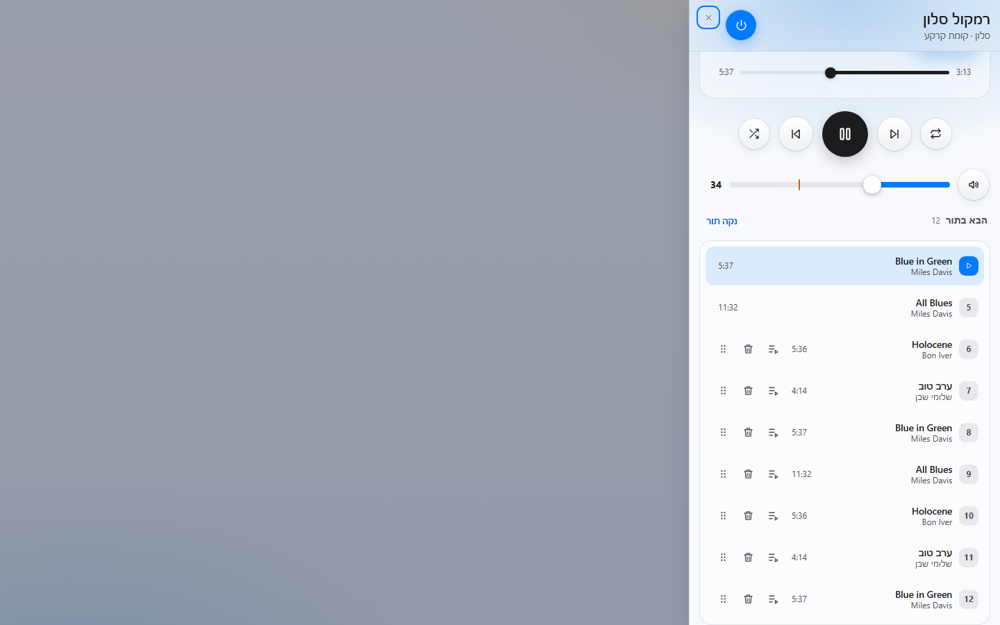
צילום מהדגמה.- רואה את התור. "הבא בתור" מונה את כל השורות: השיר המנגן ראשון (מסומן), אחריו כל השאר לפי הסדר, עם משך ושם האמן. מספר השורות מופיע ליד הכותרת. התור מתרענן כשהנגן נפתח, אחרי כל עריכה, כשהשיר מתחלף, וכל חצי דקה כל עוד הנגן פתוח. התור נקרא עם הרשאת הצפייה במולטימדיה, גם בלי הרשאה לערוך.
- **עורך את התור (הרשאה "עריכת תור הניגון",
media.queue, ובנוסף שליטה במולטימדיה). בכל שורה שאפשר לערוך: ידית לגרירה לסדר חדש (במקלדת: כפתורי "הזז למעלה" ו"הזז למטה" של השורה), מחיקה, ו"נגן הבא"** - השורה עוברת מיד אחרי השיר המנגן. הפעולות מתבצעות מיד, בלי חלון אישור: השורה זזה או נעלמת. - מנקה את התור. "נקה תור" שואל פעם אחת ("לנקות N שירים מהתור?") ומוחק את מה שאפשר למחוק.
- שורות נעולות. השיר המנגן והשורה שהשרת כבר טען מראש אינם ניתנים להזזה או למחיקה, ואי אפשר להכניס שורה לפניהם. הן מוצגות בלי ידית. אם השורה כבר לא קיימת כשלוחצים (התור השתנה בינתיים) הפעולה נדחית והתור מתרענן.
- קבוצה. כשהנגן הוא מוביל של קבוצת רמקולים, עריכת התור משפיעה על כולם, ולכן נדרשת ההרשאה גם בחדרי החברים שבקבוצה.
- מי שאין לו הרשאת עריכה רואה את התור לקריאה בלבד, בלי ידיות ובלי כפתורים.
- **מחפש בספרייה (הרשאה "עיון וחיפוש בספריית המוזיקה",
media.browse). בנגן לשונית רביעית, "ספרייה", בנוסף ל"מועדפים", "תחנות" ו"פלייליסטים". בראשה בורר סוג: שירים · אלבומים · אמנים · פלייליסטים · תחנות, כפתור "עוד" לדפדוף, ותיבת חיפוש בספרייה (החיפוש רץ כשמפסיקים להקליד לרגע; "נקה חיפוש" מאפס). לחיצה על פריט מנגנת אותו עכשיו (זו שליטה רגילה בנגן); בשורה גם "נגן הבא" ו"הוסף לתור"**. החיפוש עצמו זמין רק כשהחיבור הישיר מוגדר.
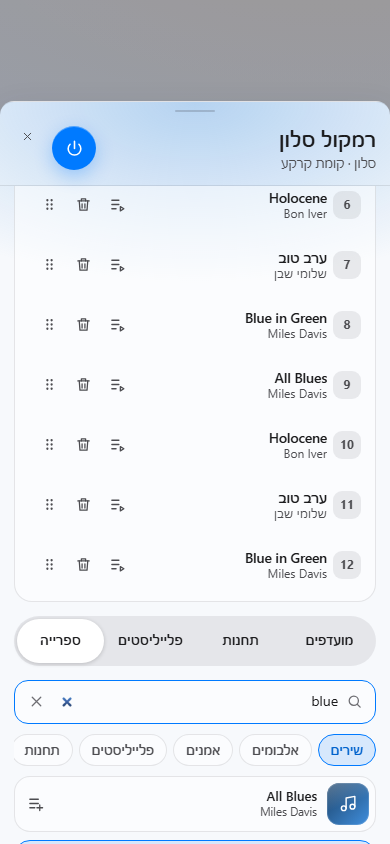
צילום מהדגמה.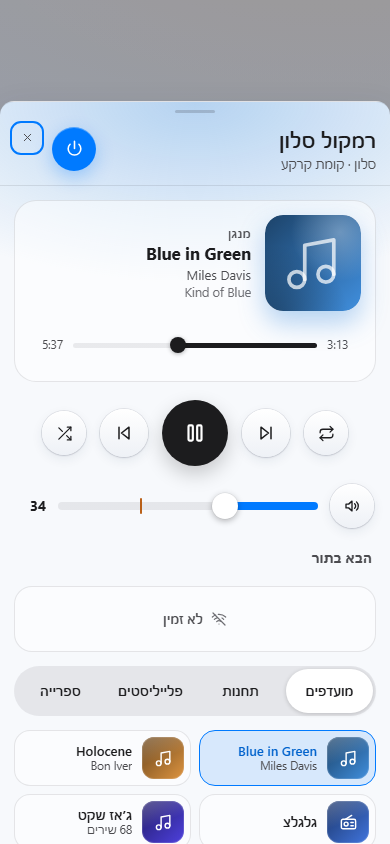
צילום מהדגמה.שימו לב: מספר הפעולות בשנייה מוגבל (עריכות, ובנפרד חיפושים); פעולה שחרגה נדחית ואינה נשארת בתור. עריכה שנכשלה אינה נשלחת שוב אוטומטית. כל ניסיון עריכה נרשם ביומן הביקורת (סוג הפעולה והתוצאה בלבד, בלי שמות שירים).
הכרזות קוליות
המערכת יכולה להקריא שורת טקסט ברמקולים לפי חדר או לפי רמקול, באמצעות מנוע הדיבור של התשתית. אפשר להכריז ידנית או כפעולה של חוק אוטומציה. כבוי כברירת מחדל: עד שמנהל מגדיר, אי אפשר להכריז ושום חוק לא ידבר.
איך אני… (מנהל מערכת, הגדרות › מולטימדיה › הכרזות קוליות)
- בוחרים מנוע דיבור (ישות הדיבור של התשתית) ושפה.
- מסמנים רמקולים מורשים להכרזה. רק רמקול מסומן יכול לדבר; "חדר" פירושו הרמקולים המורשים שבו. אם הרשימה ריקה, מאשרים קודם נגנים בלשונית "מסכים ונגנים".
- קובעים מקסימום הכרזות בדקה.
- בדיקה: "השמע בדיקה" משמיע משפט קבוע ברמקול או בחדר שנבחרו. רק אחרי שהשמיעה עבדה - מפעילים את המתג הכרזות קוליות.
- נותנים את ההרשאה
media.announce(רגישה: מנהלי אתר ומערכת) למי שמותר לו להכריז.
איך אני… (מי שהוזכרה לו ההרשאה)
- באותו מסך, "הכרזה עכשיו": בוחרים חדר או רמקול, מקלידים טקסט ולוחצים הכרז.
- הכרזות אחרונות מציגות לכל ניסיון: מי, מתי, ידנית / בדיקה / חוק, והתוצאה: נשמע, נכשל, נחסם (קצב), נדחה או בביצוע.
שים לב: כל ניסיון נרשם ביומן הביקורת, כולל נדחים. הגבלת הקצב נועדה למנוע הצפה. הטקסט שמוקרא הוא מה שהוקלד: אל תכתבו בו מידע רגיש.
שידור מצלמה למסך
בלייב, ליד "מסך מלא", יש כפתור "שדר למסך": מציג את המצלמה הנוכחית על טלוויזיה או מסך חכם שמנהל אישר לשידור. כבוי כברירת מחדל - הכפתור לא מופיע עד שמנהל מפעיל ומאשר מסך.
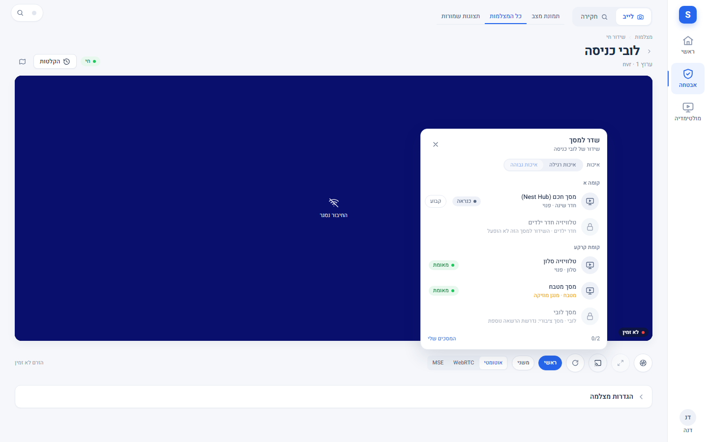
צילום מהדגמה: הבורר מציג מסכים לפי קומה ואת מצב כל אחד (מאומת, חסום, לא זמין).
**איך אני… (מי שיש לו הרשאת שידור, media.cast: מפעיל ומעלה)**
- בלייב פותחים מצלמה ולוחצים שדר למסך.
- בוחרים מסך. כל מסך מציג את מצבו: פנוי, כבוי, מנגן מוזיקה, משדר או לא זמין. מסך שלא אושר מסומן במנעול עם הסיבה (למשל "השידור למסך הזה לא הופעל" או "מסך ציבורי: נדרשת הרשאה נוספת").
- בוחרים איכות (רגילה, או גבוהה אם המסך תומך) ומשך (ברירת מחדל 30 דקות; אפשר קבוע אם הותר), ולוחצים שדר.
- מסך שמנגן מוזיקה שואל לפני שמפסיקים אותה.
- המוסית הגלובלית מציגה את השידורים הפעילים: להאריך (עד 8 פעמים), להחליף מצלמה או לעצור; עצירה יכולה גם לכבות את המסך אם הוא היה כבוי לפני השידור.
- "המסכים שלי לשידור" מציג מה מותר לכם.
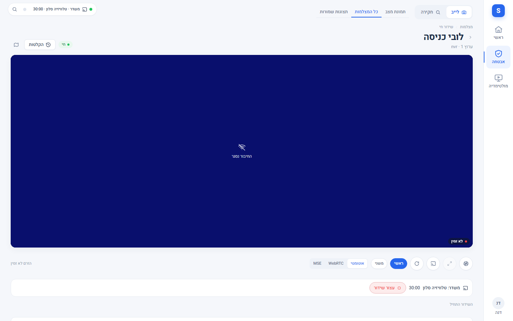
צילום מהדגמה: מצלמה בלייב ובורר המסכים פתוח.
איך אני… (מנהל מערכת) - הגדרות › מולטימדיה › שידור למסכים: מפעילים את המתג, בודקים את כתובת המקור (המשדר ברשת הביתית), מאשרים כל מסך בנפרד, ומריצים שידור בדיקה של 60 שניות. מגדירים מקסימום שידורים בו-זמנית, משך ברירת מחדל ואיכות. נדרש גם עדכון רכיב החיבור לגרסה 0.7.0 והפעלה מחדש של התשתית, ואפשרות ההתקנה cast_relay. הבדיקה הפיזית הראשונה רק לפי docs/operations/CAST_FIRST_PHYSICAL_TEST_RUNBOOK.md.
מגבלה: לא נבדק על מסך אמיתי. במסך שלא מקבל שידור, הכפתור אומר "המסך לא מקבל שידור".
מצבים שאפשר להיתקל בהם
| מה רואים | מה זה אומר |
|---|---|
| אין כניסה "מולטימדיה" | חסרה הרשאת צפייה במסכים, או שמנהל המערכת כיבה את האזור ב-הגדרות › מולטימדיה (או הסתיר את הלשונית ב-הגדרות › לשוניות) |
| אין מסכים, או חסר מסך מסוים | המסך עוד לא אושר בהגדרות, הוא מחוץ להיקף שלכם, או שהוא לא זוהה כמסך |
| כפתור הפעלה גדול מעל לוח מעומעם | המסך כבוי. שום מקש, עוצמה או מקור אינם נשלחים למסך כבוי |
| "מצב אמנות" | מסך מסוג מסגרת שמציג תמונה. "מעבר לצפייה" מדליק לתוכן; ההפעלה שבראש השלט מכבה לגמרי |
| כפתור ההדלקה מושבת | למסך אין הדלקה מרחוק (רק כיבוי, או שההדלקה תלויה בהגדרה שמחוץ למערכת). הסיבה מופיעה בריחוף בלבד |
| "לא זמין · מאז HH:MM" | המסך לא מגיב. אין בו פעולה והוא לא נכלל בכיבוי קבוצתי |
| ספינר על הכפתור | הפקודה נשלחה וממתינה לדיווח של המסך |
| "המסך לא אישר את הפקודה" | הפקודה התקבלה, אבל המסך לא דיווח שהשתנה תוך כשמונה שניות. הכרטיס חוזר למצב האחרון שאושר. לא נשלח שוב אוטומטית |
| הכפתור "רועד" ולא קורה כלום | לחצתם מהר מדי; הלחיצה נפלה ולא תישלח |
| "פקודת הפעלה קודמת עדיין ממתינה" | פקודת הפעלה אחת בכל רגע למסך; המתינו לתוצאה (ובין שתי פקודות לפחות שתי שניות) |
| מצב צפייה: אין כפתורי שליטה | יש לכם רק צפייה במסכים ובמולטימדיה. המצב והתוכן מוצגים, בלי שליטה |
| מקורות, אפליקציות והקלדה חסרים במסך מסוים | זה מסך ציבורי (חדר משותף, לובי): החלפת מקור ואפליקציה והקלדה דורשות הרשאה נפרדת. עוצמה ומקשים עובדים |
| "המסך אינו תומך בפעולה זו" | המקש או הפעולה אינם בסט של המסך הזה |
| "נדרש עדכון של רכיב החיבור" | רכיב החיבור בתשתית המערכת ישן מדי לפקודות מסך (גרסה 0.4.0) או לפקודות נגנים וקבוצות (גרסה 0.5.0); ההתקנה בידי מנהל המערכת (ראו 80-settings_HE.md) |
| העוצמה עוקבת אחרי המגבר ולא אחרי המסך | המגבר מקושר ובחירת השמע היא "מגבר"; החליפו ב"רמקולי המסך" |
| נגן "לא זמין" וכפתוריו מעומעמים | אין כרגע דרך להגיע להתקן (כבוי, מנותק, או שהמערכת רק זוכרת אותו). המערכת אינה מנחשת מה הוא יודע לעשות ושומרת את הכפתורים האחרונים מעומעמים |
| "קיבוץ לא תואם" | ההתקן מקובץ באחת משתי הדרכים שהמערכת מכירה ולא בשנייה. ההצטרפות מושבתת עד שמנהל המערכת יפרק אחת מהן |
| "מנגן עם סלון" | ההתקן חלק מקבוצה שהסלון מוביל; הפקודות שלו (ניגון, תור) מתבצעות על המוביל |
| חדר "לא הצטרף" אחרי קיבוץ | ההתקן קיבל את הבקשה ולא הצטרף. לא נשלח שוב אוטומטית; אפשר לנסות שוב |
| "לא משויכים" | התקנים בלי חדר. הם עובדים, אבל מי שהרשאתו לקומה מסוימת אינו רואה אותם עד שמנהל המערכת ישייך אותם |
| מחוון הקבוצה לא הזיז חדר אחד | החדר מושתק, כבוי, לא זמין, או שיש לו מקסימום עוצמה; הסיבה מופיעה ליד שמו |
| אין לשוניות מועדפים ותחנות | אין במערכת ספריית מוזיקה זמינה, או שמנהל המערכת כיבה אותן. הנגן עובד כרגיל |
| אין לשונית "ספרייה", או שאין תיבת חיפוש | חסרה לכם ההרשאה "עיון וחיפוש בספריית המוזיקה", או שהחיבור הישיר לשרת המוזיקה אינו מוגדר או אינו עונה (החיפוש תלוי בו) |
| התור מוצג בלי ידיות ובלי מחיקה | חסרה לכם ההרשאה "עריכת תור הניגון" (או השליטה במולטימדיה), או שהחיבור הישיר אינו מוגדר |
| "הבא בתור" אומר "לא זמין" | החיבור הישיר מוגדר אבל אינו עונה כרגע. הוא נבדק שוב מעצמו אחרי חצי דקה; הנגן עצמו ממשיך לעבוד |
| שורה בתור בלי ידית | השיר המנגן והשורה שנטענה מראש נעולים |
מה רק מנהל מערכת עושה
- הגדרות › מולטימדיה (ראו
80-settings_HE.md): אישור מסכים, נגנים ורמקולים, שם, סימון "ציבורי", פרופיל מקשים, מגבר מקושר, תקרת עוצמה וחלון לילה, שיוך התקן לחדר, מקשים נוספים לדגם, רשימת החיבורים, איחוד כפילויות (אשף ההצעות) וידני, קבוצות שמורות, סידור המועדפים והתחנות, וברירת המחדל של השלט. החיבור הישיר לשרת המוזיקה (כתובת ואסימון גישה) מוגדר על ידי מי שיש לוsystem.configureבלבד, בהגדרות › מולטימדיה › חיבור. - הרשאות (ראו
81-roles_HE.md): מי רואה, מי שולט, מי מדליק ומחליף מקור, מי שולט במסכים ציבוריים, מי מקבץ רמקולים וקבוצות שמורות, מי מכבה או עוצר קבוצתית ומי עורך. - בדיקה מקדימה לפני הפעלה: סקריפט קריאה בלבד שמתאר את המבנה של מסכי המערכת בלי שמות ומזהים - ראו
80-settings_HE.md.
מגבלות ידועות
- הכרזות קוליות כבויות כברירת מחדל ועובדות רק ברמקולים שמנהל אישר (ראו "הכרזות קוליות" למטה). לא נבדקו מול רמקול אמיתי.
- שידור מצלמה למסך כבוי כברירת מחדל, ולא נבדק עדיין על מסך פיזי (ראו "שידור מצלמה למסך").
- תור מלא, עריכת תור וחיפוש בספרייה תלויים בחיבור ישיר שהמתקין מגדיר. בלעדיו "הבא בתור" מציג שלושה פריטים בלבד (הנוכחי, הבא וכמה נשארו), אין עריכת תור (גרירה, מחיקה) ואין חיפוש בספרייה - רק מועדפים, תחנות ופלייליסטים שמנהל המערכת הציג.
- עוצמת קבוצה נקבעת חדר חדר, לפי מה שכל התקן דיווח; האיזון נשמר בחישוב של המערכת ולא בהתקן. לכן בקבוצה גדולה העדכון אינו מיידי לכולם, והתוצאה מוצגת לכל חדר.
- קיבוץ אפשרי רק בין התקנים שיודעים להצטרף יחד באותה דרך. התקן שמקובץ בשתי דרכים שונות מסומן "קיבוץ לא תואם". קבוצה וירטואלית אינה קבוצה: אי אפשר להצטרף אליה או לפרק אותה.
- העברת מוזיקה ו"נגן אחרי הנוכחי" אינן קיימות בכל מערכת; מה שאינו נתמך אינו מוצג.
- התנהגות של יצרנים שונים עדיין נבדקת על מכשירים אמיתיים: מקש הצבע הכחול בחלק מהמסכים, הקלדה בחלק מהמסכים, מצב אמנות והדלקה מרחוק אינם בהכרח זהים בכל דגם. מה שלא אומת - כבוי כברירת מחדל, ומנהל המערכת יכול להפעיל מקש נוסף לדגם ספציפי.
- מסך שאינו מדווח על מצב כבוי אמין עלול להופיע "דולק" או "לא אושר". לכן הכיבוי הקבוצתי דוחה כל מסך שלא אושר שהוא דולק.
- אין שליטה בכמה מסכים בו-זמנית מעבר לכיבוי קבוצתי, ואין תזמון ואין סצנות בשלט. תזמון מוזיקה אינו כאן.
- נגן שמדווח על עצמו כ"לא זמין" אינו נחשב ל"בלי יכולות": מה שידע לעשות בפעם האחרונה שהיה זמין נשמר, מעומעם, עד שיחזור.
שים לב
- כל פקודה נרשמת ביומן הביקורת: מי, איזה מסך, איזו פעולה וגם מה נדחה ולמה. מקשים נרשמים מקובצים (שורה לכל משתמש ומסך בכל דקה, עם ספירה לכל מקש); טקסט נרשם כאורך בלבד; סודות, כתובות ומזהי חומרה לעולם לא מופיעים ביומן ולא בתשובות המערכת.
- נגן שאושר ב"נגנים ורמקולים" מנוהל מעכשיו רק מכאן, כמו מסך: ההרשאות, מגבלות הקצב והיומן הם של המולטימדיה. לחיצות מהירות מדי על ערבוב, חזרה, התקדמות והעברה נופלות בשקט, וקבוצה אחת בכל רגע לכל מוביל: ניסיון נוסף תוך כשמונה שניות נדחה.
- מסך שנוהל בעבר ככרטיס התקן רגיל (למשל במפה) מנוהל מעכשיו רק כאן: שם ההרשאות, מגבלות הקצב והיומן הם מסך המולטימדיה. ניסיון לשלוט בו מהכרטיס הרגיל מסתיים בהודעה שההפעלה נעשית ממסך המולטימדיה.
- הגבלות ההיקף של Arx אינן מגבילות את ממשק הבית המקורי של המסך או של תשתית המערכת.
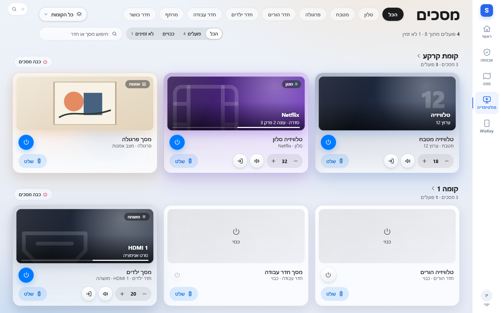
צילום מהדגמה.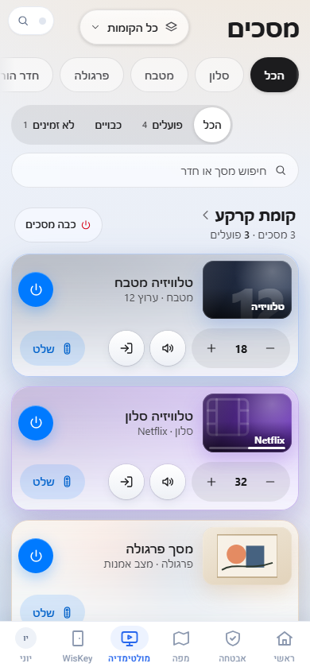
צילום מהדגמה.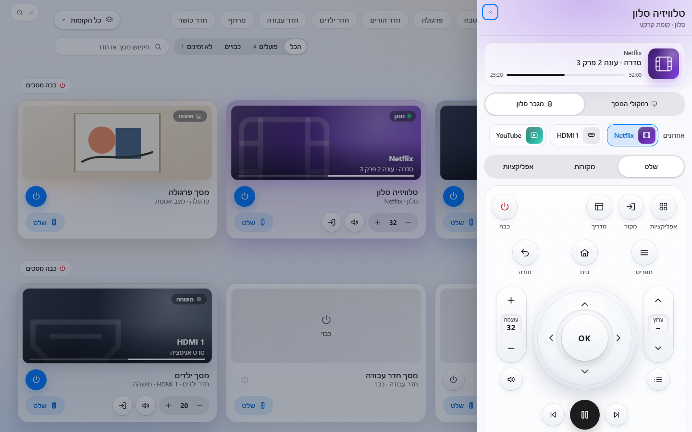
צילום מהדגמה.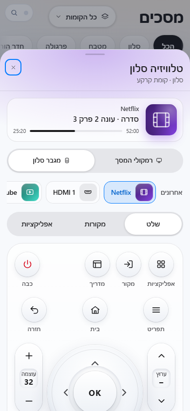
צילום מהדגמה.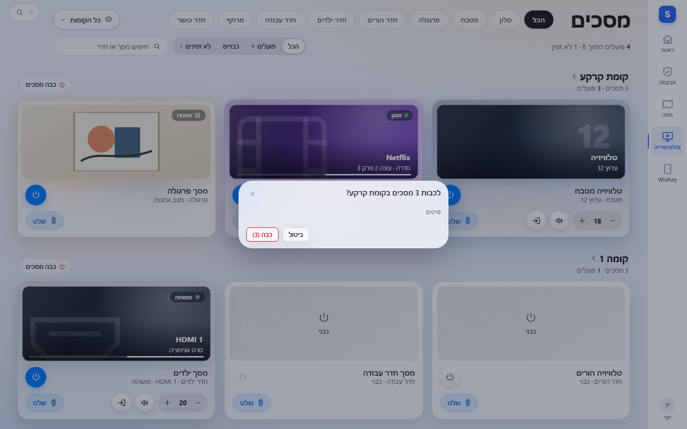
צילום מהדגמה.צילום מהדגמה.
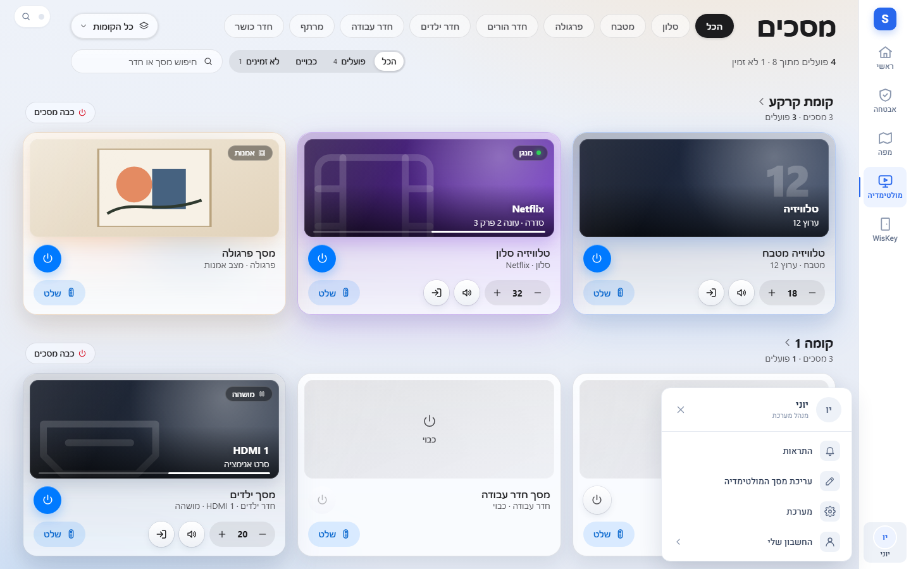
צילום מהדגמה.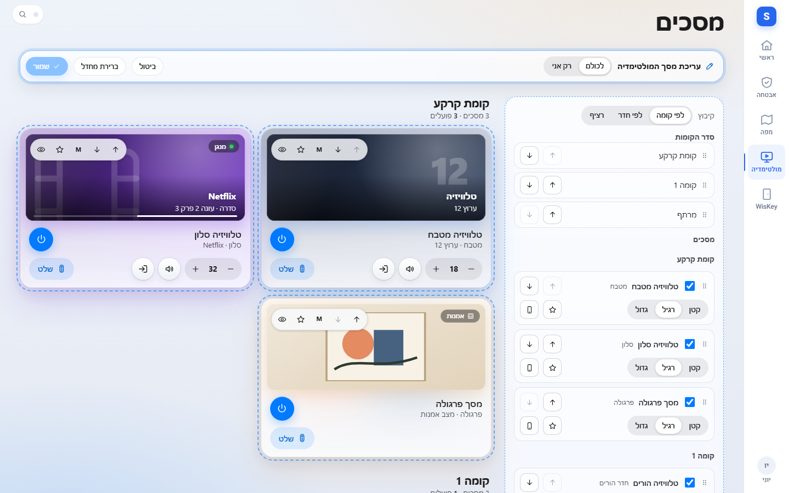
צילום מהדגמה.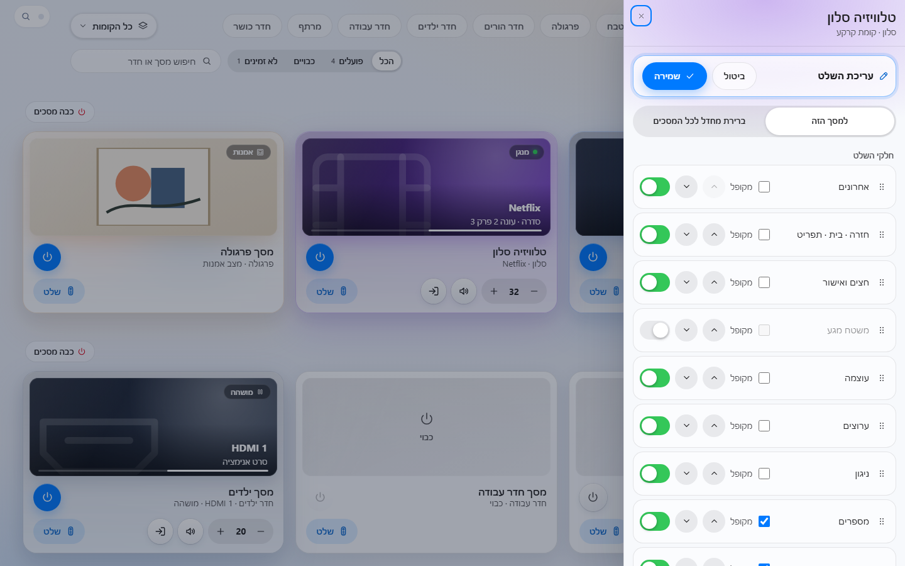
צילום מהדגמה.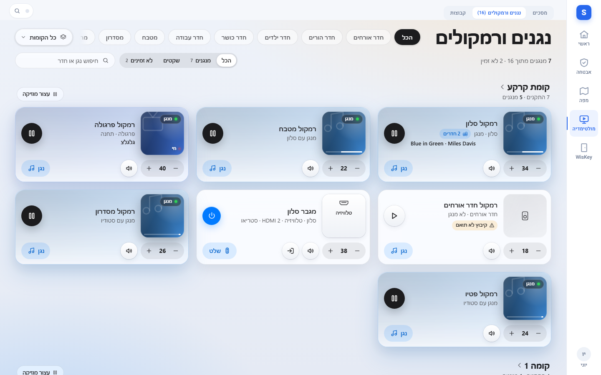
צילום מהדגמה.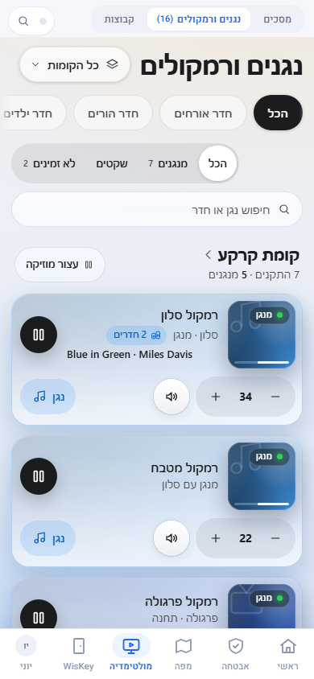
צילום מהדגמה.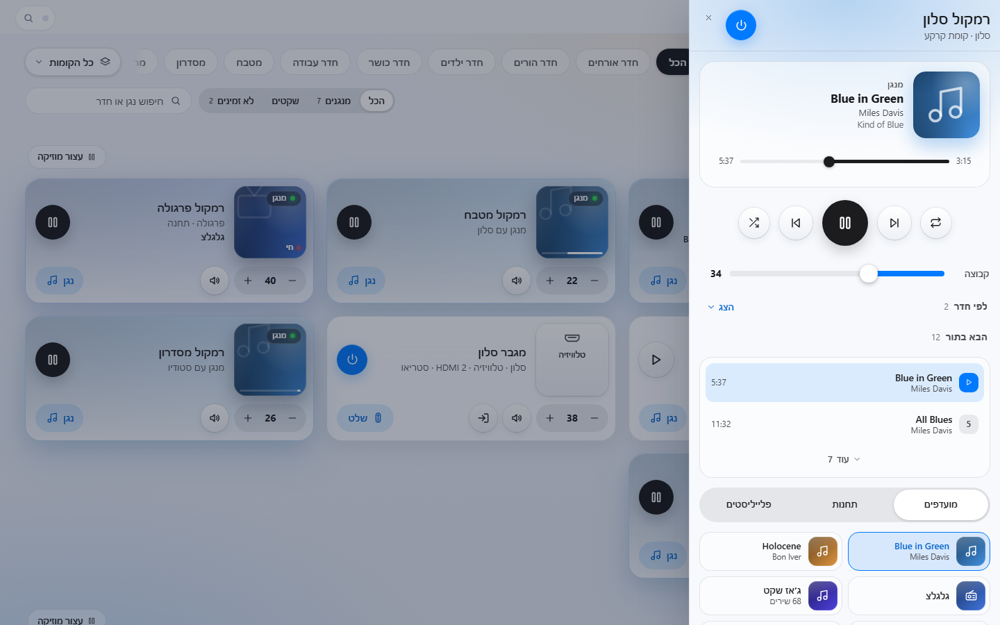
צילום מהדגמה.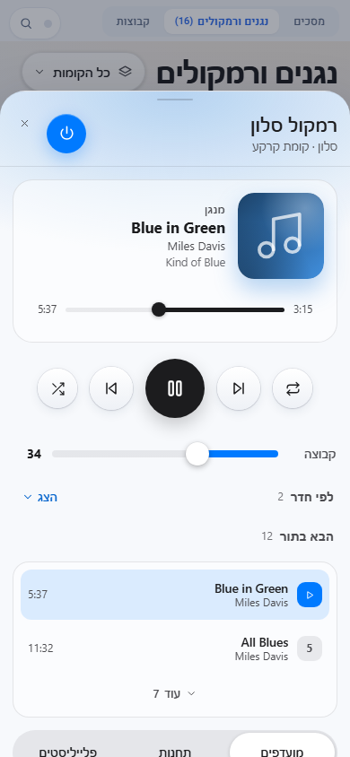
צילום מהדגמה.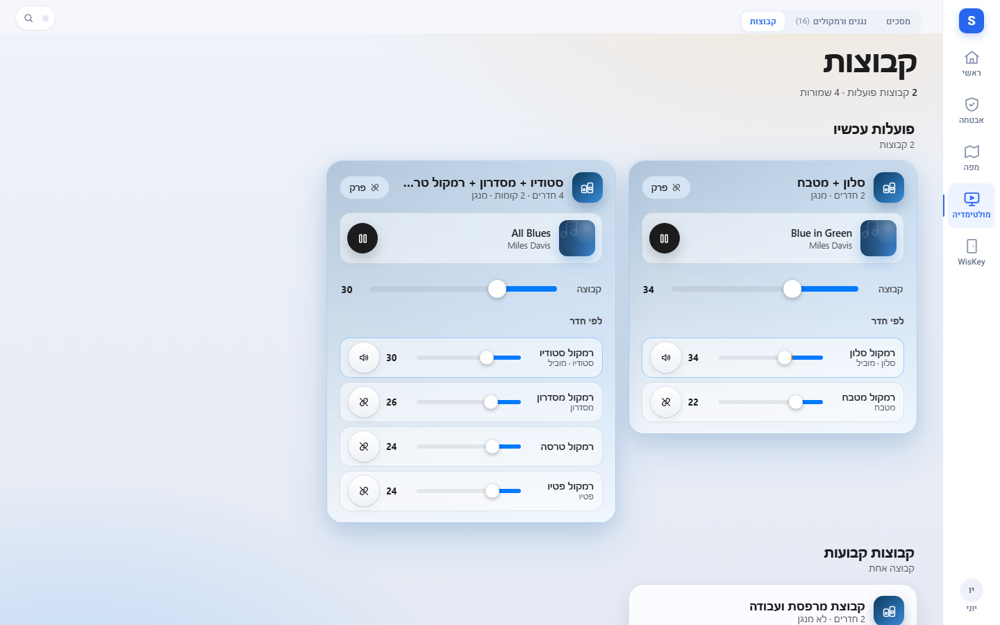
צילום מהדגמה.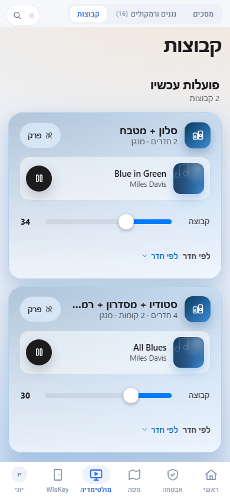
צילום מהדגמה.אוטומציות, סצנות וסקריפטים
מה זה
"אוטומציות" הוא סגמנט בלשונית "קברניט" של מסכי הבית (חשמל והתקנים), לצד "מבט על"; בלשונית הזו הסגמנטים הם תזמונים, אוטומציות, סצנות וסקריפטים (בכניסה היא נפתחת על "תזמונים" כשהם זמינים). היא מרכזת שלושה סוגים של פעולות שהבית עושה בשבילכם:
- אוטומציה - "כאשר משהו קורה, ואם תנאי מתקיים, אז עושים": תאורה שנדלקת בתנועה, התראה על דלת שנשארה פתוחה, כיבוי הכול ביציאה מהבית. היא רצה מעצמה, גם כש-Arx סגור.
- סצנה - מצב מוכן של כמה התקנים יחד ("ערב בסלון"). מפעילים אותה בלחיצה.
- סקריפט - רצף פעולות שמריצים בכפתור ("בוקר טוב", "מצב חופשה"), לפעמים עם שדות לבחירה לפני ההרצה.
מי שמחפש הפעלה בשעות קבועות בלבד ישתמש ב"תזמונים" (41-schedules_HE.md): זה כלי פשוט יותר, והבונה של האוטומציות מציע לעבור אליו כשהאוטומציה היא רק "שעון + שליטה במכשירים".
מי רואה את הלשונית. מי שיש לו לפחות אחד מאלה: הרשאה לנהל אוטומציות, הרשאה להריץ סקריפטים, או הרשאה לשלוט בהתקנים (שמאפשרת להפעיל סצנות). אין גישת צפייה בלבד: מי שאינו מורשה לנהל אוטומציות אינו רואה אותן כלל - לא ברשימה, לא בהתראות ולא בקישור ישיר (קישור כזה מציג "אין הרשאה"). מנהל המערכת יכול גם להסתיר את הלשונית לכולם ב-הגדרות › אוטומציות, או לסדר אותה ב-הגדרות › לשוניות.
מי רשאי מה
| פעולה | מה נדרש |
|---|---|
| לראות אוטומציות, להפעיל ולהשבית, להריץ עכשיו, ליצור, לערוך, לשכפל ולמחוק | automation.manage (ברירת מחדל: מנהל אתר ומנהל מערכת) |
| להפעיל סצנה | שליטה בהתקנים (devices.control או ha.entity.control), בכל ההתקנים שבסצנה |
| ליצור, לצלם ולערוך סצנה | scene.manage |
| להריץ סקריפט (ולעצור אותו) | script.run או script.manage |
| ליצור ולערוך סקריפט | script.manage |
| לעבור בעורך לתצוגת "קוד" | automation.code_view (ברירת מחדל: מנהל אתר ומנהל מערכת; מנהל המערכת קובע מי עוד) |
- ההיקף: פריט מוצג ומופעל רק אם כל ההתקנים שהוא משנה נמצאים בקומות ובאזורים שלכם. פריט עם התקן שאינכם רואים אינו מופיע.
- צעד רגיש (אזעקה, מנעול, דלת, שער, צופר): מותר באוטומציה, בסצנה ובסקריפט כמו בכל פעולה, אבל כל מי ששומר, מריץ או מפעיל חייב להחזיק את אותה הרשאה שהוא צריך לשליטה ידנית בהתקן הזה. מי שאינו רשאי לפתוח את הדלת ממסך ההתקן אינו רשאי ליצור אוטומציה שפותחת אותה. קוד אזעקה או מנעול לעולם אינו נשמר באוטומציה; פעולה שדורשת קוד אינה יכולה להיות חלק ממנה.
- מי שאינו מנהל בתשתית המערכת יכול לשמור שינויים בעורך רק אם מנהל המערכת הפעיל "האצלה" (ראו
80-settings_HE.md). אחרת העורך שלו נפתח לקריאה בלבד עם הכיתוב "שמירה דורשת מנהל", וההפעלה, ההשבתה וההרצה ממשיכות לעבוד לפי ההרשאות. - ההרשאות המלאות והגדרות הלשונית:
80-settings_HE.md(הגדרות › אוטומציות) ו-81-roles_HE.md.
איך אני… (רואה ומפעיל)
- פותח את הלשונית. חשמל והתקנים ← "אוטומציות". מעל הרשימה מתג בין אוטומציות · סצנות · סקריפטים (עם מספר הפריטים בכל סוג).
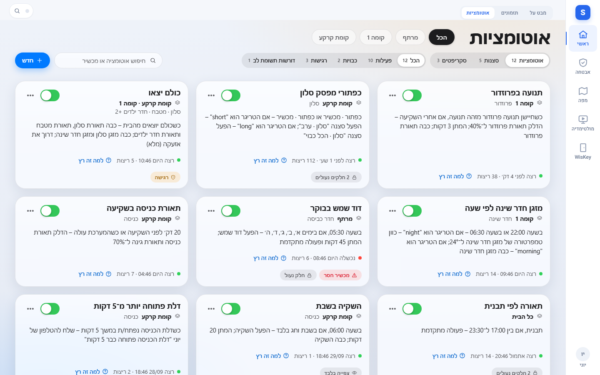
צילום מהדגמה. השמות והנתונים לדוגמה.
- מבין כרטיס. בכל כרטיס: השם; הקומה והאזור שהוא משנה; משפט בעברית שמתאר מה קורה ("כשחיישן תנועה מזהה תנועה, אם אחרי השקיעה, הדלק..."); מתג הפעלה והשבתה; ו"רצה לפני 4 דק׳ · 38 ריצות" (או "נכשלה היום" באדום). צ'יפים מסמנים מצב: רגישה (יש בה פעולה רגישה), חלק נעול (חלק שהבונה אינו מכיר ונשמר כמו שהוא), מכשיר חסר (התקן שהוסר), שגיאה בהגדרה, שונתה מחוץ למערכת ולצפייה בלבד. תפריט "..." בכרטיס מציג את הפעולות שמותר לכם.
- מחפש ומסנן. חיפוש לפי שם או התקן; מסננים הכל · פעילות · כבויות · רגישות · דורשות תשומת לב; וצ'יפים לפי קומה ואזור. בטלפון המסננים מקופלים ב"סינון" אחד (או מוצגים כשורות, לפי מה שמנהל המערכת בחר). "נקה סינון" מאפס.
- פותח מגירה. לחיצה על כרטיס פותחת מגירת פרטים: המשפט, כאשר · אם · אז כרשימת צעדים, מכשירים מושפעים, ריצות אחרונות וכפתורים: "למה זה רץ", "בדיקה", "הרץ עכשיו", "עריכה", "שכפול", "גרסאות", "מחיקה".
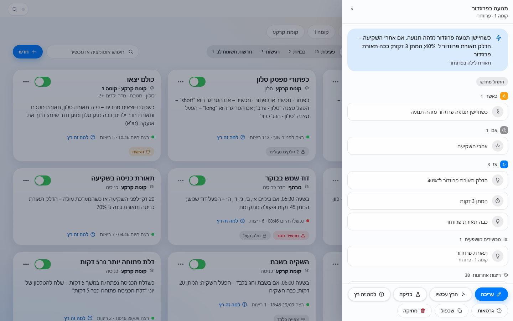
צילום מהדגמה.
- מפעיל או משבית. המתג בכרטיס (או "הפעל" / "כיבוי" בתפריט). השבתה לא מוחקת דבר.
- מריץ עכשיו. "הרץ עכשיו" מריץ את הפעולות מיד, בלי לבדוק את התנאים. "בדוק תנאים ואז הרץ" מריץ רק אם התנאים מתקיימים. תופיע שאלה "להריץ עכשיו?" - ופעולה על התקן רגיש מבקשת את אותו אישור כמו בשליטה ידנית. מרווח מינימלי בין הרצות של אותו פריט (ברירת מחדל 10 שניות) מונע לחיצות כפולות.
- בודק בלי להריץ. "בדיקה" מראה מה היה קורה: מצב כל תנאי עכשיו, וההבדל שיעשה בכל התקן ("תאורת פרוזדור: כבוי ← דלוק 40%"), בלי לשנות דבר. תנאי שאי אפשר לבדוק מסומן "לא ניתן לבדוק".
- שואל "למה זה רץ". לכל ריצה: משפט קצר בעברית ("רצה ב-18:42 כי חיישן התנועה עבר מ'אין תנועה' ל'תנועה'..."), ומתחתיו הריצה כולה: מה הפעיל אותה (טריגר), כל תנאי ואם עבר, כל פעולה ותוצאתה, משך ההרצה ושגיאה אם הייתה. בחירה בין ריצות אחרונות בצ'יפים בראש. ערכים חסויים (סיסמאות, אסימונים) מוסתרים (
••••).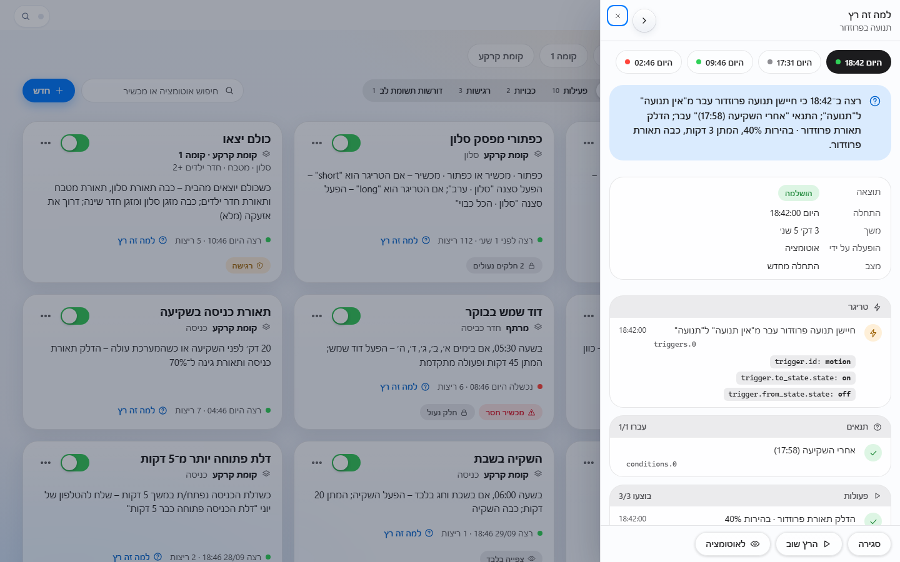
צילום מהדגמה.
- חוזר לגרסה קודמת. "גרסאות" מציג את הגרסאות השמורות (כולל שינויים שנעשו מחוץ למערכת), ומאפשר לשחזר אחת מהן. מספר הגרסאות שנשמרות נקבע בהגדרות.
- רואה "שונתה מחוץ למערכת". אם האוטומציה שונתה במקום אחר, מופיע כיתוב ו"הרץ שוב" / "טען מחדש": טענו את הגרסה העדכנית והחליטו מה לשמור.
סצנות
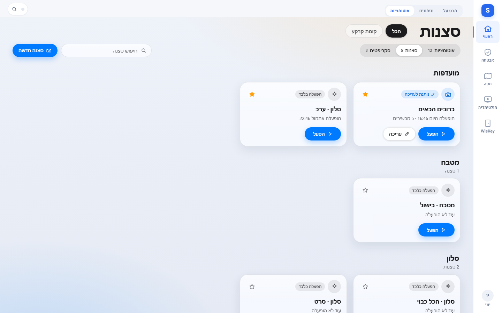
צילום מהדגמה.- סצנות מקובצות לפי אזור, עם מועדפות (כוכב) למעלה. "הפעל" מפעיל סצנה; על הכרטיס "הופעלה היום 16:46 · 5 מכשירים".
- סצנה שמסומנת "הפעלה בלבד" מגיעה ממערכת אחרת (למשל בקר מתגים): אפשר להפעיל, להוסיף למועדפות ולהסתיר, אך לא לערוך. סצנה עם "ניתנת לעריכה" נוצרה ב-Arx.
- הפעלה חוזרת של אותה סצנה מוגבלת בקצב (ברירת מחדל: אחת לשלוש שניות).
סקריפטים
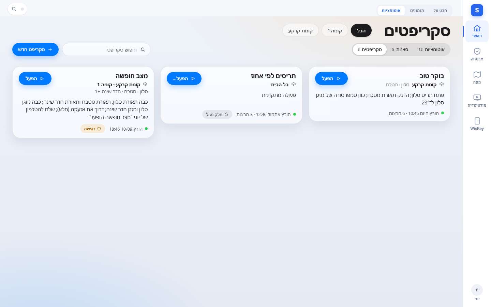
צילום מהדגמה.- כרטיס לכל סקריפט עם "הפעל". סקריפט שדורש בחירה לפני ההרצה מציג "הפעל…" שפותח טופס שדות: מספר, כן/לא, בחירה מרשימה, טקסט והתקן (רשימת ההתקנים מצומצמת לאלה שבהיקפכם).
- סקריפט שרץ מסומן "רץ עכשיו" ויש "עצור". סקריפט עם צעד רגיש מבקש אישור ("להפעיל עכשיו?").
- סקריפט שבו חלק נעול מסומן "חלק נעול" והאישור מזהיר שהוא "עלול לשנות מכשירים נוספים".
איך אני… (מי שיש לו הרשאת ניהול)
- יוצר אוטומציה. "חדש" פותח גלריית תבניות (כשמנהל המערכת השאיר אותה פעילה): תאורה לפי תנועה, דלת או חלון פתוחים זמן רב, יציאה מהבית (מסומנת "רגישה כברירת מחדל" כי היא יכולה לדרוך אזעקה), חזרה הביתה אחרי השקיעה, הצפה, מזגן לפי שעות ותאורה בשקיעה (השתיים האחרונות מסומנות "גם כתזמון"), או מאפס. תבנית היא טיוטה מלאה למחצה: בוחרים התקנים, בודקים וממשיכים. שום דבר לא נשמר בלי שבדקתם.
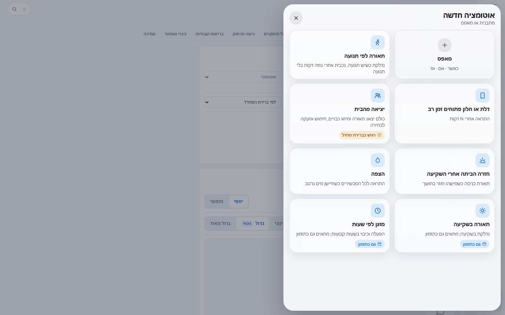
צילום מהדגמה.
- בונה בבונה. העורך נפתח כלוח צד (בטלפון - על כל המסך). למעלה: שם, מתג הפעלה, והמשפט החי שמתעדכן תוך כדי עריכה. בשלושה חלקים:
- כאשר - מה מפעיל: שינוי מצב של התקן, שעה, שקיעה או זריחה, אחרי כל כמה זמן, הפעלת המערכת, נוכחות ("כולם יצאו").
- אם - תנאים (לא חובה): מצב או ערך של חיישן, שעה, ימים בשבוע, שקיעה. "כל התנאים צריכים להתקיים" או "אחד מהם".
- אז - מה לעשות, לפי הסדר: שליטה בהתקן, הפעלת סצנה או סקריפט, התראה, המתנה, בחירה ("אם... אחרת..."), חזרה ועצירה.
כל צעד הוא כרטיס שאפשר לגרור, למחוק ולפתוח לטופס קטן. "+ הוסף" מוסיף. צעד רגיש מסומן "פעולה רגישה" (צ'יפ צהוב או אדום, לפי
ההגדרה). בתחתית "אפשרויות": מה לעשות כשהאוטומציה מופעלת שוב בזמן ריצה (התעלם, התחל מחדש, המתן בתור, הרץ במקביל).
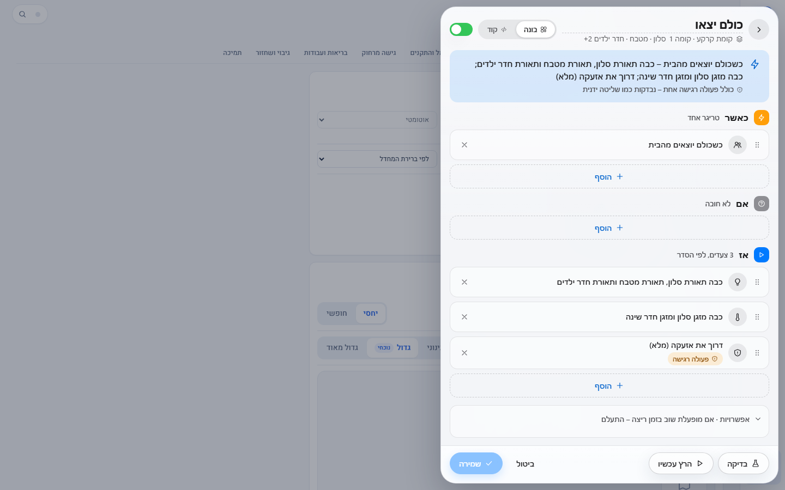
צילום מהדגמה.
- חלקים נעולים. כל מה שהבונה אינו מכיר (תבניות טקסט מתקדמות, פעולות של מכשירים מסוימים, שירותים מיוחדים) מוצג בכרטיס עם סימן נעילה ונשמר בדיוק כמו שהוא. אפשר להזיז ולמחוק אותו, אך לא לערוך את תוכנו בבונה.
- בודק ושומר. "בדיקה" (בלי להריץ), "הרץ עכשיו", "שמירה". "שמירה" פעילה אחרי שינוי ורק כשהכול תקין; רשימת "דברים לתקן" מובילה לכל בעיה. הבונה מזהה גם לולאה אפשרית (אוטומציה שמפעילה את עצמה) ומבקשת אישור לפני שמירה. כשהאוטומציה היא רק שעון ושליטה במכשירים מופיע "צור כתזמון": הוא פותח את חלון התזמונים עם הנתונים שכבר הזנתם, והאוטומציה אינה נוצרת.
- "קוד". מי שיש לו
automation.code_viewרואה למעלה מתג "בונה · קוד". תצוגת הקוד היא אותו פריט בטקסט; שינוי בה מתורגם חזרה לבלוקים (מה שהבונה לא מכיר נשאר נעול). קוד שאינו תקין מוצג עם השגיאה והשמירה נחסמת. - מישהו שינה במקביל. אם הפריט שונה בזמן שערכתם מופיע "הפריט שונה במקום אחר" עם השוואה, "טען את החדש" (השינויים שלכם לא יישמרו) ו"המשך עריכה". שום דבר לא נשמר עד שתבחרו.
- משכפל ומוחק. "שכפול" יוצר עותק ("שם (עותק)"). "מחיקה" מבקשת אישור ומעבירה את הפריט לסל המחזור (כברירת מחדל 30 יום): "סל מחזור" ברשימה מציג מה נמחק ומתי, ו"שחזר" מחזיר אותו. אחרי התקופה הוא נמחק סופית.
עריכת סצנה וסקריפט
- סצנה חדשה: "סצנה חדשה" ← בוחרים התקנים ← "צלם מצב נוכחי": המערכת קוראת את המצב של ההתקנים עכשיו (דלוק/כבוי, בהירות, גוון, מיקום תריס, טמפרטורה...) ומציגה טבלה של הערכים שנקלטו - אפשר לתקן כל ערך, להסיר התקן או "צלם שוב". נותנים שם ו"שמירה". מנעול נקלט כמצב בלבד, ודורש אצל מי שיצר את הרשאת המנעול; אזעקה אינה נקלטת בסצנה (כי שחזור המצב שלה דורש קוד).
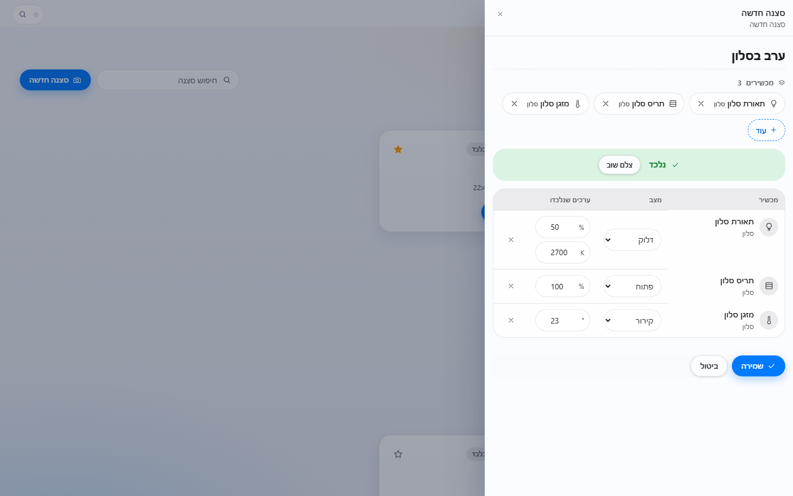
צילום מהדגמה.
- סקריפט חדש: שם, שדות (שם, סוג - מספר, כן/לא, בחירה, טקסט, התקן; חובה או לא; ברירת מחדל ומגבלות) ורצף צעדים באותו בונה של "אז". "הרץ עכשיו" לניסוי.
- סצנה ממערכת אחרת אינה ניתנת לעריכה, ובמקרה כזה הכפתור הוא "הפעלה בלבד".
כשמשהו משתבש - התראות
- כשל מגיע למרכז ההתראות. אוטומציה או סקריפט שהרצתם הסתיימה בשגיאה מעלים התראה "אוטומציה נכשלה" (עם שם הפריט והפירוט), פעם אחת לכל כשל. מי מקבל: מנהלים או כל מי שרואה את הפריט - לפי בחירת מנהל המערכת בהגדרות › התראות (ראו
85-notifications_HE.md), ותמיד רק מי שרשאי לראות את האוטומציה עצמה. - התראה שאוטומציה שלחה. אוטומציה שיש בה צעד "התראה" מעלה התראה למרכז, רק ליעדים שמנהל המערכת אישר.
- סערת הרצות. פריט שרץ בתדירות חריגה (ברירת מחדל מעל 20 בדקה, או 200 בדקה בכל הפריטים) מעלה התראה למנהל עם כיבוי בלחיצה אחת. כיבוי אוטומטי קיים אך כבוי כברירת מחדל.
מצבים שאפשר להיתקל בהם
| מה רואים | מה זה אומר |
|---|---|
| "אין עדיין אוטומציות / סצנות / סקריפטים" | עוד לא נוצר פריט מהסוג הזה; מי שיש לו הרשאה רואה "חדש" |
| "לא נמצאו ..." | החיפוש או הסינון לא מצאו; "נקה סינון" |
| "האוטומציות כבויות" | מנהל המערכת כיבה את התכונה ב-הגדרות › אוטומציות |
| "האוטומציות עדיין לא הוגדרו" | המערכת עדיין לא מוכנה לכתיבה; פנו למתקין |
| "המידע אינו עדכני. הרענון האחרון נכשל." / "תשתית המערכת אינה זמינה כרגע. מוצג המידע האחרון שנטען." | החיבור לתשתית נפל. מוצג מה שנטען לאחרונה; פעולות כתיבה לא יישלחו |
| "אין הרשאה" | אין לכם הרשאה לראות את הסוג הזה |
| "לצפייה בלבד. עריכה: בתשתית המערכת." | הפריט מוגדר בקובץ תצורה ולא ב-Arx; אפשר לראות אך לא לערוך |
| "שמירה דורשת מנהל" | העורך פתוח לקריאה בלבד כי ההאצלה כבויה |
| "מכשיר חסר" | התקן שהפריט משתמש בו הוסר; הפריט נשאר וניתן לעריכה |
| "לא פעילה - שגיאה בהגדרה" | האוטומציה אינה תקינה ולכן אינה רצה; פותחים לעריכה ומתקנים |
| "נשמר, אך עדיין לא נטען" | הפריט נכתב, אך התשתית טרם הטעינה אותו |
שים לב
- כל יצירה, עריכה, מחיקה, הפעלה והרצה נרשמות ביומן הביקורת עם שם המשתמש. קודים וערכים חסויים לעולם אינם נשמרים, מוצגים או נרשמים.
- הכלל של פעולה רגישה זהה לשליטה ידנית: אין מסלול עוקף. אוטומציה שפותחת דלת או מנטרלת אזעקה רצה גם כשאיש אינו בבית - ולכן ההרשאה נבדקת אצל מי שיוצר אותה.
- כתיבה אינה נשלחת שוב אוטומטית כשנכשלה: מוצגת השגיאה וצריך לבצע שוב ביודעין.
תשתיות › גנרטור
מה זה
מסך צפייה בגנרטור הגיבוי של האתר: מצב חי, זרימת הספק בין הרשת, הגנרטור ומתג ההעברה לצרכנים, פרטי המנוע והבקר, מתח / זרם / הספק לכל פאזה, גרפים, התראות והיסטוריה. המסך לקריאה והתראות בלבד - אי אפשר להתניע, לעצור או לשנות מצב בקר מכאן, והספים שמגדירים אינם משנים דבר בבקר עצמו.
הלשונית "גנרטור" מופיעה תחת תשתיות רק כשהמערכת מזהה בקר גנרטור (התקן אחד עם כל החיישנים שלו) ולמשתמש יש הרשאת צפייה.
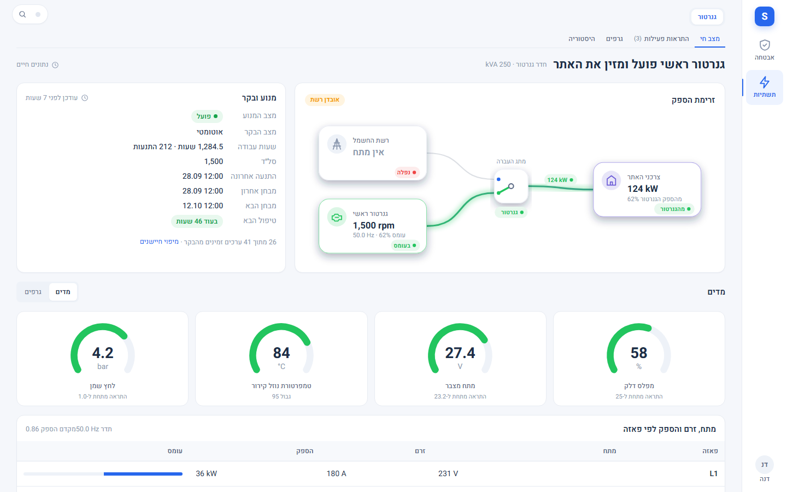
צילום מהדגמה: נתוני דמה של גנרטור בעומס בזמן נפילת רשת.
איך אני… (מפעיל ומעלה)
- רואה מה קורה עכשיו. תשתיות › גנרטור › מצב חי. הכותרת אומרת במשפט אחד: פועל ומזין את האתר / בריצת מבחן / במנוחה. שבב כתום "אובדן רשת" מופיע כשהרשת נפלה.
- מבין את הזרימה. התרשים מראה רשת החשמל, הגנרטור, מתג ההעברה והצרכנים, וכמה קילוואט עוברים מהגנרטור.
- בודק מנוע ובקר. מצב המנוע, מצב הבקר (אוטומטי / ידני / כבוי / מבחן), שעות עבודה, התנעות, התנעה ומבחן אחרונים, טיפול הבא. אם הבקר אינו במצב אוטומטי, מופיעה תווית "לא אוטומטי".
- מחליף בין מדים לגרפים. מפלס דלק, מתח מצבר, טמפרטורת נוזל קירור ולחץ שמן, עם גבולות ההתראה; ובטבלה מתח, זרם והספק לכל פאזה.
- צופה בגרפים. לשונית גרפים: טווחים (שעה, 24 שעות, 7, 30 ימים או טווח מותאם) וייצוא CSV. דגימה מלאה נשמרת 3 ימים, אחר כך ממוצע ל-5 דקות.
- מאשר התראות. לשונית התראות פעילות: "אישור" להתראה אחת או "אישור הכול", עם הערה לא חובה. היסטוריה: חיפוש וסינון לפי חומרה, סוג ומצב.
- כשהקשר לבקר נקטע, המסך אומר "אין תקשורת עם בקר הגנרטור" ומציג את הערכים האחרונים שנקלטו עם זמן - לא ערכים שנראים חיים.
איך אני… (מנהל אתר / מנהל מערכת)
הגדרות › תשתיות › גנרטור:
- זיהוי. המסך מראה אם נמצא גנרטור ואילו חיישנים חסרים; "בדיקה חוזרת" או בחירת התקן ידנית.
- מיפוי חיישנים. כל חיישן של הבקר משויך לתפקיד; מתקנים שיוך שזוהה לא נכון.
- ספי התראה. לחץ שמן מינימלי, טמפרטורה מקסימלית, דלק נמוך וכדומה.
- שמירת נתונים. ימי היסטוריית התראות וגרפים, וזמן עד סימון "אין תקשורת".
- ניתוב התראות. מתחיל ריק: עד שבוחרים נמענים לכל סוג התראה, ההתראות נשמרות במרכז ההתראות בלבד. לכל התראה בוחרים חומרה, נמענים (לפי תפקיד או משתמש), ערוצים, דקות עד הסלמה ונוסח הודעה בעברית עם תצוגה מקדימה.
- הרשאות. צפייה והתראות (
generator.view: מפעיל ומעלה) וניהול והגדרות (generator.manage: מנהלי אתר ומערכת).
מגבלות
- נבדק מול נתוני דמה ובקר מדומה בלבד; לא נבדק מול בקר גנרטור אמיתי. אחרי החיבור הראשון כדאי לבדוק את מיפוי החיישנים.
- אין שליטה בגנרטור, ואין התנעה או עצירה מהמסך.
- מסירת ההתראות בפועל נעשית דרך מרכז ההתראות ולפי הערוצים שהוגדרו שם.
שים לב
- אישור התראה נרשם ביומן הביקורת עם שם המשתמש.
- ערך שהבקר לא דיווח מוצג כחסר, ולא כאפס.
מסכי קיר — טאבלט קבוע
מה זה
מסך קיר הוא טאבלט שמחובר לקיר (קבלה, מסדרון, חדר בקרה) ומציג בלי מגע יד את המצלמות והמפה של המקום שלו. הוא כניסה רגילה של משתמש קיר מיוחד: כשמשתמש כזה נכנס מטאבלט, המערכת עוברת מעצמה לממשק קיר גדול וקריא מרחוק. מהמסך הזה אי אפשר לשנות דבר במערכת (אין הדלקה, נעילה, אזעקה או PTZ).
כבוי כברירת מחדל: עד שמנהל יוצר פרופיל קיר למשתמש, שום דבר לא משתנה. בטלפון או במחשב אותו משתמש רואה את המערכת הרגילה, מוגבלת לצפייה במפה ובווידאו חי.
איך אני… (מנהל מערכת — הקמה)
- הגדרות › משתמשים והרשאות: ליצור משתמש לקיר (בתשתית המערכת), עם תפקיד kiosk והרשאת
wall.view, בהיקף קומה או מצלמות. - הגדרות › מסכי קיר › "הוספת משתמש מסך": בוחרים את המשתמש ומגדירים כותרת ומקום.
- מצלמות ופריסה: אילו מצלמות, באיזה סדר, פריסה (אוטומטית או קבועה) ודפדוף.
- שעות והגנה על המסך: שעות פעילות ועמעום, והגנה מצריבה (תזוזה קטנה של התמונה, "הקדמה / דחייה").
- התראות במסך: אילו קטגוריות מוצגות (בטיחות, תקלות התקנים…). התראה מופיעה כאריח, ובדחיפות גבוהה משתלטת על המסך וחוזרת לפריסה הרגילה לבד. שורת מצב מציגה עד 8 ישויות.
- מסגרת תמונות: כשאין פעילות המסך מציג תמונות מתיקייה שנבחרה (לעולם לא פריימים ממצלמות), וחוזר למצלמות ברגע שיש התראה.
- בטאבלט: נכנסים פעם אחת עם שם המשתמש והסיסמה. הכניסה נשמרת גם אחרי הפעלה מחדש.
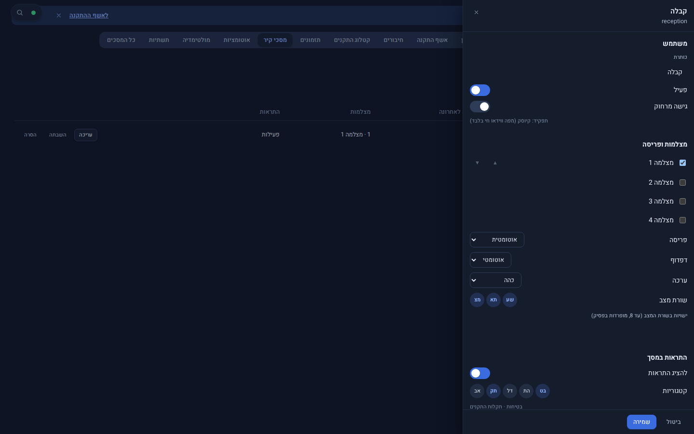
צילום מהדגמה: מגירת העריכה של מסך קיר, בערכת נושא כהה.
איך אני… (מי שעומד מול המסך)
- אין מה ללחוץ. המסך מתעדכן לבד; אם הקשר לשרת נופל הוא אומר זאת ולא מציג תמונה ישנה כאילו היא חיה.
- מצלמה שאין ממנה תמונה מסומנת "אין תמונה" ולא נשארת קפואה.
מגבלות
- כניסה מרחוק (מחוץ לרשת) של משתמש קיר נדחית.
- נבדק מול דמויות וראיות מסך בלבד; לא נבדק על טאבלט פיזי או מערכת חיה.
- אין שליטה בבהירות המסך או בחומרה: זה נעשה באפליקציית קיוסק של הטאבלט.
- מסך טלוויזיה מציג מצלמה דרך שידור למסך (ראו
42-multimedia_HE.md), לא דרך מצב קיר.
אזור WisKey (בקרת כניסה)
מה זה
אזור WisKey מציג את מערכת בקרת הכניסה של הבניין (עמדות דלת, אינטרקום, כרטיסים ו-PIN). מאז החלטת הבעלים ב-28.09.2026, ברירת המחדל היא הטמעה (embed): שלוש מהלשוניות (מרכז הכניסה, פעילות, אנשים) יכולות להציג את פאנל ה-WisKey האמיתי שלכם מתוך תשתית המערכת, בדיוק כפי שהוא נראה שם — או, לחלופין, את מסך ה-SMPLWISE המקביל שנבנה במוצר. שאר לשוניות WisKey (עמדות, סנכרון, בריאות, יומן שינויים, ניהול) תמיד מוטמעות, כי SMPLWISE מעולם לא בנה מסכים משלו בשבילן. הבחירה נעשית בהגדרות ← בקרות כניסה, לכל לשונית בנפרד.
איך אני… (צופה — access.read)
- פותח את מרכז הכניסה, הפעילות או ספריית האנשים. אם ההגדרה למסך הזה היא "SMPLWISE" — רואים מסך שנבנה כאן (רשימת עמדות, תמונת עמדה מ-go2rtc, יומן פעילות עם סינון סטציה/אדם/תוצאה/דלת/טווח תאריכים, ספריית אנשים עם חיפוש). אם ההגדרה היא "WisKey" — נפתח הפאנל האמיתי בתוך מסגרת (frame), עם ההתחברות וההרשאות של חשבון המערכת שלכם.
- מבין למה משהו נראה אחרת בפאנל המוטמע. בפאנל המוטמע, תשתית המערכת מסתירה את סרגל הצד שלה סביב הפאנל כשגרסתה מאפשרת זאת (אחרת הוא נשאר גלוי עם הערה). המסגרת המוטמעת טוענת עותק שני של ממשק התשתית — היא איטית יותר ממסך SMPLWISE המקביל, במיוחד בטלפון.
- רואה את הפאנל בגודל שנבחר (0.1.146). הפאנל המוטמע הוא המסגרת ותו לא: אין פס מעליו, אין כפתורי רענון / הגדלה / חלון חדש, ואין מסגרת של Arx. גודל התצוגה נקבע לכל ההתקנה בהגדרות (גודל תצוגת WisKey): רגיל - ממלא את אזור התוכן; מותאם - הפאנל מוצג גדול יותר ומוקטן (100 / 90 / 80 / 70%), כך שנכנסים בו יותר כרטיסים; מסך מלא - מכסה את כל החלון, ויוצאים ממנו בכפתור הקטן בפינה או ב-Esc. קיר של 10 מצלמות דורש שינוי בפאנל של WisKey עצמו, לא כאן.
איך אני… (מפעיל ומעלה — access.release, רגישה)
- משחרר דלת / עונה או דוחה שיחה / משמיע הכרזה — רק במסך "מרכז הכניסה" של SMPLWISE (בפאנל המוטמע, אלה פעולות WisKey עצמו, ראו למטה). הכפתורים "שחרור דלת", "מענה"/"דחייה"/"סיום שיחה", "הכרזה בעמדה" זמינים כאן. תוצאת הקריאה מדווחת כ"בוצע" (העמדה אישרה קבלה), "לא ידוע" (לא התקבל אישור), או שגיאה ספציפית (מנוע ההקראה נכשל, ההשמעה בעמדה נכשלה, ערוץ שמע תפוס).
איך אני… (מנהל אתר / מנהל מערכת — access.people.manage, רגישה)
- עורך אנשים. בעורך האדם: יוצרים/עורכים/מוחקים אדם, PIN, כרטיסים, חלון תוקף והקצאות עמדה. "יצירת PIN ייחודי אוטומטית" מציגה את ה-PIN פעם אחת בגלוי עם "העתק"; הוא מוסתר שוב מיד לאחר העתקה/הסתרה/שמירה/סגירה. יש לנקות את לוח ההעתקה (clipboard) אחרי מסירת PIN לאדם.
- **קולט כרטיס מהאינטרקום (
access.cards.capture, נדרשת גםaccess.people.manage).** בסעיף הכרטיסים: "קריאת כרטיס מהאינטרקום" מעביר את קורא עמדת הדלת הנבחרת למצב איסוף (פעולה פיזית בדלת שמתחילה רק אחרי אישור). כרטיס מוצג במסכה (•••• 1234— המספר המלא לעולם לא יוצא מ-WisKey), ורק "הוספת הכרטיס וסנכרון" מוסיף אותו לאדם ומבקש מ-WisKey לסנכרן לעמדות. מגבלות WisKey חלות: קליטה אחת לעמדה ושלוש בסך הכול, המתנה עד 30 שניות לכרטיס, סשן של 120 שניות. קליטה שייכת למי שהתחיל אותה בלבד. - בוחר, לכל לשונית (מרכז הכניסה / פעילות / אנשים), "WisKey (מוטמע)" או מסך SMPLWISE — בהגדרות ← בקרות כניסה (
40-devices_HE.mdוגם80-settings_HE.md). - מציג/מסתיר את כל אזור WisKey. מתג נפרד "הצג את WisKey במערכת" מסתיר את כל האזור לכולם ללא תלות בתפקיד (כמו הסתרת המפה); כתובת ישירה למסך WisKey כשהוא מוסתר מראה פאנל "מוסתר".
מה קורה בפאנל המוטמע (rc.19, contract v1)
- הפאנל נפתח דרך
?embed=1&tab=…&tool=…; WisKey מסתיר את הסרגל/כלים שלו ואת סרגל הצד של התשתית. הלשוניות והכלים ב-SMPLWISE (בשני העיצובים, כולל סרגל הטלפון) מגיעים **מקטלוגwiskey:readyשל הפאנל עצמו** — רק מה שהמשתמש הזה מורשה לראות. לחיצה על לשונית שולחתwiskey:navigate, וה"מעבר" קורה רק כש-wiskey:locationמאשר (דיאלוג "שינוי לא נשמר" שנדחה משאיר את המסך הישן; סשן נעול לא עונה והבקשה פגה אחרי 3 שניות). כתובת הדפדפן משקפת את המסך המאושר (wiskey_tab/wiskey_tool), כך שסימניות וקדימה/אחורה עובדים. - בתוך הפאנל המוטמע, המשתמש הוא בעל חשבון המערכת שלו — לא זהות SMPLWISE. משתמש שהחשבון שלו מחזיק
manageשל WisKey (או שהוא מנהל בתשתית המערכת) יכול לשחרר דלתות ולערוך אנשים בלי שלב האישור של SMPLWISE ובלי רישום ביומן הביקורת של SMPLWISE — רק יומן WisKey עצמו רושם זאת. - גרסאות ישנות יותר של WisKey (לפני rc.19) עדיין עובדות עם שיטה קודמת (deep-link ב-DOM); סימן הטמעה בלי handshake מציג "מתחבר…"; חוזה חדש מדי מציג "גרסה לא נתמכת".
אפליקציית הטלפון (0.1.123)
- בתוך האפליקציה לטלפון, שום דבר לא מוטמע — האפליקציה מזהה את עצמה (User-Agent + גשר native) ולפני שנפתחת מסגרת כלשהי. שם, מרכז הכניסה/פעילות/אנשים מציגים תמיד את מסכי SMPLWISE (גם כשההגדרה היא "WisKey"); שאר לשוניות WisKey מציגות הערה קצרה עם כפתור "פתח ב-WisKey" שמעביר את האפליקציה עצמה (לא מסגרת) לפאנל WisKey, בדיוק כפי שהאפליקציה מנווטת.
- הסיבה: בתוך האפליקציה, ההתחברות עוברת דרך הגשר הפנימי שלה רק בחלון העליון — ממשק מקונן בתוך מסגרת לעולם לא מקבל את ההתחברות הזו ותמיד יבקש כניסה מחדש.
- אותו דבר קורה בדפדפן רגיל אם תשתית המערכת מבקשת כניסה בתוך המסגרת המוטמעת (למשל התחברות בלי "השאר אותי מחובר") — מוצג "נדרשת כניסה".
שים לב
access.release(רגישה) מכסה את הפעולות הפיזיות בלבד — שחרור דלת, מענה/דחייה/ניתוק, הכרזות.access.people.manage(רגישה) פותחת את עורך האנשים. שתיהן מוענקות כברירת מחדל רק ל-site_admin ו-system_admin; כדי לתת לאדם ספציפי רק את עריכת האנשים בלי כל תפקיד מנהל אתר — בונים תפקיד מותאם אישית (81-roles_HE.md).- כל שמירה בעורך האנשים דרך SMPLWISE מבוקרת תחת משתמש ה-SMPLWISE (שמות שדות וספירות בלבד — לעולם לא PIN, מספר כרטיס או טלפון).
- קליטת כרטיס לא אומתה עדיין מול עמדה פיזית אמיתית (רק מול קוד מקור ו-fixture) — השימוש האמיתי הראשון הוא הבדיקה החיה; יש לבצע אותה עם מישהו בדלת ולבדוק גם את הדלת וגם את הקורא.
 צילום מהמערכת החיה.
צילום מהמערכת החיה.
 צילום מהמערכת החיה.
צילום מהמערכת החיה.
 צילום מהמערכת החיה.
צילום מהמערכת החיה.
גיבוי ושחזור, ואחסון
מה זה
הגדרות ← גיבוי ושחזור שומרת גיבויי פרויקט (לא וידאו) בתוך ה-add-on; מערכת ← אחסון מציגה שני דברים נפרדים: מה שנקרא מה-NVR עצמו (דיסקים, תוכנית הקלטה, שמירה — קריאה בלבד, אין כאן format/ RAID/מחיקה) ואנליטיקת השימוש של ההתקנה עצמה. שני האזורים דורשים מנהל מערכת (system.configure).
איך אני… (גיבוי ושחזור)
- יוצר גיבוי ידני. "צור גיבוי" (עם הערה אופציונלית) כותב zip תחת
/data/backups: אתרים, מבנים, קומות, קובצי תוכנית וגרסאות, סיכות, מצלמות, חדרים ואזורים, הגדרות; משתמשים והרשאות נכללים אך משוחזרים רק לפי בחירה. גיבויים לעולם אינם מכילים אישורי NVR/HA (אלה נשארים באפשרויות ה-add-on) ולעולם לא וידאו, תמונות ממוזערות של אירועים או ראיות מיובאות. - סומך על הגיבוי האוטומטי. עותק אחד נכתב לפני כל שדרוג גרסה (חמשת האחרונים נשמרים) ואחד ביום (שבעת האחרונים). כל השורה הזו כלולה גם בגיבוי המלא של Home Assistant, כי ה-add-on מוגדר
backup: hotו-/data(כולל תיקיית הגיבויים) חי שם. - מוריד או מעלה קובץ גיבוי. "הורד" שומר zip למחשב; "העלאת גיבוי" טוענת zip שהורד מכאן — גם מהתקנה אחרת — לרשימה, ומשם אפשר "שחזר".
- משחזר. בוחרים אופן שחזור: החלפה (מחליפה את כל נתוני הפרויקט הנוכחיים במה שבגיבוי) או מיזוג (רק פריטים שחסרים היום מתווספים; הקיימים נשארים). מתג נפרד "כולל משתמשים והרשאות" — ברירת המחדל היא נתוני פרויקט בלבד; ההרשאות של המשתמש שמבצע את השחזור נשמרות בכל מקרה, כך שאתם לא ננעלים בחוץ. לאישור מקלידים RESTORE בדיוק. דוח השחזור שמופיע אחרי כן מפרט: מה בוצע (החלפה/מיזוג), כמה שורות בכל טבלה, כמה קובצי תוכנית שוחזרו, וכמה שורות "לא בטוחות" דולגו (למשל שורת עורות-קומה עם מזהה קומה שאינו קיים עוד — נספרות, לא נדרסות בשקט).
- גיבוי שאינו תואם גרסה. גיבוי שמגרסת סכימה חדשה יותר מההתקנה הנוכחית נדחה עם הודעה לעדכן את ה-add-on קודם. גיבוי ישן יותר משוחזר כרגיל לתוך הסכימה הנוכחית — שדות/טבלאות חדשות שהגיבוי לא הכיר פשוט לא נוגעות; אין צורך "להריץ migration" ידנית.
- חוזר אחורה אחרי שדרוג כושל (Rollback). מתקינים את הגרסה הקודמת דרך Home Assistant, ואז משחזרים את הגיבוי "לפני עדכון" עם החלפה.
- מוחק גיבוי ישן מהרשימה כשאין בו יותר צורך.
- מחליט אם קריאות מוני החשמל נכנסות לגיבוי. בכרטיס "גיבויים של הפרויקט" יש מתג "נתוני מוני החשמל". המונים, החשבונות וקובצי ה-PDF, הלוגו והסיכומים היומיים נכנסים לכל גיבוי בכל מקרה. כשהמתג פעיל נכנס גם קובץ הקריאות המלא (השורה מציגה את גודלו הנוכחי, ויכול להגיע למאות MB). ברירת המחדל: כבוי. השינוי נשמר מיד וחל על הגיבוי הבא. רואים את המתג עם הרשאת צפייה בחשמל, ומשנים אותו עם הרשאת ניהול גיבויים.
איך אני… (מה בטוח בשחזור)
- קורא את הערת אבטחת הסקינים. קבצי תמונות הבקרה/הרינדורים של Plan Studio 3D (
skins.*) **מוגבלים תמיד לתיקייתdata/skins** — גם שורת מסד נתונים מורעלת וגם ארכיון גיבוי מבויים לא יכולים "לברוח" מהתיקייה הזו; מזהי קומה מאומתים, ושחזור גיבוי מדלג על שורות קומה לא בטוחות ומדווח את המספר בדוח (סעיף 4). חילוץfiles/בתוך הארכיון דוחה.., נתיבים מוחלטים, backslash ואות כונן — לא רק לוכסן קדמי. - יודע מה לא חוזר בשחזור. קבצים שהם עותקים נגזרים ולא חלק מהפרויקט המקורי — ראיות מיובאות מתיקי חקירה (
/data/imported/...) ותצוגות מקדימות של אירועים (/data/thumbs) — אינם נכללים בגיבוי, גם לא בשחזור: תיק שיובא לפני הגיבוי חוזר עם הפריטים שלו מסומנים "חסר" בדיסק, וניסיון לייבא את אותה חבילה שוב עדיין נחסם עד שהתיק ההוא נמחק.
איך אני… (אחסון — מה-NVR)
- בודק שמירת הקלטה. מערכת ← אחסון קוראת מה-NVR בלבד: דיסקים ומקום פנוי, תוכנית הקלטה לכל מצלמה (רציף/תנועה, ימים, קצב סיביות ורזולוציה) ותקופת שמירה. "נמדד" הוא ההקלטה הישנה ביותר שנמצאה בפועל (חיפוש עד 120 יום אחורה); "אומדן" הוא חישוב קיבולת מהקצבים המוגדרים כאילו הכול מקליט ברציפות — מצלמות מבוססות-תנועה שומרות בפועל יותר. הדוח במטמון 10 דקות; "רענון מול ה-NVR" שואל שוב. שום דבר במסך הזה אינו כותב להתקן.
- צופה באנליטיקת אחסון (Beta, נתוני הדגמה כרגע). תחזית שימוש (נמדד עד קו מסוים, אומדן אחריו — לא תחזית פשוטה של "דיסק מתמלא"), פילוח לפי מצלמה לפני retention, ומדיניות ההקלטה. המסך מסומן Beta עם נתוני הדגמה משום שהוא עדיין לא מחובר לחלוטין ל-backend החי בכל הסביבות — לבדוק תמיד מול הכרטיסים ב-#10 לנתון אמיתי.
- בודק את אחסון ה-add-on עצמו (
/data): הגדרות ← בריאות ועבודות מציגה את השימוש שה-add-on צורך (מסד נתונים, קובצי תוכנית, גיבויים, תמונות ממוזערות עד 200MB, וראיות מיובאות בנפרד), לצד הגיבוי האחרון. מכסת ייצוא (exports.max_mb, ברירת מחדל 2048MB לכל משימה) ותקופת שמירת ייצוא (exports.retention_days) נקבעות בהגדרות ← וידאו ומדיה. הגדרת מוצר נוספת,storage.min_free_mb(ברירת מחדל 1024MB), שומרת רזרבת מקום פנוי חובה על/data— פעולה שהייתה משאירה פחות מזה (כמו ייבוא חבילת ראיות גדולה) נדחית מראש במקום להסתכן במסד נתונים שנתקע כשהדיסק מתמלא.
שים לב
- כל יצירה, מחיקה ושחזור של גיבוי נכתבים ביומן הביקורת; המנהל שמבצע שחזור שומר על הגישה שלו גם כשבוחרים "החלפה" עם היקף הרשאות.
- אין כאן "שחזור חלקי בעצמכם" — היחידה היא כל הפרויקט (או כל הפרויקט + הרשאות). לשחזור פריט בודד (למשל תוכנית קומה אחת) יש להשתמש בהיסטוריית הגרסאות של עורך התוכנית (
21-plan-studio_HE.md), לא בגיבוי. - הגיבוי המקומי אינו תחליף לגיבוי HA
backup: hot(למקרה של אובדן דיסק שלם) — שניהם פועלים יחד.
 צילום מהמערכת החיה.
צילום מהמערכת החיה.
 צילום מהמערכת החיה.
צילום מהמערכת החיה.
התקנה ראשונית — אשף ההתקנה
מה זה
שני חלקים:
- הגדרת החיבורים קורית בלשונית "Configuration" של ה-add-on ב-Home Assistant, שדה-שדה (למטה).
- אשף ההתקנה במוצר — הגדרות ← אשף התקנה (
#/system/wizard, למנהלי מערכת בלבד) — בודק שההתקנה באמת עובדת, בשישה שלבים: התקנה ← NVR ← Home Assistant ← go2rtc ← קומה ← מצלמה. לכל שלב הוא מציג מצב (הושלם / לביצוע / נכשל / ממתין לשלב קודם), את העובדות שנבדקו, ואם השלב לא הושלם — מה הבעיה, מה עושים וקישור למסך שמתקן אותה. האשף עצמו לא משנה דבר ב-NVR, ב-go2rtc או ב-Home Assistant: הוא רק קורא.
הגדרות ← חיבורים (#/system/setup) נשאר המסך עם העובדות המפורטות על כל חיבור, עריכת פרטי ה-NVR והכתיבות המאושרות ל-NVR; האשף מקשר אליו כשצריך.
איך אני… (מנהל מערכת) — לפני ההפעלה הראשונה
- מוסיף את המאגר ומתקין. הגדרות ← אפליקציות ← חנות האפליקציות ← ⋮ ← מאגרים ← מדביקים את כתובת המאגר ← הוספה, ואז מתקינים SmplWise Arx (ה-Supervisor בונה את התמונה מקומית, כמה דקות בהתקנה הראשונה).
- ממלאים את לשונית Configuration, שדה־שדה (
smplwise_vms/config.yaml): | שדה | חובה? | מה הוא עושה | |---|---|---| |bootstrap_admin_username| לא (אך בלעדיו אין למי להקצות תפקידים) | ה-username (לא שם תצוגה) של HA שהופך למנהל מערכת בביקור הראשון שלו; ניתן להשאיר ריק כדי לנסות רק את המפות | |nvr_host,nvr_http_port,nvr_rtsp_port,nvr_username,nvr_password| לא, אך בלעדיהם אין מצלמות | גישת ISAPI לקריאה בלבד (סנכרון מצלמות, תצוגות מקדימות); פורט ה-RTSP הוא זה ש-go2rtc מושך ממנו וידאו. מומלץ חשבון NVR ייעודי שאינו מנהל — ה-add-on לעולם אינו כותב הגדרות NVR מעבר לשתי הפעולות המפורשות שדורשות הרשאה נפרדת (ראו95-troubleshooting_HE.md) | |go2rtc_url(+go2rtc_api_username/passwordאופציונלי) | לא, אך בלעדיו אין וידאו חי | כתובת ה-API של add-on go2rtc (למשלhttp://<ha-host>:1984); רק זרמיsmplwise_*נוצרים, זרמים אחרים לעולם לא נוגעים | |wiskey_username,wiskey_password| לא | חשבון RTSP משותף לעמדות WisKey (תצוגה מקדימה); עמדה עם חשבון שונה מקבלת override נפרד בהגדרות ← חיבורים (מנהל מערכת בלבד) | |openai_api_key| לא | מפתח OpenAI לעורות קומה מרונדרות ב-AI — ראוdocs/operations/OPENAI_ACCOUNT_SETUP_HE.mdלהסבר המלא (מנוי ChatGPT אינו מספיק, צריך חשבון API נפרד עם אמצעי תשלום) | |log_level| לא |debug/info/warning/error;debugלפרטי בקשה, לעולם לא מדפיס סודות |
- מפעילים ופותחים את ה-add-on מסרגל הצד. אחרי מילוי פרטי ה-NVR, מצלמות מתגלות לבד תוך דקה (גילוי בהפעלה וכל 10 דקות); הגדרות ← וידאו ומדיה ← "סנכרון זרמים" (
system.configure) פותחת את זרמי go2rtc לראשונה. אם הרשימה ריקה — לבדוק את יומן ה-add-on ואת/api/v1/health(discovery.cameras_last_error).
איך אני… (מנהל מערכת) — גשר Home Assistant
- מתקין את SMPLWISE Bridge פעם אחת. בהגדרות ← גשר Home Assistant, "התקנת הגשר (פעם אחת)" מעתיק את
custom_components/smplwise_bridgeל-config של HA ומכריז עליו ל-Supervisor. יש להפעיל מחדש את Home Assistant פעם אחת כדי שהרכיב ייטען, ואז לאשר "SMPLWISE Bridge" תחת Settings ← Devices & services (קוד הזיווג כבר ממולא). בלי מיפויhomeassistant_config, המסלול הידני נשאר: להעתיק את התיקייה בעצמכם או להוסיף כמאגר HACS. חשוב: בכל פעם שהגשר עצמו מתעדכן לגרסה חדשה (למשל כשגרסת ה-add-on מוסיפה שירותי HA נתמכים) יש להפעיל מחדש את Home Assistant שוב — עד אז השירותים החדשים נעניםservice_not_allowed/"השירות אינו מורשה", וזה לא באג. לשונית ההגדרות מציגה את מצב הגשר (ממתין ל-Restart / פעיל / עדכון ממתין) בכל עת.
איך אני… (מנהל מערכת) — עובר על אשף ההתקנה
- פותח את הגדרות ← אשף התקנה. בראש המסך שורת שלבים (ירוק = הושלם, אדום = נכשל, כתום = לביצוע) וסיכום "n מתוך 6 שלבים הושלמו · השלב הבא". בפתיחה האשף בודק מול המכשירים כל שלב שידוע רק מעבודות הרקע של ה-add-on (השורה מתחת לכותרת השלב אומרת "נבדק מול המכשיר", "לפי עבודות הרקע" או "לפי בסיס הנתונים").
- מטפל בשלב הראשון שלא הושלם. בכרטיס השלב: הבעיה במשפט אחד, "מה עושים:" עם הפעולה עצמה, וקישור למסך המתקן. אחרי התיקון — "בדוק שוב" באותו שלב (אפשר פעם ב-5 שניות לכל שלב; אם מוקדם מדי, המסך אומר כמה לחכות). "בדוק הכול" בודק את כל השלבים. | שלב | מה נבדק | כשזה נכשל — הדוגמה הנפוצה | |---|---|---| | 1. התקנת ה-Add-on | בסיס הנתונים,
/data(כתיבה ושטח פנוי), מנהלי מערכת, אזור הזמן | דיסק מלא ← לפנות ייצואים וגיבויים ישנים (הגדרות ← אחסון) | | 2. חיבור ל-NVR | דגם וקושחה, רשימת הערוצים והזרמים (ראשי ומשני), פרופילי הווידאו, שעון ה-NVR מול ה-add-on, שעון קיץ | "ה־NVR לא ענה" ← לבדוק שהוא דולק ושהכתובת והפורט נכונים (הגדרות ← חיבורים); "דחה את שם המשתמש או הסיסמה"; סטיית שעון מעל 30 שנ׳ ← NTP או "סנכרן לשעון השרת"; היסט UTC שגוי ← אזור הזמן/שעון הקיץ בהגדרות ה-NVR | | 3. Home Assistant והגשר | החיבור ל-HA, גרסת HA, מצב SMPLWISE Bridge וצימודו, הפעלה מחדש ממתינה, שעון HA ואזור הזמן שלו | "עוד לא נטענה" ← להפעיל מחדש את Home Assistant; "עוד לא צומד" ← לאשר את SMPLWISE Bridge ב-Devices & services | | 4. go2rtc | גרסה, זרמיsmplwise_מול הזרמים שהמצלמות צריכות (זרמים של מוצרים אחרים רק נספרים) | "go2rtc לא ענה" ←go2rtc_url; "אין אף זרם smplwise_" ← "סנכרון זרמים" (הגדרות ← כללי ← וידאו ומדיה) | | 5. קומה ותוכנית | אתר, מבנה, קומה ותוכנית מפורסמת | "אין תוכנית" / "טיוטה שלא פורסמה" ← הקישור פותח את ייבוא התוכנית של אותה קומה; "בקשה לאדריכל" מציג להעתקה ולשליחה את רשימת הקבצים שמבקשים (ראו21-plan-studio_HE.md) | | 6. מצלמה על המפה | מצלמות רשומות, מוצבות על תוכנית, עם פרופיל זרם ידוע | "אף מצלמה עוד לא מוצבת" ← הקישור פותח את עורך התוכנית |
- מסיים כשמופיע "מוכן לעבודה". כל ששת השלבים עברו; משם קישורים ישירים לכל המצלמות, למפה ולאירועים. עד אז מנהל מערכת רואה מעל כל מסך את השורה "השלם את ההתקנה · n מתוך 6 שלבים הושלמו" עם קישור לאשף; × מסתיר אותה עד סוף הסשן בדפדפן.
ספי השעון: עד 2 שניות סטייה — תקין; עד 30 — אזהרה (השלב עובר); מעבר לזה — השלב נכשל. שעון קיץ נבדק לפי אזור הזמן של ההתקנה (הגדרות ← כללי ← וידאו ומדיה, "אזור זמן של האתר וה־NVR").
מצב ללא NVR (חשמל בלבד)
התקנה שמשמשת רק לשליטה בחשמל ובהתקנים עובדת בלי NVR: משאירים את nvr_host (ואת nvr_username / nvr_password) ריקים ב־Configuration. במצב הזה האשף מסמן את שלבי NVR ומצלמה "דילוג - מצב ללא NVR" (לא "נכשל"), ואת go2rtc כרשות כל עוד אינו מוגדר (הוא נדרש רק לווידאו של עמדות WisKey). "מוכן לעבודה" מופיע כשהשלבים הנותרים הושלמו - התקנה, Home Assistant, קומה (ו־go2rtc אם הוגדר). מסכי המצלמות, האירועים וההקלטות מוסתרים מהניווט לכולם; המפה, חשמל והתקנים ו־WisKey עובדים כרגיל. כדי להוסיף NVR בהמשך ממלאים את שלושת השדות ומפעילים מחדש את ה־Add-on - בלי הסבת נתונים. פירוט: smplwise_vms/DOCS_HE.md, "מצב ללא NVR".
שים לב
- קישור המפתח ל-OpenAI מוסבר בפירוט (מנוי מול API, חיוב, תקציב, ביטול) ב-
docs/operations/OPENAI_ACCOUNT_SETUP_HE.md. - אחרי כל שדרוג גרסה — או כל שינוי בהגדרות NVR/go2rtc/WisKey — לבדוק את הגדרות ← בריאות ועבודות לפני שמדווחים על תקלה; רשימת בדיקה מוכנה למעבדה:
docs/operations/LAB_CHECKLIST_2026-09-29_HE.md. - אף שדה סוד (סיסמה, מפתח API) לא מוצג שוב אחרי שמירה — רק "מוגדר: כן/לא".
- האשף לא מחליף את הגדרות ← בריאות ועבודות: הוא עונה על "האם ההתקנה שלמה", ומסך הבריאות על "מה קורה עכשיו".
- בדיקה מול מכשיר מוצגת 10 דקות; אחר כך האשף חוזר להציג את מה שעבודות הרקע יודעות, עד ה"בדוק שוב" הבא. כל בדיקה נרשמת ביומן הביקורת (
setup.check).
 *צילום מהדגמה (NVR ו-go2rtc מדומים,
*צילום מהדגמה (NVR ו-go2rtc מדומים, frontend/tests/fixtures/setup_fake_devices.py) — מדגים שלב שנכשל; במערכת החיה כל השלבים הושלמו.*
 צילום מהמערכת החיה.
צילום מהמערכת החיה.
הגדרות
מה זה
מסך ההגדרות (מערכת ← הגדרות) מרכז את כל מה שקובע איך המוצר מתנהג להתקנה כולה: וידאו, גשר Home Assistant, בקרות כניסה, חשמל והתקנים, מולטימדיה (מסכים ושלט), בריאות, גיבוי ותמיכה. **כל שינוי דורש system.configure (בפועל: תפקיד מנהל מערכת**) ונכתב ליומן הביקורת (settings.update, עם הערכים החדשים בלבד — לא סודות). מי שאין לו את ההרשאה רואה את הלשוניות שהוא רשאי לצפות בהן, ללא אפשרות לשמור. שדות שמקורם בקובץ אפשרויות ה-add-on (למשל openai_api_key, פרטי NVR) אינם בהגדרות המוצר — הם נערכים בלשונית Configuration של ה-add-on עצמו ב-Home Assistant, ומוצגים כאן רק כ"מוגדר/לא מוגדר".
הטבלאות שלמטה מבוססות על smplwise_vms/backend/smplwise/routers/settings.py (מקור האמת לערכי ברירת המחדל וטווחי הקלט) ועל smplwise_vms/DOCS_HE.md.
לשונית "כללי"
| שדה | משמעות | ברירת מחדל | מי רשאי לשנות | אודיט |
|---|---|---|---|---|
עיצוב הממשק (ui.design, ui.design_names) | הוסר ב-0.1.148: יש עיצוב אחד (SW A). המפתחות עדיין מתקבלים בשרת אך אין להם השפעה, ו-?design= בכתובת מתעלמים ממנו. נשארה רק פריסת האריחים (בכרטיס "עיצוב הממשק") | — | מנהל מערכת | כן |
אזור זמן לתצוגה (time.zone) | אזור IANA שאליו מתורגמים כל הזמנים (חיפוש הקלטות, אירועים); פנימית הכול UTC | Asia/Jerusalem | מנהל מערכת | כן |
| התראת אחסון נמוך | אזהרה כשנשאר פחות מ-10% פנוי ב-NVR (קריאה בלבד מה-NVR) | פעיל | תצוגה בלבד | — |
| go2rtc / גשר HA | קיצורים ללשוניות "וידאו ומדיה" ו-"גשר Home Assistant" | — | — | — |
| בריאות המערכת | תקציר מצב, עם קישור ל"בריאות ועבודות" | — | — | — |
לשונית "לשוניות"
קובעת לכל אזור אילו לשוניות מוצגות ובאיזה סדר: הניווט הראשי (סרגל הצד והסרגל התחתון), המסך הראשי (מבט על / תזמונים), אבטחה (לייב / חקירה ולשוניות כל אחד מהם), המפה, WisKey, ההגדרות ולשוניות האבטחה שבהן. לכל לשונית מתג הצגה, ידית גרירה וחצים (במקלדת: חצים על הידית), ולכל אזור "אפס לברירת המחדל". "שמור" כותב הכול יחד (ui.tabs, מנהל מערכת, נרשם ביומן).
- האזור נפתח על הלשונית הראשונה שמוצגת. בכל אזור נשארת לפחות לשונית אחת, והלשונית "כללי" של ההגדרות (שדרכה מגיעים לעורך הזה) נעולה: אי אפשר להסתיר את הדרך חזרה.
- הסתרה היא הצגה בלבד. הרשאות לא משתנות, והכתובת של לשונית מוסתרת ממשיכה לעבוד למי שמורשה. הרשאות מסתירות לשוניות לפני ההגדרה הזו: לשונית שהמשתמש לא מורשה לה לא מוצעת לו בשום מקרה.
- סדר אישי גובר. הסדר של הניווט הראשי כאן הוא ברירת המחדל לכולם. כל משתמש יכול לסדר אותו לעצמו בתפריט המשתמש (סדר הלשוניות) והסדר שלו נשמר לו בכל מכשיר; מי שלא סידר, או שאיפס, עוקב אחרי הסדר של המנהל. שאר האזורים אינם אישיים.
- הלשוניות של WisKey נלקחות מ-WisKey עצמו; לשונית שעוד לא נטענה בדפדפן הזה שומרת את ההגדרה שלה.
כרטיס "תצוגת לשוניות" (0.1.153) - לשוניות, משולב או תפריטים נפתחים
מתחת לעורך הלשוניות יש כרטיס שקובע איך הלשוניות נראות - בכל רוחב מסך (מ-0.1.157; עד אז רק בטלפון). זו הגדרת תצוגה בלבד: היא אינה משנה סדר, הצגה או הרשאות, ואינה חלה על הניווט הראשי שבתחתית המסך.
| מצב | מה רואים בטלפון |
|---|---|
| כמוסות ופסים (ברירת המחדל) | כל הלשוניות גלויות, כמו תמיד |
| משולב | עד שלוש אפשרויות כפקד מפוצל (כמוסות); ארבע ומעלה - כתפריט נפתח |
| תפריטים נפתחים | כל קבוצה כתפריט אחד. חוסך גובה: שתי הרמות (למשל "מסכים" ומתחתיה "הכל") נמצאות בשורה אחת של שני צ'יפים |
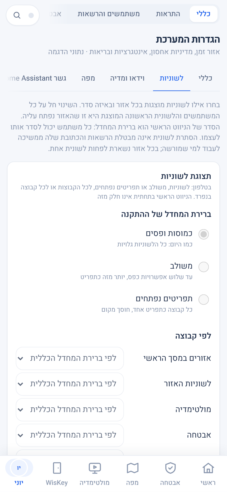
צילום מהדגמה.- ברירת המחדל של ההתקנה (בחירה אחת מהשלושה) - שינוי דורש
system.configure. "לפי קבוצה" מאפשר מצב שונה לכל אחת מחמש הקבוצות: אזורים במסך הראשי, לשוניות האזור, מולטימדיה, אבטחה והגדרות; "לפי ברירת המחדל הכללית" משאיר את הקבוצה עוקבת אחרי הבחירה הכללית. - "ההעדפה שלי" - אותו מבנה, אישי לכל משתמש. "לפי ההתקנה" (עם המצב הנוכחי בסוגריים) עוקב אחרי ברירת המחדל. ההעדפה האישית גוברת על ברירת המחדל של ההתקנה, וגם בה אפשר לקבוע קבוצה אחת אחרת.
- סדר ההכרעה לקבוצה: בחירה אישית לקבוצה, אחריה בחירה אישית כללית, אחריה בחירת ההתקנה לקבוצה, אחריה בחירת ההתקנה הכללית, ובסוף כמוסות ופסים.
- תצוגה מקדימה בתחתית הכרטיס מראה דוגמה של שלוש ושש אפשרויות במצב שנבחר, ובמצב תפריטים גם את צמד השורה האחת.
- במצב התפריטים הספירה ("(6)") נשארת ברשימה, נקודה על הצ'יפ מסמנת התראה מאחורי אפשרות שאינה מוצגת, והאזעקה באבטחה נשארת כפתור משלה במרחק נגיעה אחת כל עוד אינה הסעיף המוצג.
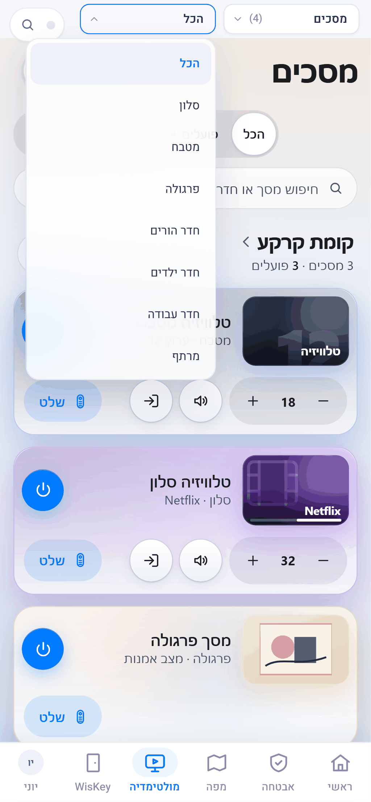
צילום מהדגמה.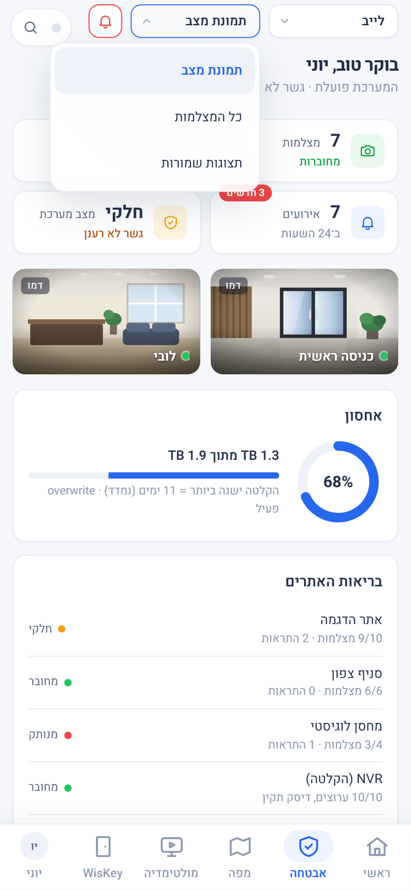
צילום מהדגמה.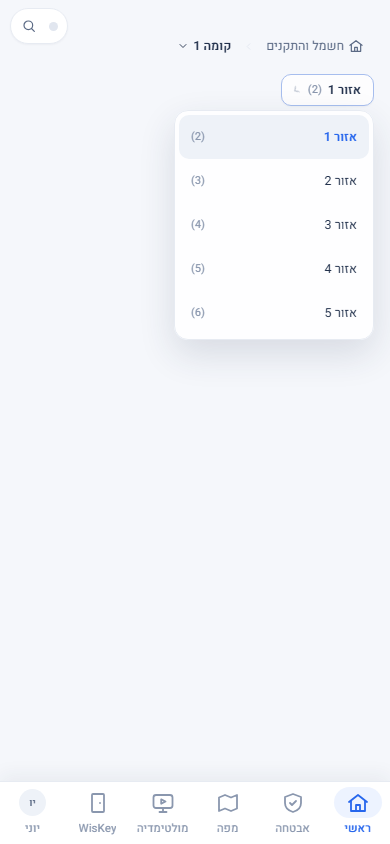
צילום מהדגמה.לשונית "וידאו ומדיה"
| שדה | משמעות | ברירת מחדל | טווח | מי רשאי לשנות |
|---|---|---|---|---|
תעבורה ברירת מחדל (media.transport_default) | auto (אוטומטי): WebRTC תחילה, ו-MSE רק כש-WebRTC אינו זמין (בלי חיבור תוך ~5 שניות, זרם שהדפדפן לא מפענח); webrtc (WebRTC בלבד): לעולם לא MSE; mse (MSE בלבד): בחירה מכוונת ללקוח שאצלו WebRTC בלתי אפשרי (אין UDP ישיר ל-go2rtc: Ingress / Cloudflare / CGNAT). החלטת הבעלים 2026-10-05; התקנה קיימת ששמרה בחירה מפורשת שומרת אותה | auto | auto / webrtc / mse | מנהל מערכת |
פרופיל לקיר המצלמות (media.wall_profile) | משני (sub) חוסך CPU ורוחב פס; ראשי (main) לתצוגה בודדת | sub | sub / main | מנהל מערכת |
מקסימום זרמים חיים במקביל (media.max_live_sessions) | הגנה על ה-NVR; מעל המכסה — צילום בלבד; ערך מעל מחצית מספר הערוצים שה-NVR בנוי להם מציג אזהרה ליד השדה, אבל השמירה לא נחסמת | 8 | 1–128 | מנהל מערכת |
רעננות צילום (snapshots.max_age_s) | תדירות עדכון תמונת ISAPI לאריחים | 60 שניות | 5–3600 | מנהל מערכת |
מצלמות בקיר כברירת מחדל (ui.wall_count) | נקודת פתיחה; כל דפדפן זוכר בחירה אחרונה | 4 | 1–32 | מנהל מערכת |
פריסת קיוסק כברירת מחדל (ui.kiosk_cols/ui.kiosk_rows) | עמודות×שורות; קישור קיוסק עם cols/rows גובר | 3×2 | 1–6 / 1–5 | מנהל מערכת |
מסך פתיחה (ui.start_route) | המסך שהמערכת נפתחת עליו כשהכתובת לא מציינת מסך. ברירת המחדל היא "ראשי" (חשמל והתקנים). ערך ששמר מנהל בעבר גובר על ברירת המחדל: התקנה ששמרה "מפת קומה" (או מסך אחר) ממשיכה להיפתח עליו עד שמשנים כאן ל-"ראשי". משתמש שאינו רואה את מסך הפתיחה נוחת על הלשונית הראשונה שלו | ראשי (devices) | devices (ראשי) / explore (מפת קומה) / live (סקירה) / wall (כל המצלמות) / events / playback | מנהל מערכת |
גודל תצוגת WisKey (ui.wiskey_size, ui.wiskey_scale) | רגיל: WisKey ממלא את אזור התוכן. מותאם: WisKey מוצג בגודל וירטואלי גדול יותר ומוקטן (קנה מידה 100 / 90 / 80 / 70%), כך שנכנסים בו יותר כרטיסים. מסך מלא: מכסה את כל החלון; יציאה בכפתור קטן בפינה או ב-Esc. הפאנל המוטמע אינו מציג יותר פס, כפתורי רענון / הגדלה / חלון חדש או מסגרת של Arx | רגיל; קנה מידה 90 | normal / fit / full; 100 / 90 / 80 / 70 | מנהל מערכת |
קומת ברירת מחדל במפה (map.default_floor, לשונית "מפה") | הקומה שנפתחת ראשונה בלשונית "מפת קומה", נבחרת מרשימה לפי אתר ומבנה. "אוטומטי" = הקומה הראשונה שהמשתמש רשאי לראות. משתמש שאינו רשאי לראות את הקומה שנבחרה מקבל את הקומה הראשונה שלו (ההגדרה לעולם לא נותנת גישה); מחיקת הקומה מנקה את ההגדרה | אוטומטי | קומה קיימת | מנהל מערכת |
הסתרת המפה (ui.hide_map) | מסיר את אזור המפה מהניווט לכולם | מוצגת | true/false | מנהל מערכת |
HA recorder כמקור משני (history.ha_secondary) | במפה ההיסטורית: מקור גיבוי כשההיסטוריה המקומית לא יודעת מצב | כבוי | true/false | מנהל מערכת |
מידות לפני כיול (plan.estimates) | הצגת ≈ עד כיול, או הסתרת מטרים | משוערות (≈) | true/false | מנהל מערכת |
מפלסים בפתיחת מפה (plan.levels) | כל המפלסים יחד, או רק ברירת המחדל של הקומה; מופיע גם בלשונית "מפה" | כל המפלסים | all/default | מנהל מערכת |
תצוגת פתיחה של מפה (map.default_view, לשונית "מפה") | המפה החיה, המפה ההיסטורית ודף האירוע נפתחים בדו־ממד או בתלת־ממד (כשלקומה יש מבנה); הכפתור 2D / 3D ממשיך להחליף בכל ביקור | דו־ממד | 2d/3d | מנהל מערכת |
מפלסים של חלל משותף (map.shared_levels, לשונית "מפה") | בעורך של קומה שמציגה חלל משותף: להציג בסרגל המפלסים גם את מפלסי הקומה של החדר | מוצגים | show/hide | מנהל מערכת |
רמת איכות בתלת-ממד (plan.quality) | ברירת מחדל להתקנה; דפדפן יכול לדרוס, מכשיר איטי יורד לבד | מלאה (2) | 1/2 | מנהל מערכת |
דעיכת סימון תנועה (plan.presence_fade) | דקות עד שגוון "נוכחות" בתלת-ממד דועך; כבוי = רק בזמן תנועה | 3 דקות | off / 1–120 | מנהל מערכת |
הסתרת חיפוש AI (ui.hide_search) | מסיר לשונית מהניווט; המסך עדיין זמין בכתובת | מוצג | true/false | מנהל מערכת |
תמונת מצב באבטחה (ui.security_snapshot) | מסיר את "תמונת מצב" (הסקירה החיה) מהניווט לכולם; הלייב נפתח על "כל המצלמות" והכתובת הישנה מפנה אליהן | מוצגת | true/false | מנהל מערכת |
סשני ניגון במקביל (playback.max_sessions) | כל ניגון = זרם playback אחד מה-NVR; ערך מעל מחצית מספר הערוצים שה-NVR בנוי להם (למשל מעל 16 ב-NVR של 32 ערוצים) מציג אזהרה ליד השדה, אבל השמירה לא נחסמת. אם דגם ה-NVR לא מזוהה — אין אזהרה | 4 | 1–128 | מנהל מערכת |
פקיעת סשן ניגון (playback.lease_s) | שניות ללא פעילות עד מחיקת הזרם | 600 | 60–3600 | מנהל מערכת |
גודל ייצוא מקסימלי (exports.max_mb) | לפי נפח משוער של קבצי NVR בטווח | 2048 MB | 50–20480 | מנהל מערכת |
שמירת קבצי ייצוא (exports.retention_days) | מחיקה אוטומטית לאחר התקופה | 7 ימים | 1–365 | מנהל מערכת |
שמירת אירועים (events.retention_days) | מחיקת אירועים ישנים מהמאגר המקומי | 30 ימים | 1–3650 | מנהל מערכת |
שמירת אודיט (audit.retention_days) | מחיקת שורות ביקורת ישנות | 365 ימים | 30–3650 | מנהל מערכת |
סקינים מרונדרים (AI) — ספק ומודל (skins.provider/skins.model) | ספק תמונה חיצוני לעיבוד קומה פוטו-ריאליסטי | openai / gpt-image-1.5 | — | מנהל מערכת |
סקינים — אישור פרטיות (skins.privacy_ack) | כל עוד כבוי, שום דבר לא נשלח, גם לא בדיקת חיבור | כבוי | true/false | מנהל מערכת |
סקינים — רינדורים לקומה (skins.budget_renders_per_floor) | לכל קומה וגרסת מבנה | 4 | 0–6 | מנהל מערכת |
סקינים — רינדורים בחודש (skins.budget_monthly) | לכל ההתקנה, לחודש קלנדרי, כולל בדיקות חיבור | 20 | 0–500 | מנהל מערכת |
| go2rtc — סנכרון זרמים | פותח לראשונה זרמי smplwise_* ב-go2rtc; זרמים זרים לא נגועים | — | system.configure | כן |
כרטיס "סגנון תפריט נפתח" (0.1.157)
מתחת לכרטיס "תצוגת לשוניות" נבחר המראה של תפריט נפתח. שבעה ערכים: כמו היום (ברירת המחדל - שום דבר לא משתנה עד שבוחרים), כדור מלא, שדה מעוגל, קו תחתון, טקסט, קידומת קבוצה וגוון הדגשה; כל אחד מוצג חי על רשימת דוגמה. כמו במצב הלשוניות: ברירת המחדל של ההתקנה (דורשת system.configure) ו"ההעדפה שלי", ולכל אחת בחירה כללית ו"לפי קבוצה" - כל קבוצה שיכולה להיות תפריט נפתח מקבלת סגנון משלה. ההעדפה האישית גוברת; "אפס את ההעדפות שלי" מחזיר לברירת המחדל. הסגנון חל על תפריטי הלשוניות בכל רוחב מסך, בארבעת העיצובים ובכל הפלטות, ופועל לפי מתגי הרדיוס, המגע (32 / 44) ורמת הביצועים (ללא טשטוש ברשימה הגדולה במצב חסכוני).
מכסות עד 128 ואזהרת קיבולת
שלוש מכסות קובעות כמה זרמי וידאו אפשר להפעיל יחד: מקסימום זרמים חיים במקביל וסשני ניגון במקביל (בלשונית "וידאו ומדיה"), וזרמים חיים לכל כניסה (בלשונית "גישה מרחוק", ראו להלן). בכל אחת אפשר להגדיר עד 128.
- אזהרה, לא חסימה. כשהערך שהוזן גדול ממחצית מספר הערוצים שה-NVR בנוי להם, מופיעה ליד השדה הודעה אדומה: "N … זה יותר ממחצית הערוצים שה־NVR בנוי להם (M). זה עלול להעמיס על ה־NVR ולפגוע בהקלטה…". השמירה אפשרית - ההחלטה בידי מנהל המערכת.
- מספר הערוצים נקרא מדגם ה-NVR שנשמר בגילוי (למשל דגם 7616 הוא 16 ערוצים ודגם 7732 הוא 32). אם הדגם אינו מוכר - אין אזהרה, וזה אינו אומר שהערך בטוח.
- אלה תקרות, לא הבטחה. עומס אמיתי תלוי גם ברשת, בקידוד הזרמים וב-NVR; ערך גבוה אינו מגדיל את יכולת ה-NVR.
לשונית "גישה מרחוק"
לשונית זו מרכזת את הגדרות הכניסה מחוץ לבית (כתובת https://<שם המתחם>/arx) ואת מדיניות הווידאו מרחוק. שינוי דורש system.configure; מי שאין לו רואה אותה לקריאה בלבד. הערוץ עצמו מופעל באפשרות remote_access של ה-add-on.
| כרטיס / שדה | משמעות | ברירת מחדל |
|---|---|---|
מי רשאי להיכנס מרחוק (remote.policy) | דגל אישי לכל משתמש (רק מי שהופעלה לו גישה מרחוק ב"משתמשים והרשאות") או כל משתמש עם תפקיד | דגל אישי |
מנהלים - גישה מרחוק כברירת מחדל (remote.admins_default) | מנהל מערכת נכנס מרחוק בלי דגל אישי; חל על "דגל אישי" | מופעלת |
שמירת הכניסה בדפדפן (remote.session) | 90 יום מתחדשים / עד סגירת הדפדפן / 90 יום עם נעילה אחרי זמן ללא פעילות (ואז "נעילה אחרי": 5 עד 10080 דקות) | 90 יום מתחדשים; נעילה 720 דקות |
אימות דו־שלבי למנהלים (remote.require_mfa_admin) | רשות או חובה למנהלים: מי שיש לו הרשאות ניהול נכנס מרחוק רק עם אימות דו־שלבי בפרופיל שלו | רשות |
אימות דו־שלבי מאפליקציה (security.second_factor_policy) | רשות או חובה למנהלים: קודי Google Authenticator וכדומה בכניסה מרחוק חדשה, למי שנרשם בחשבון שלו; הפירוט ב-82-second-factor_HE.md. שונה מהשורה שמעליה | רשות |
| כניסות פעילות מרחוק | רשימת הכניסות הפעילות (דפדפן או אפליקציה, מאיפה, מתי) עם ניתוק מיידי של הכניסה | - |
| מדיניות אבטחת תוכן (CSP) | דיווחים על מדיניות מחמירה יותר לגישה מרחוק, שרצה קודם במצב דיווח בלבד | - |
וידאו מרחוק: זרם ברירת מחדל (remote.default_profile) | הזרם שצופה מרוחק מקבל ראשון ב-WebRTC: ראשי או משני | ראשי |
איכות בקיר המצלמות מבחוץ (remote.wall_profile) | רגילה (משני) או גבוהה (ראשי), לאריחי הקיר מרחוק | רגילה |
MSE כמוצא אחרון (remote.mse_fallback) | כש-WebRTC לא מתחבר: מותר או אסור (אסור = אין וידאו דרך המנהרה בכלל) | מותר |
זרמים חיים לכל כניסה (remote.max_live_streams) | כמה צפיות חיות במקביל מותרות לכל דפדפן או אפליקציה שנכנסו מרחוק; 1 עד 128; הצפייה הבאה נדחית עם הסבר. המכסה הכללית של המערכת חלה בנוסף. מוצג גם "פעילים עכשיו", ואזהרת הקיבולת שלמעלה | 16 |
- בלשונית גם שורת סיכום של קידוד הזרמים ב-NVR ובדיקת חיבור וידאו (כרטיס "בדיקת חיבור וידאו").
- בשינוי מכסה לוחצים "שמור" בתחתית הלשונית. השמירה נרשמת ביומן הביקורת.
- ההסבר למשתמש על וידאו מרחוק נמצא ב-
30-cameras_HE.md.
כרטיס "הורדת אפליקציית Android"
באותה לשונית: כתובת הורדה (https בלבד), תווית גרסה ו-SHA-256 (שניהם לא חובה). ריק = הקישור לא מוצג. הקישור מופיע במסך הכניסה מרחוק רק במכשיר Android ומחוץ לאפליקציה. בניית ה-Android הנוכחית היא ניסיונית ואינה להפצה: אל תגדירו כתובת עד שתהיה בניית שחרור חתומה. פירוט ב-82-second-factor_HE.md.
לשונית "גשר Home Assistant"
| מה מוצג | משמעות |
|---|---|
| חיבור ל-Home Assistant | האם SUPERVISOR_TOKEN הוגדר; בלעדיו אין גישה ל-API של HA |
| גשר SMPLWISE (אינטגרציה ב-Home Assistant) | סטטוס: לא הותקנה / ממתינה ל-Restart / פעילה / עדכון ממתין / שגיאה / לא זמין |
| כתובת + קוד זיווג | להעתקה כשמתקינים את האינטגרציה ידנית (HACS) |
| "התקנת הגשר (פעם אחת)" | מעתיק את custom_components/smplwise_bridge ל-config של HA ומכריז עליה; דורש הפעלה מחדש אחת של HA כדי שתיטען |
מי רשאי: מנהל מערכת בלבד רואה כתובת/קוד זיווג ולוחץ "התקנת האינטגרציה"; כל השאר תצוגה בלבד.
אבטחה (אזעקה ו-NVR)
מסך האזעקה, הניהול שלה וסיכום ה-NVR הם עמוד נפרד בהגדרות, הגדרות ← אבטחה (ראו 32-alarm_HE.md); הניהול כבר לא לשונית של "כללי", ומסך האזעקה מופיע גם כמקטע באזור האבטחה. העמוד מופיע למחזיקי הרשאות האזעקה גם בלי הרשאת הגדרות כללית, ועמודי האזעקה רק כשקיים לוח אזעקה (עמוד ה-NVR למנהל מערכת).
לשונית "בקרות כניסה"
| שדה | משמעות | ברירת מחדל | מי רשאי לשנות |
|---|---|---|---|
הצג את WisKey במערכת (ui.hide_wiskey) | הסתרת כל אזור WisKey מהניווט לכולם, ללא תלות בתפקיד | מוצג | מנהל מערכת |
מרכז הכניסה (access.ui.overview) | WisKey (מוטמע) או SMPLWISE | WisKey | מנהל מערכת |
פעילות (access.ui.events) | WisKey (מוטמע) או SMPLWISE | WisKey | מנהל מערכת |
אנשים (access.ui.people) | WisKey (מוטמע) או SMPLWISE | WisKey | מנהל מערכת |
הטמעה גם באפליקציית Companion (ניסיוני) (access.phone_embed) | מופעל: גם באפליקציית Home Assistant בטלפון WisKey מוטמע, ו־SMPLWISE מעביר את ההזדהות של האפליקציה ל־Home Assistant שבתוך המסגרת; אם ההזדהות לא מצליחה, המסך חוזר לבד למסך של SMPLWISE עם "פתח ב-WisKey". כבוי: באפליקציה אין מסגרת | כבוי | מנהל מערכת |
| שאר מסכי WisKey (עמדות, סנכרון, בריאות, יומן שינויים, ניהול) | תמיד מוטמעים — קבוע, לא ניתן לשינוי | WisKey (קבוע) | — |
ראו 50-wiskey_HE.md לגבי מה זה אומר בפועל (הרשאות WisKey עצמו חלות בפאנל המוטמע, לא הרשאות SMPLWISE).
לשונית "חשמל והתקנים"
| שדה | משמעות | ברירת מחדל | מי רשאי לשנות |
|---|---|---|---|
סגנון (devices.style) | SMPLWISE (מראה שאר המערכת) או זכוכית (משטחים שקופים ומטושטשים, מהמוקאפ שאושר) | SMPLWISE | מנהל מערכת |
ערכת צבע (devices.theme) | ברירת מחדל / חול / יער / גרפיט — פלטת swatches | ברירת מחדל | מנהל מערכת |
בהיר או כהה (devices.scheme) | לעולם לא כהה רק כי מערכת ההפעלה כהה — צריך בחירה מפורשת | בהיר | מנהל מערכת |
תצוגת הפתיחה של המבנה (devices.default_view) | כרטיסים (עץ+כרטיסי קומה) או אריחים; בחירה אישית של הצופה גוברת | כרטיסים | מנהל מערכת |
צפיפות (devices.density) | מרווחת / דחוסה (אריחים, שורות ורווחים קטנים יותר) | מרווחת | מנהל מערכת |
חיישנים (devices.show_sensors) | כרטיס חיישנים במסך אזור + מונה במסך מבנה | מוצג | מנהל מערכת |
מה מוצג ליד שם האזור (devices.area_row) | אילו פריטים מופיעים בשורה אחת אחרי שם האזור ובאיזה סדר: מזגן, טמפרטורה בחדר, תאורה, מתגים, תריסים, מדיה, דלתות וחלונות פתוחים, מנעולים, אזעקה; מה המזגן מציג (סמל / סמל וטמפרטורה / סמל ומצב); מזגן ממוצע או מוביל (ואיזה מזגן מוביל בכל אזור עם כמה מזגנים); "רק כשפעיל" לכל פריט (ברירת מחדל לדלתות/חלונות פתוחים ולמנעולים); האם להציג גם מונים שערכם אפס | מזגן עם טמפרטורה, תאורה, מתגים, מדיה; אפסים מוסתרים | מנהל מערכת |
מה מוצג בכותרת הקומה (devices.floor_row) | אילו מונים ובאיזה סדר בשורת הספירות של כרטיס הקומה | תאורה, מתגים, תריסים, מזגנים, מדיה, מנעולים, חיישנים | מנהל מערכת |
~~רצועת המזגנים~~ (devices.show_climate_strip) | הוסרה ב-0.1.149: רשימות המזגנים הוחלפו בסימן אחד בשורת האזור; המפתח נשמר אך אינו משפיע | — | — |
מי שמוגדרת לו ההרשאה "התאמה אישית של המסך שלי" (screen.personalize) בוחר את שתי הרשימות גם לעצמו, ב-החשבון שלי › המסך שלי; רק מה שנבחר שונה מברירת המחדל נשמר, כך ששינוי מאוחר של ברירת המחדל עדיין מגיע אליו.
הפריסה עצמה (מיקום/גודל כרטיסים, כותרת, אייקון, צבע לפי תפקיד) נערכת ב"עריכת המסך הראשי" (תפריט המשתמש) במסך המבנה/ האזור עצמו — ראו 40-devices_HE.md, לא כאן. באותו מצב עריכה מגדירים גם את כותרת המסך הראשי, את הווידג'טים האופציונליים (שעון, מזג אוויר, לוח שנה עברי מחיישנים שבוחרים) ואת סדר הקומות; כולם כבויים כברירת מחדל. לשונית זו מכילה רק את הסגנון, הצבעים והצפיפות.
מתגים מוגנים (CR-019)
הגדרות › חשמל והתקנים › "מתגים מוגנים" (מנהל מערכת בלבד, הרשאת system.configure; כל שינוי נרשם ביומן הביקורת).
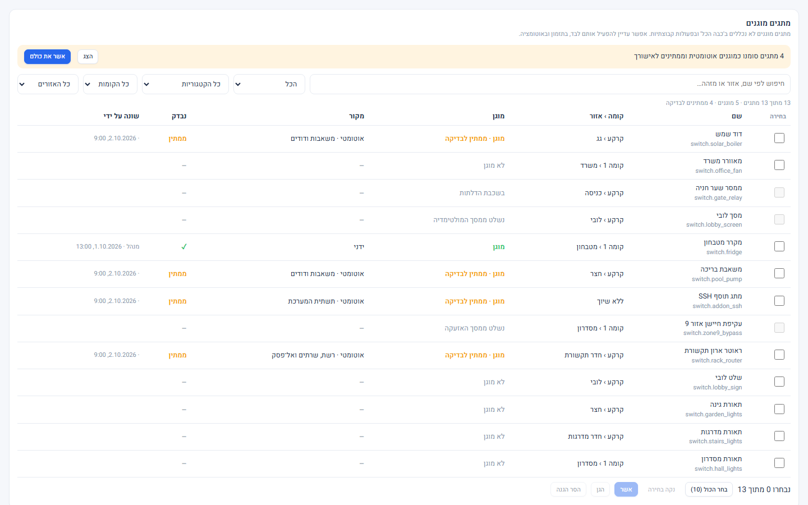
- מה זה: מתג מוגן לא נכלל ב"כבה הכל" ובפעולות קבוצתיות (קומה, אזור, מבנה, הכפתור הראשי). אפשר עדיין להפעיל אותו לבד, בתזמון ובאוטומציה. כל מתג אחר נכלל כברירת מחדל - גם מתג חדש, וגם מתג שהמערכת עוד לא בדקה. רק הגנה שאישרתם במפורש מוציאה מתג מהפעולות הקבוצתיות.
- הצעות אוטומטיות: מתג שנראה רגיש לפי השם, הסוג, האזור או התוסף שלו (משאבות ודודים, חימום ובישול, שערים ודלתות, מקררים, רשת ושרתים, אזעקה ומצלמות, בריכה, השקיה, מעלית, טעינה ואנרגיה, תשתית המערכת) מופיע כ"מוצע להגנה". הצעה אינה הגנה: המתג נשאר בפעולות הקבוצתיות עד שתאשרו. מתג שדחיתם את ההצעה עליו לא יוצע שוב.
- סרגל ההצעות: כל עוד יש הצעות - "N מתגים מוצעים להגנה לפי השם או הסוג שלהם. הם נכללים ב'כבה הכל' עד שתאשרו", עם "הצג" (מסנן את הרשימה) ו"הגן על כולם".
- הרשימה: כל המתגים, עם חיפוש, סינון לפי סטטוס (הכל / מוגנים / מוצעים להגנה / לא מוגנים), קטגוריה, קומה ואזור, ומיון לפי שם או מקום. בכל שורה: האם מוגן, מקור (הצעה אוטומטית עם הקטגוריה, או ידני), האם אושר, ומי שינה ומתי. מתג שנשלט ממסך האזעקה, בשכבת הדלתות או ממסך המולטימדיה אינו נבחר - הוא אף פעם לא בפעולה קבוצתית.
- פעולות על הבחירה: סימון שורות (Shift+לחיצה לטווח, "בחר הכול" לכל מה שמוצג) ואז "הגן", "הסר הגנה" או "דחה הצעה". לכל פעולה חלון אישור אחד; "הסר הגנה" מציין שהמתגים ייכללו מעכשיו ב"כבה הכל", והפוקוס בו על "ביטול". בסיום מוצגת שורת תוצאה.
- בשדרוג: מתגים שאושרו בעבר נשארים לא מוגנים. הרשימה הישנה נשמרת כפי שהייתה לצורך חזרה לגרסה קודמת.
- גיבוי: ההגנות נכללות בגיבוי הפרויקט. שחזור מגיבוי ישן שאין בו אותן לא מוחק הגנות קיימות.
קטלוג התקנים
קטלוג ההתקנים (כל הישויות של תשתית המערכת, עם שיוך למפה, פעולות מותרות ומצב חי) עבר מהלשונית "התקנים" של המפה אל הגדרות › קטלוג התקנים, ומיועד למנהלי מערכת בלבד (system.configure בהיקף התקנה). קישור ישן ל-#/explore/entities מפנה לשם למי שמורשה, ואחרת למפה. הנתונים עצמם עדיין נגישים בשרת למי שמחזיק entity.state.read; הסתרת הלשונית היא הסתרת תצוגה, לא הרשאה.
הגדרות › תזמונים
הסגמנט "תזמונים" בלשונית "קברניט" במסך הראשי (ראו 41-schedules_HE.md) מציגה ומנהלת את התזמונים של רכיב התזמונים בתשתית המערכת (האינטגרציה Scheduler של nielsfaber; רישיון GPL-3.0, ולכן אינה כלולה בהתקנה ואינה מותקנת על ידי Arx). הרכיב שומר ומריץ את התזמונים; Arx קורא אותם ממנו וכותב אליו דרך גשר Arx. ההגדרות כאן דורשות system.configure, נרשמות ביומן, ואף אחת מהן אינה משנה את התזמונים הקיימים.
הפעלה: כבוי כברירת מחדל
התזמונים כבויים עד שמנהל מערכת מפעיל אותם: "הצגת הטאב 'תזמונים' במסך הראשי" (schedules.enabled, ברירת מחדל כבוי). כבוי = הסגמנט אינו מוצג לאף משתמש, Arx אינו מאזין לרכיב ואינו כותב אליו, וכל התזמונים הקיימים ממשיכים לפעול ברכיב. ההדלקה מתחילה להאזין מיד ואינה דורשת הפעלה מחדש של Arx.
כרטיסי המסך
| כרטיס | מה בו |
|---|---|
| חיבור | האם רכיב התזמונים נמצא (וגרסתו; נדרש Home Assistant 2024.11.0 ומעלה), גרסת גשר Arx מול הנדרשת (0.3.0 ומעלה לשמירת תזמונים), סנכרון אחרון, מספר התזמונים ("N מוסתרים מהמשתמש הנוכחי" - תזמונים שמחוץ להיקף שלכם), "בדיקה מחדש", והוראות התקנה |
| הפעלה | מתג ההפעלה, וחיישן שבת וחג |
| סוגי התקנים מותרים בתזמון | שמונה סוגים, כל אחד במתג: תאורה, מתגים, תריסים, מיזוג, מאווררים (רגילים), ואזעקה, מנעולים, דלתות ושערים (מסומנים "רגיש"). ברירת מחדל: כולם |
| ברירות מחדל לעורך | הצמדת זמן 5 / 15 / 30 דקות (15), סוג חזרה (חוזר), ושמירת הרצות אחרונות (90 ימים; בשרת 7–365) |
| מי רשאי מה | ההרשאות הרגילות של כל תפקיד מובנה, וקישור ל-משתמשים והרשאות |
- חיישן שבת וחג (
schedules.shabbat_sensor): ה-binary sensor "איסור מלאכה בתוקף" של לוח השנה היהודי. נבחר פעם אחת מרשימה (מוצעים חיישנים שנראים כחיישן של לוח שנה יהודי). בלעדיו אין את התנאים המוכנים "רק בשבת ובחג", "לא בשבת ובחג" ו-"מוצאי שבת" (מנהל מערכת רואה בעורך הודעה שמפנה לכאן), ותזמון שיש בו תנאי כזה מוצג כ-"בתנאי: <שם החיישן> ...". מצב החיישן מוצג לכל צופה בתזמונים, כי זו עובדה של לוח שנה. השרת מסרב לחיישן שאינו נראה כחיישן לוח שנה יהודי ומחזיר הודעה. - סוגי התקנים: סוג שכובה - אי אפשר ליצור בו תזמונים חדשים; תזמונים קיימים ממנו הופכים לקריאה בלבד (אפשר להשבית או למחוק, לא להפעיל או להריץ) ומופיעים ב-"לבדיקה". הגנה על מתג מפעולה קבוצתית ("מתגים מוגנים") אינה חלה על תזמון: כל מתג ניתן לתזמון, בהרשאה הרגילה. גם כשהסוג מופעל, מה שמותר ביותר הוא קבוע בקוד: אין סצנות, סקריפטים או תחומים אחרים.
- כללי הבטיחות אינם הגדרות: סל המחזור (30 יום), האישורים, סירוב לשמור קוד והרשימה המותרת של פעולות קבועים.
התקנת רכיב התזמונים
- מתקינים את האינטגרציה המותאמת "Scheduler" (ב-HACS: "scheduler component"), או מעתיקים ידנית את התיקייה
custom_components/scheduler. - מפעילים מחדש את Home Assistant.
- הגדרות › מכשירים ושירותים › הוספת אינטגרציה › "Scheduler".
- גרסת Home Assistant 2024.11.0 ומעלה. חוזרים לכאן ולוחצים "בדיקה מחדש": "נמצא · גרסה ...".
עד שהרכיב נמצא, משתמש רגיל רואה "אין תזמונים להצגה. הפעלת התזמונים מנוהלת בהגדרות." ומנהל מערכת רואה הודעה מפורטת. Arx לא נוגע ברכיב הקיים כשהוא חסר (המידע השמור נשמר) ומאשר "חסר" רק אחרי שתי תשובות במרווח של 5 דקות לפחות.
גשר Arx 0.3.0 - חובה לכתיבה
קריאה ותצוגה של תזמונים אינן דורשות את הגשר. **יצירה, עריכה, הפעלה והשבתה, הרצה, מחיקה ושחזור עוברות דרך שירות חדש בגשר (smplwise_bridge.schedule) שקיים מגרסה 0.3.0.** אחרי עדכון ה-add-on לגרסה שכוללת תזמונים:
- ב-הגדרות › גשר Home Assistant מוודאים שהגשר עודכן ("התקנת הגשר" מעתיקה את הגרסה החדשה, אם צריך).
- מפעילים מחדש את Home Assistant פעם אחת, כדי שהגשר החדש ייטען.
- חוזרים ל-הגדרות › תזמונים: "גשר Arx: גרסה 0.3.0 (נדרש 0.3.0 ומעלה)".
עד אז הרשימה עובדת לקריאה בלבד, ופעולות כתיבה מראות "נדרש עדכון של רכיב החיבור" (גשר חסר או לא מזווג: "שמירת שינויים אינה זמינה כרגע"). הגשר בודק בעצמו כל בקשה, בנפרד מהשרת: חתימה, רשימת פעולות מותרות, מבנה הבקשה, שאין קוד, והאם המשתמש רשאי לשלוט בכל התקן בתזמון.
הרשאות
| הרשאה | מה היא נותנת | ברירת מחדל |
|---|---|---|
schedule.view - צפייה בתזמונים | לראות תזמונים, הרצות באות ואחרונות (בהיקף) | מנהל אתר, מנהל מערכת |
schedule.manage - ניהול תזמונים | ליצור, לערוך, להפעיל ולהשבית, להריץ עכשיו, לשכפל, למחוק ולשחזר | מנהל אתר (בהיקף שלו), מנהל מערכת; רגישה - אינה מרומזת |
schedule.sensitive - תזמון פעולות רגישות | להוסיף לתזמון אזעקה, מנעולים, דלתות ושערים | מנהל מערכת בלבד; רגישה - אינה מרומזת |
- מנהל מערכת בפועל: כל השלוש.
system.configureלבדו מנהל את ההגדרות האלה ואינו נותן הרשאה על תזמונים. הרצה מיידית כלולה ב-schedule.manage(אין הרשאה נפרדת). צפייה מתקבלת גם מ-schedule.viewוגם מ-schedule.manage. - הרשאה על ההתקנים עצמם חלה גם היא. כדי לערוך תזמון צריך
schedule.manageוגם שליטה בכל התקן בו (devices.controlלהתקנים הרגילים,ha.entity.controlלמנעולים ולדלתות,alarm.arm/alarm.disarmלאזעקה,door.unlockלפתיחת נעילה), ולראות אותם (devices.readאוentity.state.read). פעולה רגישה דורשת גםschedule.sensitive. - כלל ההיקף: עורך במסגרת היקף (קומה, מבנה) רואה תזמון רק אם כל ההתקנים שבו בהיקפו, ועורך אותו רק אם הוא מחזיק את כל ההרשאות על כל ההתקנים - הישנים והחדשים. התקן אחד מחוץ להיקף הופך את כל התזמון לקריאה בלבד עם סיבה מפורטת (או מסתיר אותו, אם אינו נראה). תנאי על חיישן שמחוץ להיקפו מוצג לו אך נעול: הוא עורך שעות ופעולות, ואינו יכול לשנות או להסיר את התנאי.
- מנהל אתר ברירת מחדל: צפייה וניהול, בהיקף שלו, בלי פעולות רגישות. רשימת "לבדיקה" ומחיקה לצמיתות מסל המחזור - רק בהיקף התקנה.
**איך נותנים הרשאה למשתמש או לתפקיד (משתמשים והרשאות, ראו 81-roles_HE.md):**
- למנהל אתר קיים: אין צורך - צפייה וניהול כבר כלולים בתפקיד, בהיקף שלו.
- תפקיד מותאם "עורך תזמונים" (לאדם שצריך לערוך תזמונים בלבד, בקומה או במבנה מסוים):
- משתמשים והרשאות › לשונית "תפקידים" › "תפקיד מותאם חדש", שם: עורך תזמונים.
- הרשאות רגילות: "צפייה בתזמונים", "צפייה בחשמל והתקנים" (
devices.read; במקומה מספיקה גם "מצב ישויות HA") ו-"שליטה בהתקן בודד (חשמל והתקנים)". - הרשאות רגישות (מסומנות במפורש): "ניהול תזמונים: יצירה, עריכה, הפעלה והשבתה, הרצה מיידית, מחיקה ושחזור". רק אם הוא צריך גם אזעקה, מנעולים או דלתות: "תזמון פעולות רגישות" והרשאות ההתקן המתאימות ("ניטרול אזעקה", "פתיחת דלת", "שליטה בישות HA").
- מבטלים את "שייך את התפקיד אליי מיד" אם אינכם רוצים לקבל אותו בעצמכם, ולוחצים "צור תפקיד". תפקיד עם הרשאה רגישה אינו ניתן להאצלה למנהלי אתר - רק מנהל מערכת משייך אותו.
- משתמש (או קבוצה) › שיוך: בוחרים את התפקיד "עורך תזמונים", את ההיקף (הקומה או המבנה שבהם הוא רשאי לערוך), בודקים את התצוגה המקדימה ולוחצים "שמור שיוך".
- בדיקה: "הרשאות אפקטיביות" מראה מה מותר למשתמש בהיקף. אחרי השיוך הסגמנט "תזמונים" ב"קברניט" מופיע לו במסך הראשי.
מגבלות - מה חשוב לדעת
- מי שעורך ישירות בתשתית המערכת עוקף את הרשאות Arx. כל משתמש עם גישה לרכיב התזמונים (למשל דרך כרטיס התזמונים המקורי) יכול ליצור, לערוך ולמחוק תזמונים בלי היקף, בלי רשימת ההתקנים המותרת, בלי אישורים ובלי יומן של Arx. Arx אינו יכול למנוע זאת (הגבלות Arx אינן מגבילות את הממשק המקורי). תזמונים כאלה מופיעים ב-Arx כ-"שנוצרו מחוץ למערכת" (נערכים רק אם Arx מבין אותם במלואם, אחרת לקריאה בלבד ואינם נכתבים מחדש). תזמון רגיש שנוצר מחוץ ל-Arx מסומן ב-"לבדיקה" ("תזמון רגיש שנוצר מחוץ למערכת"), ושינוי מבחוץ בתזמון רגיש נרשם ביומן (
schedule.changed_outside). תזמון רגיל שנוצר מחוץ ל-Arx אינו מסומן בנפרד, אלא רק אם יש בו בעיה אחרת. - הפעולה מתבצעת רק ברגע ההתחלה של המשבצת. "עד שעה" הוא סוף חלון בלבד: בסופו לא קורה כלום. "הדלקה עד 19:00" דורשת משבצת כיבוי נפרדת (העורך מציע "כיבוי בסיום החלון").
- הימים שייכים לתזמון כולו. הפרשי ימים = תזמונים נפרדים (העורך מפצל באישור). ימי "עבודה" ו-"סוף שבוע" אינם ניתנים לפיצול ואינם מחושבים בתצוגת השבוע ובתצוגה המקדימה.
- תנאים אינם מוערכים ב-"הרצה הבאה". הרכיב מחשב מועדים לפי ימים ותאריכים בלבד, והתנאי נבדק רק כשהמשבצת אמורה לרוץ; לכן תזמון עם תנאי מוצג "· בתנאי" ולא כהבטחה. משבצת שדולגה בגלל תנאי אינה נרשמת בשום מקום.
- לרכיב אין היסטוריית הרצות. "הרצות אחרונות" ש-Arx מציג הן נגזרות: תזמון שנכנס למצב "מתבצע" נרשם כהרצה, ואחרי 20 שניות מצב ההתקנים מושווה למצופה: "אושר", "לא אושר" או "דולג" (התקן לא זמין). לעולם לא "נכשל", והרכיב אינו מדווח על כשל.
- אזעקה או מנעול שדורשים קוד - אי אפשר לתזמן. תזמון אינו שומר קודים (תשתית המערכת שומרת את פרטי הפעולה כטקסט גלוי). דריכה בלי קוד מותרת. פעולה קיימת שכבר נשמרה (למשל דריכה בלי קוד בלוח שכנראה עובד בלי קוד) אינה נחסמת בעריכה, אלא מסומנת באזהרה וברשימת "לבדיקה". תכנון לפתרון בטוח לנטרול (מסירת קוד דרך Arx, שלב 2ב) מחכה לאישור נפרד.
- תזמון ממשיך לפעול אחרי שמי שיצר אותו איבד הרשאה או הוסר. "לבדיקה" מציג זאת; Arx לעולם לא משבית תזמון בעצמו.
- חלון קצר של דריסה: לרכיב אין מספר גרסה לתזמון, ולכן בין הבדיקה האחרונה לכתיבה (אלפיות שנייה) שינוי מקביל יכול להידרס. Arx בודק גרסה לפני כל כתיבה ומציג "התזמון שונה במקום אחר", אך אינו יכול לסגור את החלון הזה לגמרי.
- מה עוד עדיין לא זמין: עריכת תגיות (מוצגות בלבד, עד שהכתיבה תאומת), היסט שלילי משקיעה / זריחה ("לפני"), ארגון בתיקיות וסדר ידני, ייבוא וייצוא, מסך פעילות מלא וזיהוי התנגשויות בין תזמונים. סקריפטים וסצנות בתזמון אינם נתמכים (תזמון שכולל אותם נשאר לקריאה בלבד).
- הרכיב עצמו: אחריות של מפתח חיצוני יחיד; שינוי בגרסה שלו יכול לשנות את מבנה הנתונים. Arx מציג לקריאה בלבד כל מה שאינו מבין, ואינו כותב מחדש תוכן לא מוכר.
הגדרות › מולטימדיה (מסכים, שלט, נגנים, רמקולים וקבוצות; CR-015 ו-CR-016)
הכניסה "מולטימדיה" (ראו 42-multimedia_HE.md) מתמלאת מכאן. המסך נמצא ב-#/system/multimedia, דורש system.configure, חל על ההתקנה כולה ונרשם ביומן (settings.update, media.device.update, media.link, media.approve, media.group.preset). המסך הזה - ורק הוא - מציין בשמם את הרכיבים של תשתית המערכת (נגן המוזיקה, שירותי היצרנים); מסכי המפעילים אינם מציינים אותם. אין קשר ללשונית "וידאו ומדיה" שלמעלה: זו מדיה של מצלמות (תעבורת וידאו, מכסות זרמים); כאן מדובר במסכים, טלוויזיות ושלט.
לפני שמפעילים
- גשר Arx 0.4.0 ומעלה למסכים, 0.5.0 ומעלה לנגנים וקבוצות. פקודות מסך (הפעלה, מקור, מקשים, עוצמה) עוברות דרך הגשר, והוא בודק אותן בעצמו, בנפרד מהשרת. כל עוד הגשר המותקן ישן יותר, הקריאה והתצוגה עובדות אבל כל פקודה נדחית עם "נדרש עדכון של רכיב החיבור" (
bridge_outdated). גשר 0.5.0 מוסיף את פקודות הנגנים (דילוג, ערבוב, חזרה, קיבוץ ופירוק, התחלת פריט מהספרייה, העברת מוזיקה), קריאה בלבד של "הבא בתור" ושל הספרייה, ושיוך התקן לחדר; גשר 0.4.0 ממשיך לשרת מסכים. מעדכנים כמו את גשר 0.3.0 (ראו "גשר Arx 0.3.0 - חובה לכתיבה" למעלה): מתקינים מחדש את האינטגרציה, מפעילים מחדש את הליבה, ובודקים שהמסך מציג "גשר Arx: גרסה 0.5.0". - בדיקה מקדימה (מומלץ, פעם אחת בכל מערכת). סקריפט קריאה בלבד שמתאר את מבנה המסכים ברישום של המערכת בלי שמות ומזהים - ראו "בדיקה מקדימה" בהמשך. הוא עונה מראש כמה מסכים פיזיים יוצאו מהישויות הקיימות ואילו חיבורים יאוחדו.
- הפעלה:
multimedia.enabled(ברירת מחדל: פועל). כבוי = הכניסה "מולטימדיה" אינה מוצגת לאף משתמש והשרת עונהfeature_disabled; מסכים ועריכות שנשמרו נשארים.
לשונית "מסכים" - אישור והגדרה
שום מסך אינו מוצג למשתמשים עד שמנהל המערכת מאשר אותו. "אשר את כל המסכים שזוהו" מאשר בפעולה אחת; אפשר גם מסך מסך. המערכת סופרת כמה מסכים שזוהו עדיין ממתינים לאישור.
| שדה | משמעות |
|---|---|
| סוג וביטחון הזיהוי | מסך / מגבר / רמקול / נגן / קבוצה, ואיך הוחלט (אוטומטי או ידני) ובאיזו ודאות. מסכים - כאן; רמקולים, נגנים ומגברים - ב"נגנים ורמקולים" למטה |
| אישור | מוצג למשתמשים או לא |
| שם תצוגה | ריק = השם של ההתקן המקורי |
| קומה ואזור | נקראים מהרישום של תשתית המערכת, אינם נערכים כאן. ההיקף של המסך (מי רואה ושולט) נקבע לפי המיקום של ההתקן הראשי שלו |
| מסך ציבורי | החלפת מקור, אפליקציה והקלדה דורשות מסכים ציבוריים (הרשאה רגישה) - לחדרים משותפים, לובי, אולם |
| פרופיל | מה מזוהה אוטומטית, או פרופיל שנקבע ידנית (ראו למטה) |
| מגבר מקושר וברירת שמע | מגבר או מקרן קול שהמסך משתמש בו, ואם העוצמה עוקבת כברירת מחדל אחריו או אחרי המסך |
| תקרת עוצמה | 0-100; פקודת עוצמה גבוהה ממנה נחתכת לתקרה |
| מקשים נוספים לדגם | מקשים שלא אומתו (למשל הכחול בחלק מהמסכים) - מופעלים למסך ספציפי בלבד, אף פעם לא בניחוש |
| "גם מדליק: ..." | רק לקריאה: מסך שהתצורה שלו בתשתית המערכת מדליקה גם התקנים אחרים עם ההדלקה שלו. Arx לעולם לא מפעיל את זה בעצמו |
לשונית "חיבורים" - איך מכירים מסך אחד מכמה ישויות
אותה טלוויזיה מופיעה לעיתים בכמה ישויות: של היצרן, של שירות ענן, של שידור למסך, של DLNA ושל נגן מוזיקה. Arx בונה מהן מכשיר אחד, לפי הכללים האלה בסדר הזה (הראשון שמתקיים מכריע):
- אותו התקן ברישום - כל הישויות של אותו התקן (מדיה ושלט).
- לולאת נגן המוזיקה - ישות שנוצרה על ידי נגן המוזיקה ומזהה הנגן שלה הוא ישות קיימת.
- כתובת MAC זהה בשני התקנים (מנורמלת: אותיות קטנות, בלי מפרידים).
- מזהה זהה (UUID, מספר סידורי או מזהה שידור) בשני התקנים.
- אותו אזור ושם דומה - הצעה בלבד ("הצעת איחוד"): אף פעם לא מתאחד לבד.
- ידני: "חיבור", "ניתוק" או "התעלמות" מישות - גוברים על כל הכללים ונרשמים ביומן.
כללים נוספים למוזיקה (CR-016): (2ב) מזהה הנגן בנגן המוזיקה זהה בדיוק למזהה של התקן אחר (מגבר עם שירות היצרן) - מתאחד אוטומטית; (2ג) מזהה הנגן מכיל את מזהה היצרן אחרי הסרת הקידומת (רמקולי Wi-Fi) - מתאחד אוטומטית; (3ב) אותו יצרן ואותו דגם (דגם מקוצר של שידור למסך נחשב אם הוא תחילית) - מתאחד אוטומטית רק כשהזוג יחיד במערכת; שני התקנים מאותו דגם הופכים להצעה; (5ב) אותו שם ואותו סוג כשיש חדר לפחות בצד אחד - הצעה, ושם שהוא מספר דגם בלבד אינו מתאים לעולם. ישות של שירות ענן שהיא העתק עני של ישות עשירה (למשל רמקול בענן לצד אותו רמקול של יצרנו) מסומנת "מראה": מוסתרת, ואינה עונה על אף פעולה.
כללי הגנה: שתי ישויות של אותה אינטגרציה בשני התקנים שונים לעולם אינן מתאחדות (שתי טלוויזיות זהות); כתובת IP לא משמשת לזיהוי (היא משתנה); כלל חלש אינו מאחד בין אזורים. לכל מכשיר מוצגת רשימת הישויות שלו: אינטגרציה, תפקיד (יצרן / שלט / שידור / DLNA / ענן / נגן מוזיקה), באיזה כלל הצטרפה, אם היא כפילות מוסתרת (מופיעה רק כאן), ואילו פעולות היא עונה עליהן.
איזו ישות עונה על מה (ברירת מחדל; ניתן לדרוס לכל פעולה):
| פעולה | עונה | לעולם לא |
|---|---|---|
| הפעלה וכיבוי | האינטגרציה של היצרן | מכשיר השידור (ההדלקה שלו מפעילה אפליקציה), נגן המוזיקה |
| מקשים והקלדה | הישות של הפרופיל (בטלוויזיות אנדרואיד: ישות השלט) | - |
| מקורות ואפליקציות | האינטגרציה של היצרן (באנדרואיד: פעילויות השלט) | מכשיר השידור, נגן המוזיקה |
| עוצמה והשתקה | המגבר המקושר, או כשהמסך מוציא קול לרמקול חיצוני; אחרת היצרן; אחרת מכשיר השידור | - |
| מה מנגן ותמונה | מכשיר השידור כשהוא מדווח על תוכן, אחרת היצרן | - |
פרופילים ומקשים
הפרופיל נקבע לפי האינטגרציה של ישות היצרן. הוא קובע רק אילו מקשים קיימים ואיך הם נשלחים; מה שהמסך יודע לעשות (הפעלה, עוצמה, מקורות, ניגון) נקרא מהמסך החי.
| פרופיל | מזוהה מ | מקשים | הקלדה | אפליקציות |
|---|---|---|---|---|
samsung_smart | האינטגרציה המותאמת של סמסונג | כן (שליחת מקש) | כן, עד 200 תווים | ברשימת המקורות של המסך |
lg_webos | האינטגרציה של LG webOS | כן (כפתורי webOS) | כבוי עד שיאומת | ברשימת המקורות של המסך; יציאת שמע נבחרת בנפרד |
android_tv | אנדרואיד TV Remote | כן (ישות השלט) | כן | פעילויות של ישות השלט |
generic | כל השאר (כולל שידור בלבד) | אין | אין | אין: הפעלה, עוצמה, מקורות וניגון בלבד |
מקש הפעלה אינו קיים באף פרופיל (לא KEY_POWER, לא POWER): הפעלה וכיבוי עוברים רק בהדלקה וכיבוי מפורשים, והגשר בודק זאת שוב בנפרד. מקשים שלא אומתו כבויים: הכחול בסמסונג, הריצה אחורה וקדימה ב-LG, והקלדה ב-LG. משטח המגע שולח חצים.
לשונית "שלט" ו"תצוגה"
שלט: ברירת המחדל של חלקי השלט (אחרונים, חצים, עוצמה, ערוצים, ניגון; מאחורי "עוד מקשים": מספרים, צבעים, הקלדה, נוספים), אותה ברירת מחדל שנערכת גם מ"עריכת השלט" בתפריט המשתמש (media.layout). התאמה למסך בודד נשמרת עליו. תצוגה: שורה לקריאה בלבד - המולטימדיה תמיד בסגנון הזכוכית (השלט בנוי סביבו), ובהיר או כהה לפי ההגדרה devices.scheme של חשמל והתקנים.
לשונית "נגנים ורמקולים"
כל התקן שאינו מסך: רמקול, נגן או מגבר. התקנים חדשים אינם מוצגים עד שמאשרים אותם; "אשר את כל הנגנים שזוהו" מאשר בפעולה אחת (ליד "אשר את כל המסכים שזוהו"). לכל התקן:
| שדה | משמעות |
|---|---|
| סוג, ביטחון וחיבורים | רמקול / נגן / מגבר, ואילו ישויות מרכיבות אותו: מי עונה על מה - מוזיקה (תור, ערבוב, ספרייה, קיבוץ) אצל נגן המוזיקה או אצל הרמקול עצמו כשאין נגן מוזיקה; הפעלה, מקור ומצב צליל אצל היצרן; ישות מסומנת "מראה" מוסתרת. ההתקן הוא כרטיס אחד תמיד, גם כשכמה ישויות עונות עליו |
| חדר | נקרא מתשתית המערכת. להתקן ללא חדר יש כאן בורר "חדר": הבחירה נכתבת לרישום של תשתית המערכת דרך הגשר (פעולת מנהל, נרשמת ביומן) וההתקן עובר מ"לא משויכים" לחדר ולקומה שלו |
| אישור, שם תצוגה | כמו במסכים |
| מגבר מקושר | המגבר שהרמקול או המסך עובדים דרכו |
| תקרת עוצמה | 0-100; ריק = ללא תקרה (אין ברירת מחדל). פקודה גבוהה ממנה נחתכת, וגם עוצמת קבוצה |
| חלון לילה | שעת התחלה, שעת סיום ותקרה שנייה שחלה בתוכו. חיתוך בלבד: אין תזמון ואין שינוי עוצמה אחרי המעשה |
מגבר עם כמה אזורים מוצג כהתקן אחד עם האזורים שלו (ראשי, אזור 2). שירותי חשבון של יצרנים (כניסה ויציאה), התראות מעורר של רמקול, ניהול קבוצות עזר, כיול אקוסטי והזרקת פקודות גולמיות אינם נחשפים ואינם ברשימת השירותים של הגשר.
איחוד כפילויות (אשף ההצעות)
בכל מערכת נשארות כמה כפילויות שהכללים אינם מאחדים לבד. "איחוד כפילויות" עובר עליהן אחת אחת: שורה לכל זוג, עם הסיבה ("דגם זהה", "שם זהה · חדר באחד הצדדים", "שם זהה · חדר"), ושתי פעולות - "אחד" (חיבור ידני, נרשם כ-media.link) ו"התעלם" (ההצעה לא תחזור), ומונה של מה שנשאר. התקנים שאינם פיזיים (ראו להלן) אינם מוצעים לעולם. זוג שאין עליו הצעה (שני צדדים ללא חדר, שמות שונים) מחברים ידנית מרשימת הישויות של ההתקן ב"חיבורים".
רכיבים לא פיזיים
מקופלים עם מונה ומתג להצגה: חיבורי לקוח של שרת מדיה (כל אפליקציה שמתחברת כנגן, לעיתים עשרות באותו שם כללי), קבוצות עזר שהוגדרו בתשתית המערכת (השמעה בכמה רמקולים יחד, בלי קיבוץ אמיתי) ושירותים (למשל רשימת התקני שידור של שירות הזרמה). הם נשמרים במערכת, אינם מוצגים כהתקנים, אינם מוצעים לאיחוד ואינם ניתנים לקיבוץ; קבוצת עזר מופיעה למפעילים ב"קבוצות" כקיצור "קבוצה וירטואלית".
קבוצות שמורות
רשימה, "קבוצה חדשה" ועריכה: שם (עד 40 תווים), מוביל, חדרים (עד 16) ועוצמה לכל חדר (לא חובה). מחיקה בבקשת אישור. חדר שהתקנו כבר אינו מאושר מסומן "חסר" ואינו מופעל. נשמר מיד, ביומן (media.group.preset); שמירה על גרסה ישנה נדחית (revision_conflict) וכך אין דריסה שקטה. הפעלה והצגה במסך "קבוצות"; ליצירה ולעריכה נדרשת media.layout.
מועדפים ותחנות
אילו רשימות מופיעות בנגן (מועדפים, תחנות, פלייליסטים) ולכל פריט - סדר והסתרה. הרשימה אחת לכולם. כשיש נגן מוזיקה, הרשימות באות ממנו (הספרייה מתרעננת כל חמש דקות); כשאין - ממועדפי הרמקול עצמו, ואין פלייליסטים.
חיבור
שורה אחת לקריאה שאומרת מה עונה על המוזיקה בהתקנה הזו: "נגן המוזיקה דרך תשתית המערכת: מחובר · N נגנים · N לא זמינים" (או "ספרייה לא זמינה" כשהאינטגרציה אינה טעונה), "נגן המוזיקה: לא מותקן · ספק המוזיקה: רמקול" בבית שבו הרמקולים עצמם מנגנים, בשורה גם גרסת הגשר והאם היא מספיקה לנגנים. החיבור הישיר (תור מלא וחיפוש) מוגדר בכרטיס נפרד, מיד אחרי הסעיף הזה.
החיבור הישיר ל-Music Assistant (מתקין בלבד)
מתחת לשורות הקריאה יש כרטיס "חיבור ישיר ל־Music Assistant". הוא מה שמפעיל בנגן את התור המלא (גרירה, מחיקה, "נגן הבא", ניקוי) ואת החיפוש בספרייה (ראו 42-multimedia_HE.md). הוא נדרש כי תשתית המערכת אינה מציעה לא רשימת תור ולא עריכתו. שליטה בניגון, עוצמה, קיבוץ והפעלת פריט נשארות כמו קודם דרך תשתית המערכת, והחיבור הישיר אינו מתחיל, עוצר או משנה עוצמה של שום דבר.
| שדה | משמעות |
|---|---|
| מתג החיבור | מפעיל או מכבה את החיבור הישיר. כבוי או לא מוגדר: הנגן מתנהג בדיוק כמו בלי החיבור (תור קצר, ספרייה בלי חיפוש) |
| כתובת השרת | בצורה http://שם-מארח:8095: http או https, שם מארח ופורט אופציונלי; בלי שם משתמש, נתיב או פרמטרים. נשמרת בהגדרות בלבד, מוצגת רק למי שיש לו system.configure, ואינה נכללת בגיבוי ובשום תשובה למפעילים |
| אסימון גישה | נכתב ואינו נקרא: אחרי השמירה מוצג רק "הוגדר ב־<תאריך>" עם "החלף" ו"מחק". האסימון אינו מוצג שוב, אינו מיוצא, אינו נכתב ביומן ואינו בגיבוי. מומלץ חשבון ייעודי בשרת המוזיקה עם סינון הנגנים שהמוצר מנהל, ואסימון שנוצר לו. כשמתקרב מועד פקיעתו (אחרי כ-330 יום) מופיע "יש לחדש את האסימון" |
| בדיקת חיבור | "בדוק חיבור" מציג מצב: כבוי, מחובר, "השרת אינו נגיש", "האסימון נדחה", "גרסת השרת ישנה מדי" או שגיאה; גרסת השרת וסכמה; וכמה נגנים החשבון רואה. אם החשבון רואה יותר נגנים ממה שהמוצר מנהל מופיעה אזהרה - חסר לו סינון נגנים |
- הכתובת והאסימון נשמרים בנפרד; שמירה של שינוי נרשמת ביומן הביקורת (שהכתובת השתנתה, שהאסימון הוגדר או נמחק - בלי הערכים).
- כשהחיבור נופל, לא נשלח דבר במשך כחצי דקה ואז הוא נבדק שוב. פעולת כתיבה (עריכת תור) אינה נשלחת שוב אוטומטית.
- עיון וחיפוש:
media.browse(ברירת מחדל: מפעיל, מנהל אתר, מנהל מערכת). עריכת תור:media.queue(ראו בטבלת ההרשאות למטה).
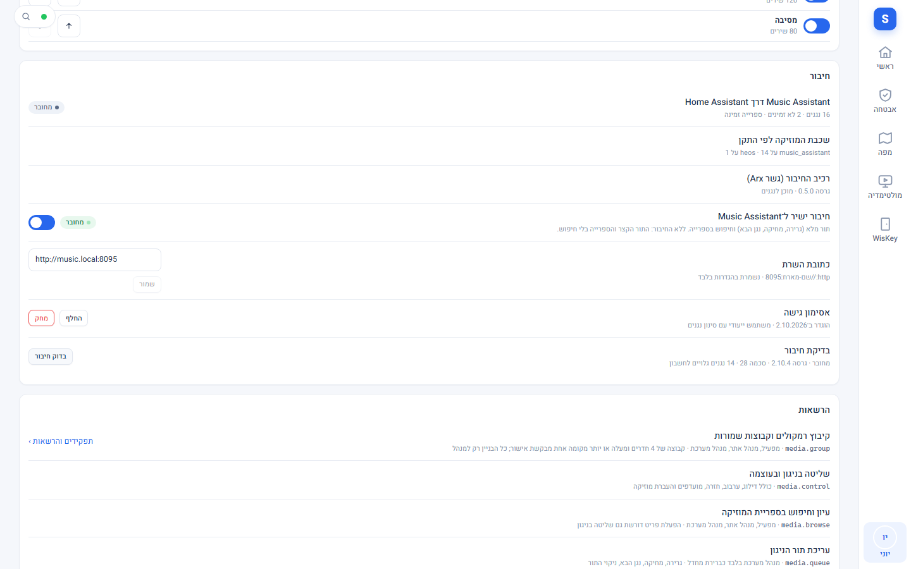
צילום מהדגמה. הכתובת שמוצגת היא דוגמה.הרשאות במסך
שורה אחת שמציינת אילו תפקידים מחזיקים media.group וקישור למסך התפקידים (ראו 81-roles_HE.md).
הרשאות
| הרשאה | מה היא נותנת | ברירת מחדל |
|---|---|---|
media.read - צפייה במסכים ובמולטימדיה | הכניסה, הכרטיסים, המצב, מה מנגן והשלט לקריאה (בהיקף) | צופה, מפעיל, עורך, מנהל אתר, מנהל מערכת (כמו devices.read; לא קיוסק) |
media.control - שליטה במסכים: עוצמה, מקשים וניגון | עוצמה, השתקה, מקשים, משטח מגע, ניגון, הקלדה | מפעיל, מנהל אתר, מנהל מערכת |
media.power - הדלקה וכיבוי של מסכים והחלפת מקור | הפעלה וכיבוי, מקור, אפליקציה ויציאת שמע | מפעיל, מנהל אתר, מנהל מערכת |
media.public - מסכים ציבוריים | החלפת מקור ואפליקציה והקלדה במסכים שסומנו ציבוריים | מנהל אתר, מנהל מערכת; רגישה - אינה מרומזת |
media.bulk - כיבוי מרוכז של מסכים | "כבה מסכים" בקומה ו"כבה הכל" באזור; "עצור מוזיקה" בקומה; קבוצה שכוללת את כל הבניין | מנהל אתר, מנהל מערכת; רגישה - אינה מרומזת |
media.layout - עריכת מסך המולטימדיה והשלט | פריסת הלשוניות (מסכים, נגנים, קבוצות), ברירת המחדל של השלט, התאמת שלט למסך, קבוצות שמורות ורשימת המועדפים | מנהל אתר, מנהל מערכת |
media.group - קיבוץ רמקולים וקבוצות שמורות | צירוף ופירוק של חדרים, עוצמת קבוצה והפעלת קבוצה שמורה (דורש גם media.control בכל חדר שבקבוצה; יצירת קבוצה שמורה דורשת media.layout) | מפעיל, מנהל אתר, מנהל מערכת |
media.browse - עיון וחיפוש בספריית המוזיקה | לשונית "ספרייה" בנגן: דפדוף לפי סוג וחיפוש (החיפוש דורש את החיבור הישיר). התחלת פריט נשארת media.control | מפעיל, מנהל אתר, מנהל מערכת |
media.queue - עריכת תור הניגון | הזזה, מחיקה, "נגן הבא" וניקוי של שורות בתור (דורש גם media.control; בקבוצה - גם בחדרי החברים). לא רגישה | מפעיל, מנהל אתר, מנהל מערכת |
- ההיקף: כל ההרשאות חלות בהיקף של המסך (קומה / אזור לפי המיקום של ההתקן הראשי). אזורים וקומות של תשתית המערכת אינם הקנה הרשאה בעצמם. הגדרות, אישור, איחוד, סימון ציבורי, פרופילים ומגברים מקושרים דורשים
system.configure. פריסה אישית דורשתscreen.personalize(הרשאה קיימת). - **
devices.controlו-ha.entity.controlאינם שולטים יותר במסך מנוהל. מרגע שמסך מאושר כאן, ההרשאות, מגבלות הקצב והיומן של המולטימדיה הם הסמכות היחידה שלו; ניסיון לשלוט בו מכרטיס התקן רגיל (למשל במפה) נדחה עם הודעה שההפעלה נעשית ממסך המולטימדיה. בשדרוג** תפקידים מותאמים שהחזיקוdevices.readמקבליםmedia.read, ומי שהחזיקdevices.controlמקבלmedia.controlו-media.power, כדי שאיש לא יאבד שליטה בטלוויזיה שהייתה לו.devices.control_bulkממשיך לכסות "כבה אזור" ו"כבה הכל בבניין" ב-חשמל והתקנים, אבל הפעם רק למסכים מאושרים שדולקים. - תפקיד מותאם "מפעיל מסכים" (להפעלה ושליטה בלי אישור או הרשאות רגישות): משתמשים והרשאות › תפקידים › "תפקיד מותאם חדש"; הרשאות רגילות: "צפייה במסכים ובמולטימדיה", "שליטה במסכים: עוצמה, מקשים וניגון", "הדלקה וכיבוי של מסכים והחלפת מקור". ללא הרשאות רגישות. משייכים בהיקף הקומה או המבנה. להוספת מסכים ציבוריים או כיבוי קבוצתי - מציינים אותן במפורש בין ההרשאות הרגישות (ראו
81-roles_HE.md).
הכרזות קוליות ושידור למסכים
בהגדרות › מולטימדיה יש שתי לשוניות נוספות, שתיהן כבויות כברירת מחדל:
- הכרזות קוליות (מנוע דיבור, שפה, רמקולים מורשים, מגבלת קצב, בדיקה, היסטוריה): מתגים ושלבי ההפעלה ב-
42-multimedia_HE.md. הרשאה:media.announce. - שידור למסכים (מתג ראשי, בדיקת כתובת המקור, מסכים מאושרים, מקסימום שידורים, משך ברירת מחדל, זרם ראשי, כיבוי אחרי עצירה, שידור בדיקה): ב-
42-multimedia_HE.md. הרשאה:media.cast. - שמירת היסטוריית פעילות (ימים) של חלונית פעילות ההתקן: 90 כברירת מחדל, בין 7 ל-365.
בדיקה מקדימה - scripts/media_probe.py
סקריפט שהבעלים או המתקין מריץ מהמחשב שלו מול מערכת שלו, קריאה בלבד: הוא שולח חמש פקודות קריאה בלבד (התחברות, רשימת מצבים, רישום ישויות, רישום התקנים ורשימת שירותים), לא קורא לשירות, לא נרשם לאירועים ולא כותב דבר במערכת. הפלט הוא מבנה בלבד: ספירות, קבוצות מפתחות, סוגי ערכים ורשימות סגורות - לעולם לא שם, מזהה, כתובת MAC, כתובת רשת, כתובת URL, מזהה או טוקן. לפני כתיבה הוא עוצר אם משהו נראה כמו כתובת או מזהה.
C:/cloude/smplwisebms/.venv/Scripts/python.exe scripts/media_probe.py <קובץ-env> --label home- קובץ הסביבה הוא שורות
שם=ערךעם כתובת המערכת (SW_PROBE_HA_URL) וטוקן ארוך טווח של מנהל (SW_PROBE_HA_TOKEN); רק שמות המשתנים מופיעים בשורת הפקודה. עם טוקן של משתמש רגיל רישומי ההתקנים נדחים והסקריפט מדווח על מצבי הישויות בלבד ואומר זאת. - הפלט נכתב רק אל
private-evidence/media-probe-<תאריך>-<תווית>/summary.json(תיקייה מחוץ לגיט) - קובץ אחד, בלי העתק גולמי.--labelמבדיל בין שתי מערכות;--no-writeרק מדפיס. - מה הוא עונה: אילו אינטגרציות רושמות כתובת MAC ומזהים ובאיזו צורה; כמה מכשירים פיזיים יוצאו מהישויות לפי כללי האיחוד (כלל אחרי כלל, כולל מה ש"כלל ההגנה" חסם והצעות שמות); איך כל אינטגרציה מדווחת מצב הפעלה, מצב אמנות, יציאת שמע ורשימות מקורות; מסכות התכונות המדויקות; ורשימת כפתורי ה-webOS.
- אפשר לשלוח לפיתוח את
summary.jsonכפי שהוא. הוא לא מכיל דבר פרטי; ועדיין כדאי להציץ בו לפני.
מגבלות - מה חשוב לדעת
- בגרסה זו רק מסכים. נגנים, רמקולים, קבוצות ושמע מוזיקלי מוכנים במודל אבל ללא מסך.
- אימות על מכשירים אמיתיים עדיין חסר למקש הכחול בסמסונג, לריצה קדימה ואחורה ולהקלדה ב-LG, למצב האמנות ולמצב ה"כבוי" של חלק מהדגמים, ולאילו אינטגרציות רושמות MAC. הבדיקה המקדימה והשלב הידני (איחוד וניתוק) נועדו לכך.
- ברישום של תשתית המערכת, שני התקנים עם אותה כתובת MAC בדרך כלל כבר מתאחדים בעצמם להתקן אחד; כלל ה-MAC של Arx תופס את השאר (פורמט שונה, התקנים ישנים, אינטגרציות שאינן רושמות MAC).
- מסך שלא אושר שהוא דולק אינו מכובה קבוצתית, גם אם הוא בפועל דולק. זו החלטה מכוונת.
- הכללים הבאים אינם הגדרות: אין מקש הפעלה, אין הדלקה אוטומטית בפתיחת השלט, אין תור ואין שליחה חוזרת, והגשר בודק כל פקודה מחדש.
הגדרות › אוטומציות (CR-017, 0.1.152)
כל אפשרות של האוטומציות, הסצנות והסקריפטים נמצאת בלשונית הזו בלבד; במסכי העבודה עצמם (ראו 43-automations_HE.md) אין הגדרות. הלשונית מוצגת למי שיש לו system.configure, והיא אינה נותנת הרשאת עריכה של אוטומציות. מי שאינו מורשה רואה "אין הרשאה". כפתור "שמור" מופיע בתחתית כשיש שינוי שלא נשמר ("ביטול" מחזיר לערכים השמורים).
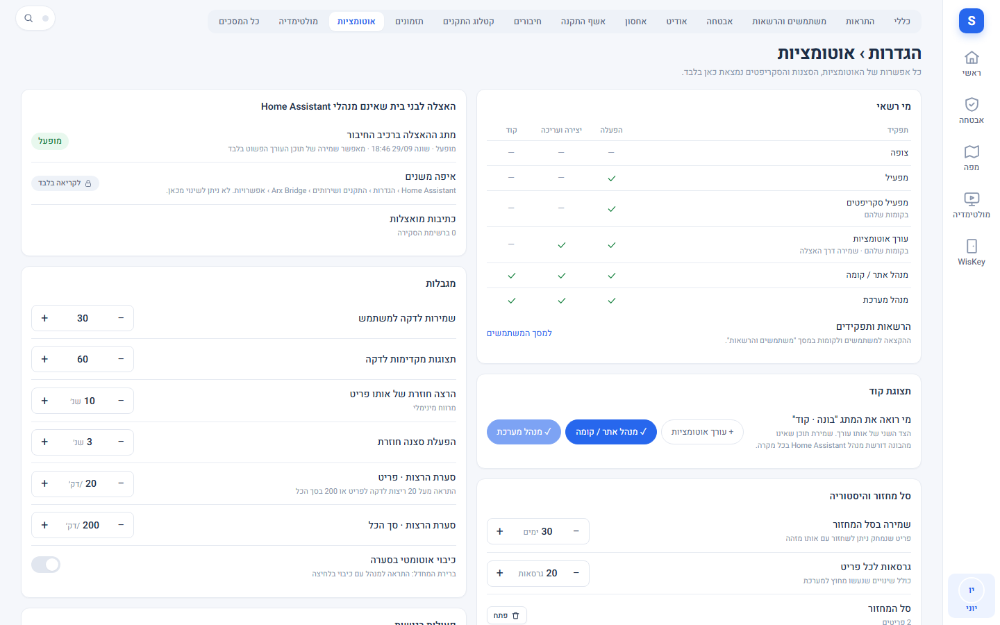
צילום מהדגמה.| כרטיס | מה בו |
|---|---|
| מי רשאי | מטריצה לקריאה בלבד: תפקיד × הפעלה / יצירה ועריכה / קוד. ההקצאה עצמה במסך "משתמשים והרשאות" (קישור "למסך המשתמשים"). פירוט ההרשאות בסוף הסעיף |
| האצלה לבני בית שאינם מנהלי Home Assistant | מצב המתג ברכיב החיבור (מופעל / כבוי, ומתי שונה), לקריאה בלבד - משנים אותו ב-Home Assistant › הגדרות › התקנים ושירותים › Arx Bridge › אפשרויות. כשהוא כבוי, מי שאינו מנהל ב-Home Assistant יכול להפעיל ולהשבית אך העורך נפתח לקריאה בלבד ("שמירה דורשת מנהל"). מופיע גם מספר "כתיבות מואצלות" ברשימת הסקירה. האצלה מאפשרת שמירה של תוכן העורך הפשוט בלבד |
| תצוגת קוד | אילו תפקידים רואים את המתג "בונה · קוד" בעורך (עורך אוטומציות, מנהל אתר / קומה; מנהל מערכת תמיד). שמירת תוכן שהבונה אינו מכיר דורשת מנהל ב-Home Assistant בכל מקרה |
| סל מחזור והיסטוריה | כמה ימים פריט שנמחק נשמר בסל (ניתן לשחזור), כמה גרסאות נשמרות לכל פריט (כולל שינויים שנעשו מחוץ למערכת), וכפתור "פתח" לסל |
| מגבלות | שמירות לדקה למשתמש, תצוגות מקדימות לדקה, מרווח מינימלי בין הרצות של אותו פריט (שניות), מרווח בין הפעלות חוזרות של אותה סצנה, סערת הרצות (התראה למנהל כשפריט אחד רץ יותר מ-N פעמים בדקה, או כולם יחד יותר מ-M) וכיבוי אוטומטי בסערה (ברירת מחדל: כבוי - רק התראה עם כיבוי בלחיצה) |
| פעולות רגישות | אזעקה, מנעולים, דלתות, שערים וצופרים מותרים באוטומציות כמו כל פעולה, ועוברים את אותן בדיקות הרשאה כמו שליטה ידנית; קודים לעולם אינם נשמרים. כאן קובעים אם מוצג צ'יפ אזהרה על צעד רגיש (צהוב או אדום) וקובעים יעדי התראה מאושרים - רק אליהם אפשר לשלוח התראה מתוך אוטומציה |
| גלריית תבניות | הפעלה וכיבוי של הגלריה שנפתחת ב"חדש", והצגה, הסתרה וסדר של כל תבנית |
| הצגה | מסנן בטלפון (מקופל - כפתור "סינון" אחד, או שורות), ומתג "+ חדש" אחד ששואל "מתי?" ("בשעות קבועות" פותח תזמון חדש, "כשמשהו קורה" פותח את הבונה; כבוי = לכל לשונית הכפתור שלה) |
| מצב | גרסת Home Assistant וזמינות ממשק התצורה שלו, גרסת Arx Bridge (והגרסה הנדרשת), סנכרון אחרון, ומתג "האוטומציות במוצר" - כיבוי מסתיר את הלשונית לכולם |
| סקירה | פריטים שדורשים תשומת לב עם סיבה לכל אחד ("פעולה רגישה שונתה מחוץ למערכת", "רצה בתדירות חריגה", "שגיאה בהגדרה", "מכשיר חסר", "ליוצר אין עוד הרשאה", "ערכים חסויים", "נשמרה בהאצלה", "לא נטענה") וקישור לפריט |
הרשאות (מי רשאי מה):
| הרשאה | מה היא נותנת | ברירת מחדל |
|---|---|---|
automation.manage - יצירה, עריכה, הפעלה/השבתה, הרצה ומחיקה של אוטומציות | אין גישת צפייה בלבד: בלי ההרשאה האוטומציות אינן נראות כלל (גם לא ברשימה, בהתראות או בקישור ישיר) | מנהל אתר, מנהל מערכת. רגישה - אינה מרומזת |
scene.manage - יצירה, צילום ועריכה של סצנות | הוספה ועריכה של סצנות שנוצרו ב-Arx. הפעלת סצנה אינה דורשת אותה - ראו להלן | מנהל אתר, מנהל מערכת. רגישה |
script.run - הפעלת סקריפטים | הרצת סקריפט והפסקתו | מנהל אתר, מנהל מערכת |
script.manage - יצירה ועריכה של סקריפטים | הוספה ועריכה של סקריפטים (כולל הרצה) | מנהל אתר, מנהל מערכת. רגישה |
automation.code_view - תצוגת קוד בעורך | המתג "בונה · קוד" | מנהל אתר, מנהל מערכת (ניתן להגדרה בכרטיס "תצוגת קוד"). רגישה |
- סצנה מופעלת על ידי מי שמורשה לשלוט בהתקנים שבסצנה (
devices.controlאוha.entity.control, בהיקף של כל חבר בסצנה). - היקף: כל ההרשאות חלות בהיקף הקומות והאזורים של המשתמש. פריט מוצג רק אם כל המכשירים שהוא משנה בהיקף שלו.
- מה שנעשה בפועל בצעד רגיש: מי ששומר, מי שמריץ ומי שמפעיל חייב להחזיק את הרשאת השליטה הידנית המתאימה (למשל שחרור דלת, נטרול אזעקה) במכשיר הזה. מי שאינו רשאי לפתוח את הדלת ממסך ההתקן, אינו רשאי ליצור אוטומציה שפותחת אותה.
- תפקיד לבני בית (הצעה בתיעוד): תפקיד מותאם "מפעיל סקריפטים" =
script.run+ שליטה בהתקנים, בהיקף הקומות שלהם; "עורך אוטומציות" מוסיףautomation.manageו-scene.manageבאותו היקף. שמירה על ידי מי שאינו מנהל ב-Home Assistant דורשת גם את מתג ההאצלה.
הגדרות › מסכי קיר, גנרטור ו-Frigate
- מסכי קיר: משתמש קיר לטאבלט קבוע, פרופיל תצוגה, התראות ומסגרת תמונות -
45-wall-mode_HE.md. - תשתיות › גנרטור: זיהוי, מיפוי חיישנים, ספים, שמירה וניתוב התראות (מתחיל ריק) -
44-generator_HE.md. - מקליט Frigate (חיבורים; מופיע רק כשהמתקין הפעיל אותו בשרת) ו"שינויים ב-Frigate" (שישה סוגי פעולה, כולם כבויים) -
33-frigate_HE.md.
לשונית "בריאות ועבודות"
מציגה כרטיס נפרד לכל תת-מערכת (NVR, go2rtc, גשר HA, קליטת אירועים, מאגר) עם סטטוס ירוק (עובד), ענבר (לא מוגדר/ממתין) או אדום (נכשל, עם הסיבה), בתוספת האחסון שה-add-on משתמש בו והגיבוי האחרון, ותור עבודות עם התקדמות. "בדוק עכשיו" בודק שוב את ה-NVR וה-go2rtc (בדיקות מכשירים נשמרות ל-TTL קצר; זרמים זרים ב-go2rtc לעולם לא נבדקים/נוגעים). תצוגה בלבד לכולם — אין כאן שדות לעריכה.
לשונית "גיבוי ושחזור"
| פעולה | משמעות | מי רשאי |
|---|---|---|
| "צור גיבוי" | כותב zip עם נתוני הפרויקט (אתרים/מבנים/קומות/תוכניות/גרסאות/סיכות/מצלמות/חדרים/אזורים/הגדרות; משתמשים והרשאות נכללים אך משוחזרים רק לפי דרישה); הערה אופציונלית | מנהל מערכת |
| גיבויים אוטומטיים | לפני כל שדרוג גרסה (5 אחרונים נשמרים) ואחד ביום (7 אחרונים) | אוטומטי |
| "שחזר" | טעינת גיבוי אחרי הקלדת RESTORE בדיוק; מצב החלפה (מחליף את נתוני הפרויקט הנוכחיים) או מיזוג (רק פריטים חסרים); היקף כולל גישה (משתמשים/הרשאות) הוא בחירה נפרדת | מנהל מערכת |
| העלאת קובץ גיבוי | מאפשר לשחזר מגיבוי שהורד למחשב או הגיע מהתקנה אחרת | מנהל מערכת |
| מחיקת גיבוי | מסיר קובץ גיבוי מהרשימה | מנהל מערכת |
גיבויים לעולם אינם מכילים אישורי NVR או HA (אלה נשארים באפשרויות ה-add-on) ולעולם לא וידאו. המנהל שמבצע שחזור שומר על הגישה שלו; השחזור עצמו מבוקר.
לשונית "תמיכה"
מציגה פרטי גרסה ומידע לתמיכה, ומאפשרת יצירת "חבילת תמיכה מצונזרת" (לוגים/מצב בלי סודות) לשליחה למפתחים.
שים לב
- שינוי
ai.providerל-externalנדחה תמיד — אין ספק ניתוח חיצוני מובנה, קיים רק חוזה המתאם; ניתן לבחור רקnoneאוlocal. - כל שינוי הגדרה (
PATCH /settings) נכתב ביומן הביקורת כ-settings.updateעם השדות שהשתנו בלבד — לעולם לא סודות (מפתחות API, אישורי NVR/WisKey/go2rtc). - שעון ה-NVR (0.1.146). ה-NVR מדווח את שעון הקיר שלו (עם שעון קיץ) מתויג בהיסט הסטנדרטי, ולכן קריאה מילולית נראתה בקיץ כסטייה של שעה (+3599 שניות). עכשיו השעון נקרא לפי אזור הזמן של ההתקנה, וב-הגדרות › חיבורים › "מערכת ה־NVR" ובאשף ההתקנה אין יותר סטייה מדומה. "סנכרן לשעון השרת עכשיו" (דורש
nvr.config.time) כותב באותה צורה וקורא את השעון בחזרה; אם ההתקן עדיין סוטה ביותר מ-2 דקות מוצגת הודעה ("אחרי הסנכרון שעון ה־NVR סוטה...",clock_verify_failed, נרשם ביומן). כתיבת השעון הזו עדיין לא נוסתה על התקן אמיתי. openai_api_key, פרטי חיבור NVR/go2rtc/WisKey — לא בהגדרות אלה; הם באפשרויות ה-add-on עצמו ב-Home Assistant (Configuration).
 צילום מהמערכת החיה.
צילום מהמערכת החיה.
 צילום מהמערכת החיה.
צילום מהמערכת החיה.
 צילום מהמערכת החיה.
צילום מהמערכת החיה.
 צילום מהמערכת החיה.
צילום מהמערכת החיה.
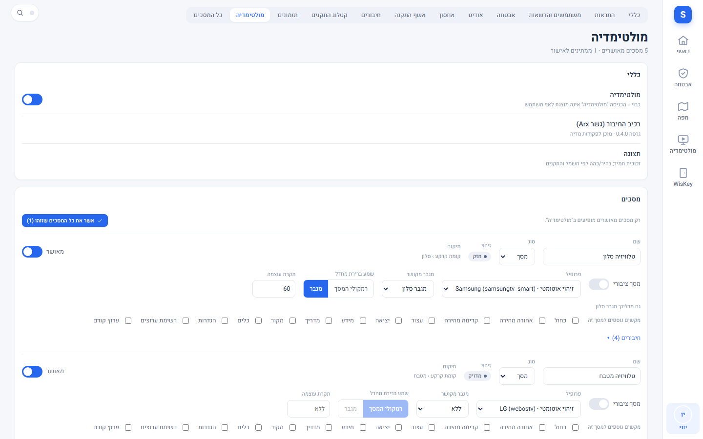
צילום מהדגמה.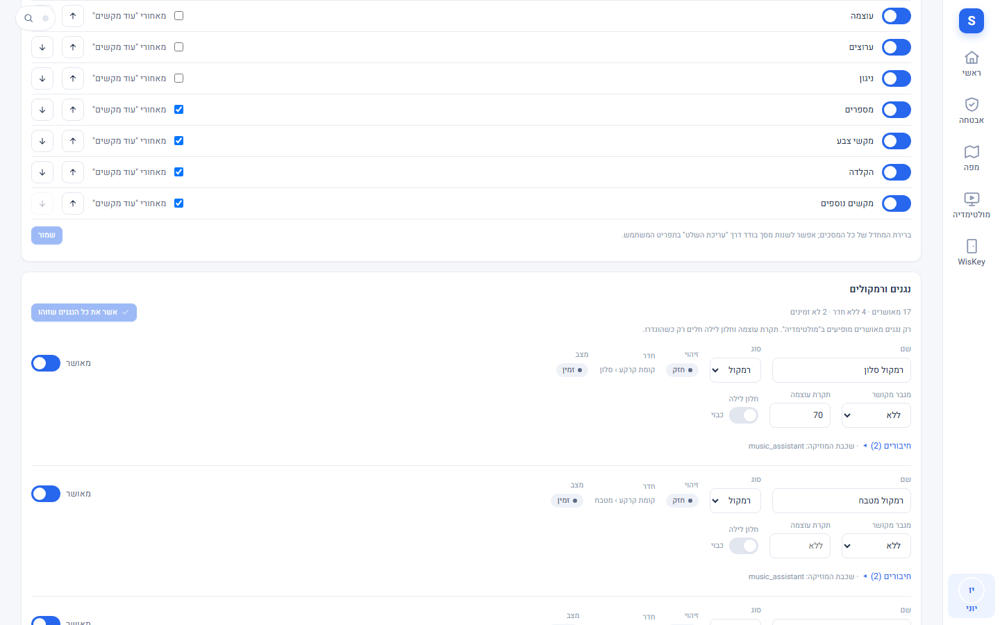
צילום מהדגמה.צילום מהדגמה.
 צילום מהמערכת החיה.
צילום מהמערכת החיה.
צילום מהמערכת החיה.
 צילום מהמערכת החיה.
צילום מהמערכת החיה.
משתמשים והרשאות
מה זה
מסך "משתמשים והרשאות" (מערכת ← משתמשים והרשאות) הוא מקום ניהול הזהות והתפקידים: חמש לשוניות — משתמשים, קבוצות, תפקידים, הרשאות אפקטיביות, אודיט הרשאות. משתמשים עצמם מגיעים רק מ-Home Assistant — אינטגרציית הגשר דוחפת את ספריית המשתמשים (id, שם, username, פעיל, דגל מנהל, קבוצות) כל דקה. איש לא נוצר כאן, אין סיסמאות כאן, ודגל "מנהל HA" מוצג כמידע בלבד ולא מקנה שום דבר במוצר.
איך אני… (מנהל מערכת / מנהל אתר — לשונית משתמשים)
- רואה את כל המשתמשים. טבלה עם שם, מצב (פעיל/מושבת ב-HA), מנהל HA (מידע בלבד — לא תפקיד VMS), סנכרון (מתי הספרייה עודכנה מ-HA לאחרונה), תפקיד/היקף.
- מסנכרן ידנית. "סנכרון משתמשים מ-HA" מבקש דחיפה מיידית מהאינטגרציה במקום לחכות לדקה הבאה.
- **משייך תפקיד (
rbac.assign).** בוחרים תפקיד + היקף (כל ההתקנה / אתר / מבנה / קומה) למשתמש או לקבוצת VMS. "שמור שיוך" כותב ומבוקר עם diff לפני/אחרי; "ביטול שיוך" מסיר. - מבין מה קורה כשמשתמש מושבת ב-HA. הגישה נלקחת בדחיפת הספרייה הבאה (עד 60 שניות): בקשות חדשות נדחות, שקעי live/playback פתוחים נסגרים תוך שניות, האודיט שומר את ה-id. מנהל VMS פעיל אחרון לעולם לא מוסר רק בגלל שדחיפה השמיטה אותו (last-admin guard).
איך אני… (קבוצות, T082)
- יוצר קבוצה ("קבוצה חדשה", למשל "עורכי קומה 2") ומוסיף לה חברים.
- משייך תפקיד לקבוצה שלמה — כל חבר יורש את השיוך; ההרשאה האפקטיבית של משתמש היא איחוד השיוכים שלו עצמו ושל כל הקבוצות שהוא חבר בהן.
- רואה תצוגה מקדימה של השפעה לפני שמירה — לכל שינוי שיוך/חברות, המערכת מציגה מראש איזה משתמשים מושפעים.
- מחיקת קבוצה נדחית כל עוד יש בה חברים או שיוכים.
איך אני… (האצלה למנהל אתר, T082)
- **מנהל אתר עם
rbac.assignמואצל יכול לשייך תפקידים בתוך האתר שלו בלבד, בכפוף לארבע מגבלות: (א) רק תפקידים ברשימת ההיתר של האצלה (נערכת בלשונית תפקידים; ברירת מחדל viewer/operator/editor/kiosk, בתוספת תפקידים מותאמים אישית שסומנו "ניתן להאצלה"); (ב) רק תפקידים שההרשאות שלהם הוא עצמו מחזיק באותו היקף; (ג) רק למשתמשים בודדים, לעולם לא לקבוצות; (ד) לעולם לא תפקיד עם הרשאת מערכת**. חריגה מכל אחת נדחית עם סיבה (role_not_delegable,delegation_escalation,delegation_groups) ומבוקרת. - דנייה (deny) על משתמש נשארת כלי של הרשאה מלאה בלבד — מנהל אתר מואצל לא יכול ליצור או להסיר deny.
- סמכות מלאה (הענקת
system_adminלדוגמה) דורשת גםrbac.assignוגםrbac.roles.manageברמת ההתקנה — לא מספיק להחזיק אחת מהן.
איך אני… (לשונית תפקידים, מנהל מערכת)
- בונה תפקיד מותאם אישית מהרשאות רגילות בתוספת הענקות רגישות שיש לסמן במפורש (למשל
door.unlock,alarm.disarm,access.people.manage,access.cards.capture,devices.control_bulk). תפקיד מותאם אישית לעולם לא נושא הרשאת מערכת (ניהול תצורה/תפקיד/ קישור); תפקידים מובנים (viewer/operator/editor/kiosk/site_admin/system_admin) אינם ניתנים לעריכה. - לפני שמירה, דיאלוג מציג את ההשפעה (קישורים, משתמשים, קבוצות, היקפים, הרשאות שנוספו/הוסרו). השינוי חל על כל סשן מושפע בבקשתו הבאה; עריכה מיושנת נדחית (revision); תפקיד שעדיין מקושר לא ניתן למחיקה.
- מסמנים תפקיד "ניתן להאצלה" כדי שמנהל אתר יוכל לשייך אותו בעצמו.
איך אני… (לשונית הרשאות אפקטיביות והרשאות מיוחדות בהיקף WisKey)
- "הרשאות אפקטיביות" מחשבת בצד השרת מה משתמש נתון באמת רשאי לעשות בהיקף נתון — בלי התחזות (impersonation), רק חישוב.
- הרשאות WisKey הרגישות:
access.read(viewer ומעלה) — צפייה בלבד;access.release(site_admin/system_admin) — שחרור דלת, מענה/דחייה/ניתוק, הכרזות;access.people.manage(site_admin/system_admin) — עורך האנשים;access.cards.capture(site_admin/system_admin, בנוסף ל-people.manage) — קליטת כרטיס. כדי לתת למישהו רק עריכת אנשים בלי כל תפקיד מנהל אתר — בונים תפקיד מותאם אישית שמפרט אתaccess.people.manageבין הרשאותיו הרגישות.
הרשאות התזמונים (CR-014)
שלוש הרשאות חדשות: schedule.view (צפייה בתזמונים), schedule.manage (ניהול תזמונים - רגישה, אינה מרומזת) ו- schedule.sensitive (תזמון אזעקה, מנעולים, דלתות ושערים - רגישה, אינה מרומזת). ברירת מחדל: מנהל אתר - צפייה וניהול בהיקפו; מנהל מערכת - שלושתן; אחרים - אין. לעורך תזמונים בלבד בונים תפקיד מותאם "עורך תזמונים" (הרשאות רגילות: צפייה בתזמונים, צפייה בחשמל והתקנים, שליטה בהתקן בודד; רגישה: ניהול תזמונים) ומשייכים אותו בהיקף הרצוי. כדי לערוך תזמון צריך גם שליטה בכל ההתקנים שבו. המתכון המלא, כלל ההיקף והמגבלות ב-80-settings_HE.md (הגדרות › תזמונים).
הרשאות האוטומציות, הסצנות והסקריפטים (CR-017)
חמש הרשאות (פירוט, ברירות מחדל והסבר בעמוד 43-automations_HE.md ו-80-settings_HE.md › אוטומציות): automation.manage (יצירה, עריכה, הפעלה/השבתה, הרצה ומחיקה של אוטומציות - רגישה, אינה מרומזת; אין הרשאת צפייה בלבד), scene.manage (יצירה, צילום ועריכה של סצנות - רגישה), script.run (הפעלת סקריפטים), script.manage (יצירה ועריכה של סקריפטים - רגישה) ו-automation.code_view (המתג "בונה · קוד" - רגישה). ברירת מחדל: מנהל אתר ומנהל מערכת. הפעלת סצנה אינה הרשאה נפרדת אלא שליטה בהתקנים של הסצנה. תפקיד מותאם מקבל הרשאה רגישה רק אם ציין אותה במפורש בין ההרשאות הרגישות שלו. כל ההרשאות בהיקף הקומות והאזורים, ושינוי של צעד רגיש דורש את הרשאת השליטה הידנית המקבילה.
הרשאות המולטימדיה (CR-015, CR-016)
שבע הרשאות מכסות את מסכי הטלוויזיה והשלט ואת הנגנים, הרמקולים והקבוצות (ראו 42-multimedia_HE.md):
| הרשאה | תווית | רגישה |
|---|---|---|
media.read | צפייה במסכים ובמולטימדיה | לא |
media.control | שליטה במסכים: עוצמה, מקשים וניגון | לא |
media.power | הדלקה וכיבוי של מסכים והחלפת מקור | לא |
media.public | מסכים ציבוריים: החלפת מקור ואפליקציה והקלדה | כן - אינה מרומזת |
media.bulk | כיבוי מרוכז של מסכים בקומה או באזור, עצירת מוזיקה בקומה וקבוצה לכל הבניין | כן - אינה מרומזת |
media.layout | עריכת מסך המולטימדיה והשלט, קבוצות שמורות ורשימת המועדפים | לא |
media.group | קיבוץ רמקולים וקבוצות שמורות: צירוף ופירוק חדרים, עוצמת קבוצה והפעלת קבוצה שמורה (דורש גם media.control בכל חדר) | לא |
שתי הרשאות נוספות (שלב 2ב של CR-016) קשורות לנגן עם החיבור הישיר לשרת המוזיקה: media.browse (עיון וחיפוש בספריית המוזיקה) ו-media.queue (עריכת תור הניגון: הזזה, מחיקה, "נגן הבא" וניקוי; דורשת גם media.control). שתיהן אינן רגישות, וברירת המחדל: מפעיל, מנהל אתר ומנהל מערכת. תפקיד מותאם מקבל אותן רק אם ציין אותן.
ברירת מחדל: צופה, מפעיל, עורך, מנהל אתר ומנהל מערכת - צפייה (כמו צפייה בחשמל והתקנים; לא קיוסק); מפעיל, מנהל אתר ומנהל מערכת - שליטה והפעלה וקיבוץ; מנהל אתר ומנהל מערכת - מסכים ציבוריים, כיבוי מרוכז ועריכה. כולן בהיקף של המסך (קומה או אזור לפי המיקום של ההתקן הראשי שלו). תפקיד מותאם מקבל את שתי הרגישות רק אם ציין אותן במפורש בין ההרשאות הרגישות שלו, ולכן "מפעיל מסכים" רגיל אינו יכול להחליף מקור במסך ציבורי ואינו מכבה קבוצתית. הגדרות, אישור מסכים, איחוד ופיצול, סימון ציבורי, פרופילים ומגברים מקושרים דורשים system.configure; פריסה אישית של מסך המסכים דורשת screen.personalize.
שליטה מהכרטיסים הישנים: devices.control ו-ha.entity.control אינם שולטים יותר במסך שאושר בהגדרות (סמכות אחת). בשדרוג, תפקידים מותאמים שהחזיקו צפייה בחשמל והתקנים מקבלים צפייה במסכים, ומי שהחזיק שליטה בהתקנים מקבל שליטה והפעלה במסכים. המתכון ל"מפעיל מסכים", ההיקף ופירוט המגבלות - ב-80-settings_HE.md (הגדרות › מולטימדיה).
הרשאות חדשות בגרסאות 2.x
| הרשאה | מה היא מאפשרת | ברירת מחדל |
|---|---|---|
analytics.review | מסך הסקירה של מקליט Frigate וסימון "נסקר" אישי | מפעיל ומעלה |
analytics.control, analytics.record_control, analytics.profile, analytics.events | סוגי הפעולה ב-Frigate (ראו 33-frigate_HE.md); רגישות | מנהל אתר, מנהל מערכת |
media.announce | הכרזה קולית ברמקולים מורשים; רגישה | מנהל אתר, מנהל מערכת |
media.cast | שידור מצלמה למסך מורשה | מפעיל ומעלה |
generator.view / generator.manage | צפייה והתראות בגנרטור / הגדרות וניהול | מפעיל ומעלה / מנהל אתר ומערכת |
wall.view | ממשק מסך הקיר (תפקיד kiosk) | תפקיד kiosk |
presence.report | דיווח נוכחות מאפליקציית הטלפון | כל התפקידים הרגילים |
אימות דו-שלבי אינו הרשאה אלא הגדרה אישית של כל משתמש ומדיניות של מנהל (82-second-factor_HE.md).
איך אני… (לשונית אודיט הרשאות)
- "יומן אודיט" (מערכת ← יומן אודיט) מציג שורה לכל פעולה מורשית/נדחית: זמן, משתמש, פעולה, משאב, החלטה (allowed/denied — כולל הסיבה), תפקיד/היקף ששימשו. שורות נשמרות
audit.retention_days(ברירת מחדל 365 יום).
שים לב
- כל שינוי שיוך, קבוצה או תפקיד מקדם גרסת הרשאה (revision) ונכנס לתוקף מיד; עריכה על גרסה מיושנת נדחית, לא דורסת בשקט.
- כל שינוי שיוך/חברות בבאצ' (
POST /access/bindings/bulk, עד 50 פריטים) הוא all-or-nothing — הפריט הראשון שנדחה עוצר את כל הבקשה עם האינדקס וה-id שלו. - אף כתיבת שיוך/חברות לא יכולה להשאיר את ההתקנה בלי מנהל מערכת פעיל אחד לפחות (409
last_admin), כולל deny על עצמך. - הרשאות אמיתיות תמיד נבדקות בצד השרת על המשאב עצמו — מצלמה נגישה רק דרך קומה שהמשתמש רשאי לראות, ומניעה מפורשת בקומה סופית אפילו למשתמש כל-ההתקנה.
 צילום מהמערכת החיה.
צילום מהמערכת החיה.
 צילום מהמערכת החיה.
צילום מהמערכת החיה.
אימות דו-שלבי והורדת אפליקציית Android
מה זה
שני דברים שנוגעים לכניסה מרחוק (דרך כתובת הגישה מרחוק של האתר):
- אימות דו-שלבי רשות. מי שנרשם מקליד, בכניסה מרחוק חדשה, גם קוד בן 6 ספרות מאפליקציית אימות (Google Authenticator וכדומה)
- אחרי הסיסמה.
- הצעת הורדה לאפליקציית Android במסך הכניסה, למי שנכנס מטלפון Android.
שניהם כבויים או רשות כברירת מחדל. בלי פעולה של משתמש או מנהל, כניסה מרחוק נראית בדיוק כמו קודם.
איך אני… (כל משתמש)
הפעלת אימות דו-שלבי
- פותחים את תפריט המשתמש (האווטאר) › החשבון שלי › אימות דו-שלבי (בכניסה מרחוק).
- לוחצים הפעלה. מופיע קוד QR ומתחתיו מפתח להקלדה.
- באפליקציית האימות במכשיר סורקים את ה-QR, או מקלידים את המפתח.
- מקלידים את הקוד בן 6 הספרות שהאפליקציה מציגה ולוחצים אישור. מופיע "האימות הדו-שלבי הופעל".
מעכשיו, כניסה מרחוק חדשה (דפדפן או מכשיר שלא מחוברים) מבקשת: סיסמה, ואז קוד. כניסה שכבר פתוחה ממשיכה בלי לשאול שוב.
כיבוי
באותו מקום: כיבוי. מכבים רק כשמוכנים: זה מסיר את ההגנה הנוספת מהחשבון.
כשמקלידים קוד
- קוד שכבר נעשה בו שימוש נדחה: ממתינים לקוד הבא (מתחלף כל חצי דקה).
- אחרי 5 קודים שגויים הכניסה ננעלת זמנית. זו הגנה, לא תקלה: ממתינים ומנסים שוב.
איך אני… (מנהל מערכת)
- מדיניות. הגדרות › גישה מרחוק › "אימות דו-שלבי מאפליקציה":
- רשות (ברירת מחדל): כל משתמש מחליט בעצמו.
- חובה למנהלים: כניסה מרחוק של מנהל שלא הפעיל אימות נדחית עד שיפעיל. כדי שלא ינעלו מנהלים מחוץ למערכת, ודאו שכל מנהל נרשם לפני שמשנים לכאן.
(בשורה נפרדת באותו מסך קיימת גם הגנה "אימות דו-שלבי למנהלים" של תשתית המערכת: אלה שני מנגנונים שונים.)
- איפוס למשתמש שאיבד את האפליקציה. הגדרות › משתמשים והרשאות › המשתמש › אימות דו-שלבי › איפוס. הפעולה נרשמת ביומן הביקורת; אחריה המשתמש נכנס בלי קוד ויכול להירשם מחדש.
- הצעת הורדה לאפליקציית Android. הגדרות › גישה מרחוק › כרטיס "הורדת אפליקציית Android":
- כתובת הורדה - https בלבד. ריק = הקישור לא מוצג כלל.
- תווית גרסה ו-SHA-256 - לא חובה; מוצגים ליד הקישור כדי לאמת את הקובץ.
הקישור מוצג במסך הכניסה מרחוק רק במכשירי Android, ורק מחוץ לאפליקציה עצמה.
מגבלות — כנות מלאה
- אפליקציית ה-Android הנוכחית היא בניית ניסוי (debug) ואינה מיועדת להפצה. אל תגדירו כתובת הורדה עד שתהיה בניית שחרור חתומה. עד אז השדה נשאר ריק.
- האימות הדו-שלבי חל על כניסה מרחוק בלבד: לא על הלוח המקומי, ולא על אישור מחדש לפעולות רגישות (זה שלב עתידי).
- אין קודי שחזור: כשהאפליקציה אבדה, הדרך חזרה היא איפוס על ידי מנהל.
- נבדק מול מערכת בדיקה ופענוח קודים בתוכנה; לא נבדק עם אפליקציית אימות פיזית שסורקת את ה-QR.
- קישור ההורדה נבדק מול דמויות בלבד.
שים לב
- הסוד של האימות נשמר מוצפן ולא מוצג שוב אחרי ההרשמה.
- הרשמה, כיבוי ואיפוס נרשמים ביומן הביקורת, בלי הקודים עצמם.
התראות
מה זה
מרכז ההתראות הוא המקום האחד שבו מגיעות כל ההתראות של Arx: דליפת מים, עשן, אזעקה, צלצול בדלת, דלת שנשארה פתוחה, מצלמה או מקליט שנפלו, גיבוי שנכשל, תזמון שלא בוצע, התראות מחוקים ועוד. הוא נפתח מהפעמון התראות בתפריט המשתמש (האווטאר), ואותן התראות מגיעות גם כהתראות Push לטלפון ולמחשב, גם כש-Arx סגור, וחלקן גם בדואר אלקטרוני (לתקלות מערכת וגיבויים).
צילום מהדגמה.
צילום מהדגמה.
כללים שכדאי להכיר:
- כל אחד מקבל רק מה שהוא רשאי לראות. התראה על מטבח מגיעה למי שרואה את המטבח, התראה על מצלמה למי שרואה אותה, התראה על המערכת למנהלים. ההרשאה נבדקת כשההתראה נוצרת, בכל שליחה ובכל קריאה של הרשימה: מי שההרשאה שלו הוסרה לא רואה גם את ההתראות הישנות.
- אין העדפות אישיות. מה נשלח, למי, בכמה ערוצים ומתי לשתוק - מגדיר מנהל בלשונית מערכת ← התראות (בהמשך). למשתמש נשארים שלושה דברים בלבד: נקרא / לא נקרא, השתק לשעה, ואישור.
- "פתח דלת" אף פעם לא פותח דלת לבד. בהתראת צלצול הכפתור פותח רק חלון אישור בתוך Arx, למשתמש מחובר שיש לו הרשאה לפתוח את הדלת. רק לחיצה על האישור שולחת את הפקודה. טלפון לא נעול אינו זיהוי של אדם, ולכן אין פתיחה ישירות מתוך ההתראה.
- ההתראה עצמה קצרה. על המסך הנעול רואים סוג ומקום ("דליפת מים · מטבח"), בלי תמונה ובלי שם של אדם. התמונה והפרטים נפתחים רק בתוך Arx, אחרי כניסה.
איך אני… (כל משתמש)
- פותח את המרכז. האווטאר ← התראות. המספר ליד השם הוא כמות ההתראות שלא נקראו, ונקודה אדומה על האווטאר אומרת שיש התראה קריטית פתוחה. בדסקטופ המרכז נפתח כחלונית בצד, ובטלפון כגיליון מלמטה.
- קורא ומסנן. ההתראות מסודרות לפי יום, החדשה למעלה. התראה קריטית של בטיחות שעוד לא אושרה ולא נפתרה נעוצה בראש הרשימה. ×5 אומר שאותה תקלה חזרה חמש פעמים ואוחדה לשורה אחת. המסננים: הכל, לא נקראו, קריטי, ומקור (בטיחות, התראות, דלתות, תקלות בהתקנים, אוטומציות, מערכת, אבטחה). הכל נקרא מסמן את כולן.
- פותח התראה. לחיצה על שורה מציגה מה קרה, איפה, מתי (ראשונה ואחרונה), המצב, שורת המסירה אליכם ("נשלח לטלפון 14:02" / "לא נשלח · שעות שקט" / "המסירה נכשלה") ובהתראה קריטית גם את ציר ההסלמה. בהתראה על מצלמה אפשר לראות את התמונה - בתוך Arx בלבד.
צילום מהדגמה.
- משתיק. השתק לשעה, או עד הבוקר בפירוט, מסתירים את ההתראה מספירת "לא נקראו" ומשתיקים שליחה חוזרת שלה - רק לכם. כל משתמש אחר ממשיך לקבל אותה.
- מאשר. אישור (בתפריט השורה ובפירוט, למי שמותר לו) מסמן שמישהו טיפל, עוצר את ההסלמה ונראה לכולם עם שם המאשר. התראה על תקלה שעדיין נמשכת נשארת רשומה כמאושרת עד שהתקלה נפתרת. התראה שחוק העלה נרשמת גם בחקירה ← חוקים והתראות, ואישור באחת משתי הרשימות מאשר גם את השנייה.
- פותח את ההתקן. בתפריט השורה, פתח את המצלמה / פתח את ההתקן וכו' מעבירים ישירות למסך הנכון.
- פותח דלת מתוך צלצול. בהתראת צלצול יש גם פתח דלת. הלחיצה פותחת חלון "האם אתה בטוח שברצונך לפתוח את ...?". ביטול או Escape סוגרים בלי לשלוח דבר; פתח דלת שולח את הפקודה בנתיב הרגיל של פתיחת דלת, עם האימות הנוסף, ההגבלות והרישום ביומן הביקורת שלו - ובו מצוין שהפתיחה התחילה מהתראה. למי שאין הרשאת פתיחה אין כפתור.
צילום מהדגמה.
- מקבל התראות Push בטלפון או במחשב. מתקינים את Arx כאפליקציה (שלב 9), ואז האווטאר ← החשבון שלי ← הגדרות התראות ← הפעלת התראות במכשיר הזה, ומאשרים את בקשת הדפדפן. שליחת התראת בדיקה שולחת התראה לכל המכשירים שלכם (עד 3 בדקה). ההרשמה היא של המכשיר הזה בלבד; המכשירים שלי מציג את כולם (עד 10) ומאפשר להסיר. מה יישלח אליו - החלטת המנהל, ולכן אין כאן בחירת סוגי התראות.
- מתקין את Arx כאפליקציה. באנדרואיד (Chrome) ובמחשב (Chrome / Edge) מופיע בתחתית המסך הכרטיס התקן את Arx; לוחצים התקנה. לא עכשיו מסתיר אותו לשבועיים. באייפון ובאייפד: ב-Safari שיתוף ← הוספה למסך הבית, ופותחים את Arx מהאייקון - באייפון ובאייפד התראות מגיעות רק לאפליקציה שהותקנה כך (iOS 16.4 ומעלה).
- לוחץ על התראת Push. Arx נפתח ישירות על ההתראה (אחרי כניסה, אם צריך). בהתראה יש בדפדפנים שתומכים בכך גם אישור והשתק לשעה, ובצלצול פתח דלת - שפותח את חלון האישור בלבד, כמו בשלב 7.
איך אני… (מנהל: הרשאת "ניהול התראות")
הלשונית מערכת ← התראות מופיעה במלואה למי שיש לו את ההרשאה ניהול התראות (למנהל מערכת היא קיימת כברירת מחדל; אפשר לתת אותה לתפקיד מותאם - ראו 81-roles_HE.md). מי שאין לו אותה רואה בלשונית רק את רישום המכשיר שלו (שלב 8 למעלה). כל אפשרות של ההתראות יושבת כאן ורק כאן, בשמונה מדורים לפי הסדר. כל שינוי נשמר מיד ונרשם ביומן הביקורת (שמות השדות בלבד).
צילום מהדגמה.
צילום מהדגמה.
- מקורות והרשאות - מה נשלח. טבלה של כל המקורות, מקובצים לפי סוג. לכל מקור: פעיל, חומרה (מידע / התראה / קריטי), מי מקבל (כל מי שרואה / מנהלים / היוזם או בעל החשבון / משתמשים נבחרים) וערוצים: מרכז ההתראות (תמיד פעיל), דחיפה, דוא"ל, ושני ערוצים עתידיים (אפליקציית הטלפון של תשתית המערכת, ו-WhatsApp) שמסומנים בקרוב ואי אפשר להפעיל. בראש המדור בחירה למי מגיע כשל בתזמון או באוטומציה: מנהלים או כל מי שרואה אותם. "מי מקבל" הוא תמיד בתוך מה שהנמען רשאי לראות - הוא לא מרחיב הרשאה. בטלפון כרטיס לכל מקור.
- שעות שקט ומה עובר. שעת התחלה וסיום, ימים, ומטריצה של חומרה × ערוץ שקובעת מה נשלח בכל זאת בשעות השקט. ברירת מחדל: רק קריטי עובר (דחיפה ודוא"ל). כל השאר מחכה במרכז ההתראות ואינו נשלח אחר כך; בשורת המסירה כתוב "לא נשלח · שעות שקט". המרכז מציג לכולם "שעות שקט עד 07:00" כשהן פעילות. מ-22:00 עד 22:00 נדחה.
צילום מהדגמה.
- הסלמה. התראה קריטית שאיש לא אישר נשלחת שוב, בדחיפות גבוהה ובעקיפת שעות השקט, למנהלים (או למשתמשים שנבחרו): אחרי כמה דקות (ברירת מחדל 5, מ-1 עד 60), כמה שלבים (ברירת מחדל 2, עד 3). אישור או פתרון עוצרים אותה מיד. תצוגה מקדימה מראה את הציר, וכל שלב נרשם גם בציר שבפירוט ההתראה.
- פרטיות מסך נעול. רמת הפירוט של ההתראה על המסך הנעול, לכל ההתקנה: גנרי ("התראה חדשה"), סוג ומקום (ברירת מחדל: "דליפת מים · מטבח") או מלא (גם שם ההתקן). תצוגה מקדימה מציגה את שלושתן. אף רמה לא כוללת שם של אדם, תמונה או מזהה. תמונה בהתראה וצליל קריטי שעוקף "נא לא להפריע" מסומנים בקרוב וכבויים.
צילום מהדגמה.
- שמירה. כמה זמן ההתראות נשמרות במרכז: 7, 14, 30 (ברירת מחדל), 60 או 90 ימים. יומן המסירה נשמר 14 ימים.
- דואר יוצא. שרת הדואר שאתם מספקים: שרת, יציאה, הצפנה (STARTTLS / TLS / ללא), משתמש, סיסמה (נכתבת ואינה מוצגת שוב), כתובת שולח ונמענים (עד עשרה), וכתובת Arx לקישור (לא חובה). שליחת בדיקה שולחת מייל אחד ומציגה את התוצאה במקום ("נשלח מייל בדיקה" או סוג הכשל: שם, חיבור, הצפנה, זיהוי, סירוב, זמן). בלי הגדרה אין שליחת דואר; הערוץ מסומן "לא מוגדר". הדואר מיועד כברירת מחדל לתקלות מערכת, גיבוי נכשל, מקליט לא זמין ועדכון זמין; אפשר להוסיף אותו לכל מקור במדור 1. המייל קצר: סוג, מקום, שעה וקישור - בלי תמונה ובלי שם של אדם.
צילום מהדגמה.
- ערוצים. מרכז ההתראות (פעיל תמיד), דחיפה (עם מספר המכשירים הרשומים וכפתור החלפת המפתח, שמוחק את כל ההרשמות ומחייב רישום מחדש - רק אם יש חשש שהמפתח נחשף), דוא"ל, ושני הערוצים העתידיים. כאן גם בוחרים אם המרכז נפתח בדסקטופ כחלונית בצד או כעמוד מלא (בטלפון תמיד גיליון מלמטה).
- יומן מסירה וכשלים. לוח כשלים של 24 השעות האחרונות לפי ערוץ וטבלה של כל המסירות (שעה, התראה, משתמש, ערוץ, מצב, סיבה), עם רק כשלים. אין בו כתובות: לא כתובת דואר ולא כתובת הרשמה של מכשיר. אם ערוץ נכשל אצל כולם רבע שעה, נוצרת התראת מערכת "ערוץ התראות לא פועל".
צילום מהדגמה.
איך זה עובד (בקצרה)
- מקור → מדיניות → התראה → נמענים → ערוצים. כל מקור (חיישן, מצלמה, דלת, גיבוי, חוק...) רק מדווח. המדיניות של המקור במדור 1 קובעת אם פעיל, איזו חומרה, כמה זמן התנאי צריך להימשך (למשל דלת פתוחה 10 דקות) ולמי לשלוח. ההתראה נשלחת רק אחרי שנשמרה, ושליחה שנכשלה נוסה שוב (דחיפה: עד שלוש פעמים; דוא"ל: שלוש פעמים בחצי שעה), עם בדיקה חוזרת של ההרשאה.
- קיפול. אותה תקלה שחוזרת ממשיכה את אותה שורה (×N) ואינה שולחת שוב בכל חזרה. עלייה בחומרה כן שולחת שוב.
- סיום. תנאי שהסתיים (חיישן יבש, דלת נסגרה, מצלמה חזרה, צלצול הסתיים) סוגר את השורה בעצמו. במקורות קריטיים נשלחת גם הודעת "הסתיים" שקטה.
- חיבור בין חוקים להתראות. התראה שחוק מעלה היא גם שורה במרכז, ואישור בצד אחד מאשר את שני הצדדים.
שים לב
- דרוש https. התראות Push עובדות רק בכתובת מאובטחת: גישה מרחוק (
https://<האתר>/arx) או תשתית המערכת בכתובת https. בכתובתhttp://מקומית הלשונית מסבירה שזה לא אפשרי, ומרכז ההתראות מציג באנר "התראות דחיפה לא נתמכות במכשיר הזה". - דפדפן שחסם התראות. הלשונית והבאנר אומרים זאת; משחררים בהגדרות האתר בדפדפן (סמל המנעול ליד הכתובת) ומרעננים.
- מה נשלח ומה לא. הודעת Push מכילה כותרת, שורה קצרה, קישור לפתיחת ההתראה ב-Arx, סוג וחומרה - בלי תמונה, בלי שם של אדם ובלי סיסמה. התוכן מוצפן מקצה לקצה עד המכשיר. כפתורי אישור והשתק לשעה בהתראה נושאים אסימון חד-פעמי שחל על אותה התראה ואותו משתמש בלבד (תקף שעה); אין אסימון לפתיחת דלת, לאזעקה או לפקודת התקן, ושום כפתור בהתראה לא מבצע פקודה כזו.
- אייפון ואייפד. ייתכן שכפתורי הפעולה בהתראה לא יופיעו; לחיצה על ההתראה פותחת את Arx על ההתראה.
- יומן ביקורת. אישור, הסלמה, שינוי הגדרות (שמות שדות בלבד), בדיקת דואר, הרשמה והסרה של מכשיר ופתיחת דלת מתוך התראה נרשמים ביומן הביקורת, בלי כתובות הרשמה וסיסמאות.
- מפתח ה-VAPID (המפתח שבו Arx חותם על ההתראות) נוצר פעם אחת בכל התקנה ונשמר רק בשרת המערכת. הוא לא נכלל בגיבוי פרויקט של Arx, אבל כן נכלל בגיבוי המלא של תשתית המערכת - שמרו קבצי גיבוי כאלה כמו סיסמה. סיסמת הדואר לא נכללת בשום גיבוי.
- בלי חיבור לרשת, Arx מציג את המסך האחרון שנשמר או "אין חיבור לשרת".
מילון מונחים — עברית ↔ אנגלית
מה זה
רשימת מונחי מוצר, לפי סדר א-ב עברי, לצוות שעובר בין השפות (למשל כשקוראים את CHANGELOG.md באנגלית מול המדריך בעברית) או שצריך למסור מונח מדויק לתמיכה. מונחים טכניים כלליים (HTTP, SQLite) לא נכללים; רק מונחי מוצר.
| עברית | English | הסבר קצר |
|---|---|---|
| אודיט / יומן ביקורת | Audit log | רישום כל פעולה מורשית/נדחית, מי ומתי ולמה |
| אזור | Area | חלל בעל שם על תוכנית קומה (חדר/אזור/מסדרון/חוץ/שירות); גם אזור בתשתית המערכת |
| אזור זמן | Time zone | ה-IANA zone שאליו מתורגמים כל הזמנים המוצגים (time.zone) |
| אישור פרטיות | Privacy acknowledgement | הסכמה מפורשת לפני ששולחים משהו לספק חיצוני (AI, סקינים) |
| אימות דו-שלבי | Second factor (TOTP) | קוד בן 6 ספרות מאפליקציית אימות בכניסה מרחוק; רשות |
| הכרזה קולית | Voice announcement | הקראת טקסט ברמקולים מורשים |
| מסך קיר | Wall display | טאבלט קבוע עם משתמש קיר |
| שידור למסך | Cast | הצגת מצלמה על מסך מאושר |
| חבילת תוכנית | Plan package | קובץ ZIP חתום של תוכנית קומה |
| Frigate | Frigate | סוג מקליט עם זיהוי אובייקטים; קריאה בלבד עד שמפעילים שליטה |
| בקרות כניסה | Access control | ההגדרות שקובעות אם מסך WisKey מוטמע או SMPLWISE |
| גיבוי ושחזור | Backup / Restore | ייצוא/ייבוא של נתוני הפרויקט |
| גרסת תוכנית | Plan version | תמונת מצב מפורסמת של קומה; לא נמחקת לעולם |
| הרשאה אפקטיבית | Effective permission | מה שמשתמש נתון רשאי לעשות בפועל, אחרי חישוב תפקיד+היקף+קבוצות |
| הרשאה רגישה | Sensitive permission | הרשאה שחייבת סימון מפורש בתפקיד מותאם אישית (למשל door.unlock) |
| היקף | Scope | רמת ההרשאה: כל ההתקנה / אתר / מבנה / קומה |
| הענקה | Grant | הרשאה בודדת שהוענקה במפורש בתוך תפקיד |
| האצלה | Delegation | מנהל אתר משייך תפקידים בתוך היקפו, בכפוף למגבלות |
| חשמל והתקנים | Devices (area) | האזור לשליטה בציוד הבית לפי מבנה/קומה/אזור |
| חדר | Room | אזור מסוג "חדר" (סוג ספציפי בתוך "אזורים") |
| חיפוש מרחבי | Spatial search | שדה חיפוש עולמי (Ctrl/⌘K) שמוצא חדרים, מצלמות, ישויות |
| כיול | Calibration | סימון מרחק ידוע על התוכנית כדי שמרחקים יוצגו במדויק, לא כאומדן |
| מדיניות אחסון | Storage policy | תוכנית הקלטה כפי שה-NVR מדווח אותה (קריאה בלבד) |
| מנהל אתר | Site admin | תפקיד לניהול משתמשים/תפקידים/פעולות מרוכזות בהיקף אתר |
| מנהל מערכת | System admin | תפקיד עם כל ההרשאות, כולל הגדרות והרשאות מערכת |
| מסך קיוסק | Kiosk wall | תצוגת קיר ללא תפריטים, מפה ווידאו חי בלבד |
| מפה היסטורית | History map | תצוגת מפה של רגע שחלף, קריאה בלבד |
| מפעיל | Operator | תפקיד שמאשר אירועים, מנהל תיקים, שולט בהתקנים בודדים |
| מקרא | Legend | מקרא סמלים על המפה (פינה ימנית-תחתונה) |
| ניגון מסונכרן | Synchronized playback | ניגון עד 4 מצלמות יחד סביב זמן ייחוס אחד |
| ספריית אנשים | People directory | לשונית WisKey לניהול אנשים, PIN וכרטיסים |
| עורך | Editor | תפקיד שמייבא/עורך תוכניות קומה וממקם מצלמות/ישויות |
| עיבוד לשפת SMPLWISE | Render to SMPLWISE language | ניקוי חזותי מקומי של שרטוט לתוכנית סכמטית |
| פעולה מרוכזת | Bulk action | פעולה על כמה התקנים בבת אחת (כיבוי קומה/אזור/מבנה) |
| פרסום (גרסה) | Publish (a version) | הפיכת טיוטת תוכנית לגרסה שהצופים רואים |
| צופה | Viewer | התפקיד המצומצם ביותר — קריאה בלבד |
| קונוס ראייה | Field-of-view cone | ההמחשה החזותית של כיוון מצלמה על המפה (לא נמדד באמת) |
| קליטת כרטיס | Card capture | תהליך רישום כרטיס RFID חדש דרך קורא עמדת דלת |
| רענון | Refresh | בקשת עדכון מיידי של המבנה וההתקנים מתשתית המערכת |
| שכבה (במפה) | Layer | קבוצת סמלים שאפשר להראות/להסתיר על המפה (מצלמות, תאורה…) |
| שיוך (תפקיד) | Role binding | קישור תפקיד↔היקף למשתמש או לקבוצה |
| תיק חקירה | Case | אוסף ראיות (סימניות/עותקים שמורים) סביב אירוע |
| תפקיד מותאם אישית | Custom role | תפקיד שנבנה מהרשאות בודדות, לא אחד מהמובנים |
| תצוגה (שמורה) | (Saved) view | קבוצת מצלמות עם שם ופריסה, שמורה לשימוש חוזר |
| Bridge (גשר) | — | אינטגרציית smplwise_bridge ב-Home Assistant, מתווכת פעולות בזהות המשתמש |
| הצמדה | Snap | בעורך התזמונים: הרשת (5 / 15 / 30 דקות) שאליה "נדבקות" שעות בגרירה |
| משבצת | Slot (timeslot) | קטע בתזמון: שעת התחלה (רגע הביצוע), שעת סיום אופציונלית (סוף חלון בלבד) ופעולות |
| סל מחזור | Trash | תזמון שנמחק נשמר ב-Arx 30 יום ואפשר לשחזר אותו |
| רכיב התזמונים | Scheduler component | האינטגרציה בתשתית המערכת ששומרת ומריצה את התזמונים; Arx קורא וכותב אליה |
| תזמון | Schedule | הפעלת התקנים בשעות קבועות בימים נבחרים; ימים, תקופה, חזרה ותנאי משותפים לכל המשבצות |
| DXF | — | פורמט שרטוט וקטורי הניתן לייבוא ישיר (DWG חייב המרה ל-DXF קודם) |
| go2rtc | — | שרת ממסר וידאו חיצוני; רק זרמי smplwise_* שייכים למוצר |
| Ingress | — | מנגנון ה-Proxy של Home Assistant שדרכו האפליקציה נטענת ומזוהה המשתמש |
| MSE / WebRTC | — | שתי שיטות שידור וידאו חי; MSE ברירת המחדל, עובד מאחורי CGNAT/מנהרות |
| NVR | — | Network Video Recorder — יחידת ההקלטה של Hikvision |
| PTS↔UTC | — | עוגן זמן בין הזרם המקורי לזמן אמיתי; עדיין לא מאומת (best effort) |
| RTSP | — | פרוטוקול הזרמת הווידאו מה-NVR |
| WisKey | — | מותג האינטרקום/בקרת הכניסה שמוטמע כברירת מחדל באזור בקרת הכניסה |
מגבלות ידועות
מה זה
עמוד זה מרכז מה שהמוצר עדיין לא עושה, ולמה — כדי שצוות שמשתמש בו לא יפרש התנהגות מתועדת כתקלה. המקור: docs/release/RELEASE_PACKAGE_V1_HE.md סעיף 4 (מגבלות ידועות שעברו ל-V1 כהתנהגות מתועדת) בתוספת עדכוני smplwise_vms/CHANGELOG.md העדכניים ביותר (עד 0.1.130). כמה פריטים ב-RELEASE_PACKAGE_V1_HE.md המקורי מתייחסים לגרסה 0.1.81 ולכן מסומנים כאן עם הערת עדכון.
וידאו, ניגון ואירועים
- התראות NVR דורשות "Notify Surveillance Center" בקישוריות זיהוי התנועה של ה-NVR עצמו; בלעדיה זרם ההתראות שקט ואירועי תנועה נגזרים מהקלטות בלבד (כל 10 דקות, בלי אירועי אדם/כלי רכב). מרכז האירועים, הסקירה הכללית ועמוד החיבורים מציינים זאת.
- ניגון מסונכרן רב-מצלמות הוא best effort — אין עוגן PTS↔UTC מאומת. במעבדת הפיילוט: ארבעה אריחים מידרדרים לשניות של סחיפה אחרי דקה-שתיים; קיוסק של תשעה זרמים יכול לתקוע אריח אחד.
- מהירויות ניגון: 1×, האטה ×0.5/×0.25 וצעידת פריים בלבד (נתיב MSE). 2×/4× מושבתות — הממסר מספק את זרם ה-NVR בזמן אמת בלבד, כך שמהירות ה-RTSP בצד המצלמה לא נחשפת.
- וידאו חי דורש דפדפן עם תמיכת H.264 אמיתית (Chrome/Edge/Safari/Firefox בשולחן עבודה) — ל-Chromium המובנה של Playwright אין תמיכה כזו.
- PTZ ואודיו דו-כיווני לא נחשפים עד שהיכולת מאומתת לכל מצלמה בנפרד (עובדות היכולת מוצגות כקריאה בלבד בעמוד המצלמה).
תוכנית קומה ו-Plan Studio
- תוכניות DXF/DWG: DXF נתמך ישירות (עם בדיקת יחידות/שכבות); DWG חייב המרה ל-DXF תחילה. טקסט, הצללות, מידות וישויות תלת-ממד נספרים ומדווחים כהמרה חלקית — לא מרונדרים.
- זיהוי חדרים ומבנה הוא הצעה בלבד, עיבוד תמונה מקומי (אין AI) — הוא לא קורא שמות חדרים מהשרטוט. אב-טיפוס לקירות דקים-חלולים חיצוניים נמצא עדיין בשלב מוקדם (מוזג קירות סמוכים) ולא בשימוש.
- דלתות (arcs) לא נרדפות בזיהוי האוטומטי בכוונה — רוב הקשתות בשרטוטי המעבדה לא ניתנות לזיהוי אמין; מודל דלת חדש הוא משימה נפרדת (0.1.130).
חשמל והתקנים
- מיקום/גודל לכל התקן בודד עדיין לא נתמך — יחידת העריכה כיום היא כרטיס דומיין שלם (כמו בעורך "Edit board" של המוקאפ), לא התקן בודד.
- **
devices.controlו-devices.control_bulkלעולם לא מגיעים** למנעולים, לוחות אזעקה, סירנות, scripts, scenes, buttons,input_boolean, תריסי דלת/מוסך/שער או כל התקן על שכבת הדלת במפה — אלה תמיד מאחוריha.entity.control(ובנוסףdoor.unlock/alarm.disarm). - פעולות Home Assistant מוגבלות לרשימת היתר (light/switch/fan/climate/cover/lock/…) בלי ארגומנטים חופשיים; widgets של ישות גנריים (מצב, יחידה, שינוי אחרון).
WisKey / בקרת כניסה
- קליטת כרטיס לא אומתה מול עמדה פיזית אמיתית — נבנתה מול קוד המקור של WisKey ו-fixture בלבד. לא ידוע עדיין: אם עמדה אמיתית קולטת כרטיס בדרך הזו בכלל; אם כרטיס רשום שמוצג בקליטה גם נפתח בפועל את הדלת; משך הזמן שהקורא נשאר במצב קליטה אחרי ביטול/timeout. יש לבצע בדיקה חיה ראשונה עם מישהו בדלת.
- בפאנל WisKey המוטמע, הרשאות WisKey עצמו (לא SMPLWISE) מחליטות — משתמש עם
manageשל WisKey יכול לשחרר דלתות ולערוך אנשים בלי שלב אישור ובלי רישום ביומן הביקורת של SMPLWISE. - דורש WisKey 2.0.0-rc.19 ומעלה לחוזה ההטמעה המלא (contract v1); גרסאות ישנות יותר עובדות בשיטת deep-link קודמת, פחות חלקה.
הרשאות ומנהל
- היקף קישור לפי-מצלמה בודדת עדיין לא קיים — ההיקף העדין ביותר הוא קומה.
- מה שמשתמש מוגבל רואה בניווט נקבע לפי קישוריו (
TAB_PERMISSIONS); URL ישיר למסך אסור מציג פאנל נעילה, לא שגיאה טכנית.
גרסאות 2.0 עד 2.2: מה עוד לא אומת
- Frigate: הכתיבות נבדקו מול Frigate מדומה בלבד, ו-PTZ לא שוחרר (פירוט ב-
33-frigate_HE.md). אין אפשרות להפעלתו בהגדרות התוסף (המתקין מפעיל בשרת), והטבלאות שלו אינן בארכיון הגיבוי. - אימות דו-שלבי חל על כניסה מרחוק בלבד, אין קודי שחזור (איפוס על ידי מנהל), ולא נבדק עם אפליקציית אימות פיזית.
- אפליקציית Android היא בניית ניסוי שאינה להפצה; הצעת ההורדה במסך הכניסה כבויה עד שמנהל מגדיר כתובת. אל תגדירו עד שתהיה בנייה חתומה.
- הכרזות קוליות ושידור למסך נבדקו מול דמויות בלבד: לא הושמע דבר ברמקול אמיתי ולא שודר למסך פיזי. שניהם כבויים כברירת מחדל.
- גנרטור ומסך קיר נבדקו מול נתוני דמה; לא מול בקר גנרטור או טאבלט אמיתיים. הגנרטור לצפייה והתראות בלבד.
- DXF: סדר האותיות העבריות בתוכנות שרטוט מסחריות לא אומת. חבילת תוכנית מיובאת תמיד לטיוטה.
- חלונית פעילות להתקן: ההיסטוריה מתחילה מהתקנת הגרסה, והרצת תזמון מוצגת "ידני" או "אוטומציה (ללא שם)".
מוחרג מ-V1 (הוצע לבעלים, טרם אושר סופית)
- אינטרקום / בקרת כניסה עצמאית של המוצר (T054) — אין עמדת דלת פיזית במעבדה; נתיב ה-relay-pulse קיים אך מסך הדלתות מציין "עוד לא מחובר". בפועל הוחלף בהטמעת WisKey (סעיף 50), אך הפריט המקורי עדיין מופיע כהחרגה מפורשת ברשימת הכרטיסים.
- NVR שני / ריבוי אתרים (T058) — עדכון 0.1.163: כמה מקליטים במערכת אחת נתמכים (הגדרות ← חיבורים ← "הוסף NVR", Hikvision או Provision-ISR; פירוט ב-
docs/operations/OPERATOR_GUIDE_HE.mdפרק 9). מה שעדיין חסר: נבדק רק מול שני מקליטים מדומים; ניגון מסונכרן בין מקליטים ניסיוני וכבוי כברירת מחדל; אין הרשאה בהיקף מקליט ואין מכסת צפייה חיה לכל מקליט; שינוי פרטי חיבור או מקליט חדש חלים רק אחרי הפעלה מחדש. ריבוי אתרים לא השתנה.
תשתית ועומס
- תקציב מקביליות: עד 4 מפעילים מקבילים נבדק בתחנת העבודה הייחוס; דוח האחסון מתחמם ברקע (בנייה קרה כ-30–50 שניות על ה-NVR של המעבדה).
- שינויי גשר (bridge) דורשים הפעלה מחדש אחת של Home Assistant לפני שפעולות/שירותים חדשים זמינים בפועל (מתועד גם ב-
50-wiskey_HE.mdוב-80-settings_HE.md). - בדיקת עמידות (soak) התלוית-התקנים עדיין פתוחה — רק החצי ללא-התקנים (NVR/HA מדומים, הפעלות מחדש, קליטה, ייצוא לדיסק מלא) רץ עד כה (
SOAK_LOCAL_HE.md); הפעלות מחדש אמיתיות של go2rtc/NVR על מארח ה-Home Assistant נשארות ברשימת הבדיקה של המעבדה. בנוסף, ה-remux של ffmpeg שרץ אחרי ההורדה אינו מוגן מדיסק מלא — דיסק שמתמלא בדיוק בשלב הזה עלול להכשיל את ה-remux, ואז נמסרים קבצי ה-NVR הגולמיים במקום.
שים לב
- רשימה זו מתעדכנת עם כל סבב תיעוד; היא אינה רשימת "באגים" אלא גבולות מכוונים או מגבלות חומרה/ קושחה מתועדות. אם התנהגות לא מופיעה כאן ונראית שגויה — יש לדווח כממצא, לא להניח שהיא ידועה.
- מספור הגרסאות בהערות ההיסטוריות (
RELEASE_PACKAGE_V1_HE.md) נשאר כפי שתורגם במקור ולא עודכן בדיעבד; ראו את הערת התרגום בראש אותו מסמך.
פתרון תקלות
מה זה
עמוד זה בנוי מתוך דיווחי בעלים אמיתיים בבדיקות המעבדה (smplwise_vms/CHANGELOG.md) — לכל שורה תסמין, הסיבה בפועל ומה לעשות. לאבחון ראשוני תמיד מתחילים באותו מקום: הנורית בסרגל העליון (ירוק = כל מה שה-add-on רואה עובד, ענבר = משהו דורש תשומת לב, אדום = כשל עם באנר על כל מסך), ואז הגדרות ← בריאות ועבודות — כרטיס נפרד לכל תת-מערכת (NVR, go2rtc, גשר HA, קליטת אירועים, מאגר) עם סטטוס וסיבה; "בדוק עכשיו" בודק שוב את ה-NVR וה-go2rtc.
איך אני… (כל תפקיד)
- "אין חיבור לשרת" מופיע גם כש-Home Assistant וה-add-on למעלה. נצפה בהדלקת תאורה מהמפה דרך http רגיל ב-LAN (לא https): הדפדפן חוסם
crypto.randomUUID()בהקשרים לא מאובטחים, וזה נראה כמו כשל רשת אף שאין. תוקן ב-0.1.117 — אם עדיין קורה, לוודא שהגרסה 0.1.117 ומעלה מותקנת. - WisKey לא נטען באפליקציית הטלפון (Companion), עם "לא ניתן לטעון את WisKey מתוך Home Assistant". האפליקציה מתחברת ל-HA דרך עצמה, וההתחברות הזו לא מגיעה ל-HA המקונן בתוך המסגרת המוטמעת. תוקן ב-0.1.123: האפליקציה מזוהה מראש (סוכן משתמש) ומציגה מסכי SMPLWISE + "פתח ב-WisKey" שמעביר לאפליקציה עצמה. זו התנהגות מכוונת של האפליקציה, לא תקלת רשת — ראו
50-wiskey_HE.md. - שני תפריטים כפולים בפאנל WisKey המוטמע. קרה לפני שהחוזה
embed-api-v1הרשמי של WisKey היה זמין. תוקן ב-0.1.127 יחד עם התקנת WisKey 2.0.0-rc.19 — יש להתקין דרך HACS, להפעיל מחדש את Home Assistant ולרענן את הדפדפן. בגרסאות ישנות יותר של WisKey המערכת ממשיכה בשיטה הישנה (סרגל כפול אפשרי, אבל פונקציונלי). - שינוי מבנה ב-Home Assistant (העברת ישות לאזור אחר, שינוי שם אזור) לא מופיע ב"חשמל והתקנים" בלי הפעלה מחדש. לפני 0.1.126 הסנכרון קרא את מרשמי ה-registry רק בהפעלה ואחת ל-600 שניות. תוקן ב-0.1.126: מנוי לאירועי registry דוחף עדכון תוך 1.5–10 שניות ("מבנה עודכן"); אם עדיין רואים עיכוב — לבדוק שגרסת הגשר בהגדרות ← גשר Home Assistant תואמת את מה שה-add-on מצפה לו, ושה-token אינו token מנהל שנחסם מרישום למנויים מסוימים.
- "database is locked" מופיע ביומן, בעיקר תחת עומס אמיתי (ייצוא/חיפוש NVR ממושכים במקביל לסנכרון HA). נבע מכתיבות שהחזיקו את מנעול הכתיבה היחיד של SQLite בזמן שהמתינו להתקן (חיפוש NVR, PUT הקלטה ידנית, פעולת bulk). תוקן ב-0.1.129 — שום קריאת התקן לא רצה יותר מתחת למנעול;
/health←db.write_lockמציג את זמן ההחזקה הארוך ביותר ואת מחזיקה האחרון. אם עדיין נראה — לשלוח את פלט/healthהזה לתמיכה, לא רק "זה קרה שוב". - **פעולה על ישות (מיזוג, מהירות מאוורר, מיקום תריס, שירות חדש) חוזרת עם "השירות אינו מורשה" (
service_not_allowed) אחרי עדכון גרסה. רשימת ההיתר של אינטגרציית הגשר צריכה להתעדכן בעצמה, וזה קורה רק בהפעלה מחדש של Home Assistant. מה לעשות: הגדרות ← גשר Home Assistant ← לוודא שמספר הגרסה שם עלה, ואם לא — להפעיל מחדש את Home Assistant פעם אחת**; ראו70-setup-wizard_HE.md. - מדדי זמן תגובה גבוהים או p95 גבוה בבדיקת עומס (כמה מפעילים במקביל). אלה לא באגים במוצר —
docs/operations/RESOURCE_BUDGET_HE.mdמראה שזמן קיר של סבב מקבילי גדל כי כמה בקשות חולקות תהליך Python אחד (worker יחיד); בקשה בודדת נשארת מהירה (p50 מתחת ל-300 מ"ש ברוב המסכים). התקציב המחויב של הפיילוט הוא עד 4 מפעילים במקביל; מדידת זמן תחת עומס גבוה יותר ממה שנבדק היא ציפייה שגויה, לא ממצא לדיווח כתקלה. - "Home Assistant לא העביר זהות משתמש." ה-Supervisor לא שלח את הכותרות
X-Remote-User-*— לעדכן Supervisor/Core; ה-add-on מסרב לנחש זהות. - "אין הרשאה" למשתמש שפתח את ה-add-on. למשתמש ה-HA שלכם אין עדיין תפקיד VMS — יש לפנות למנהל המערכת (או למי שהוגדר כ-
bootstrap_admin_username) להקצות תפקיד.
מ-0.1.157 עד 2.0.0 (מקליטים, ניגון, חשמל)
- שמרתי חיבור NVR (או הוספתי מקליט) ושום דבר לא השתנה. שינוי חיבור, הוספה או הסרה של מקליט חלים רק אחרי הפעלה מחדש: בבאנר "נדרשת הפעלה מחדש כדי להחיל את השינוי" ← "הפעל מחדש". המצלמות של מקליט חדש מופיעות אחרי ההפעלה מחדש. הפעלה מחדש של Arx מותרת פעם בשתי דקות ולא בזמן עדכון. השבתה והפעלה של מקליט חלות מיד, בלי הפעלה מחדש.
- "תעודת ה־NVR אינה התעודה שננעצה" (Provision-ISR ב-HTTPS). המכשיר הציג תעודה אחרת מזו שננעצה, והחיבור נסגר לפני שנשלחה הסיסמה. אם התעודה חודשה או שהמכשיר הוחלף: הגדרות ← חיבורים ← "חיבור" ← "בדוק חיבור" ← "נעץ תעודה זו" ← שמירה ← הפעלה מחדש. אם לא — לבדוק מי עונה בכתובת הזו.
- מסכי החיבורים והמקליטים לא זמינים דרך הגישה מרחוק. מכוון: ניהול החיבור למקליטים, ההפעלה מחדש של Arx, שינוי קידוד לכמה מצלמות והחיבור לשרת המוזיקה זמינים רק מהרשת המקומית.
- בניגון מופיע "מתחבר מחדש" ואחר כך "הניגון נעצר". מקור ההקלטה הפסיק להתקדם (ניתוק רשת או תקיעה במקליט). Arx ניסה לחדש לבד (3 ניסיונות כברירת מחדל) ושחרר את החיבור. "נסה שוב" מתחיל מחדש מאותה נקודה. הספים: הגדרות ← כללי ← וידאו ומדיה ← "זיהוי תקיעה בניגון (שניות)" ו"ניסיונות חיבור מחדש אוטומטיים". אם זה חוזר — לבדוק את המקליט בהגדרות ← בריאות ועבודות.
- "התקנה לא נתמכת" באשף או בבריאות. מוגדר NVR בלי go2rtc. מ-0.1.158 מקליט דורש go2rtc; להתקין ולחבר go2rtc.
- "קיים כבר מונה בשם הזה". שני מונים פעילים לא יכולים לשאת אותו שם (גם מונה מושהה נחשב). לבחור שם אחר.
- "כבר קיים מחיר מאותו תאריך" בגרסה ישנה. מ-0.1.161 שמירת מחיר באותו תאריך מחליפה אותו אחרי אישור, ויש "תיקון" לכל גרסת מחיר. חיובים שכבר הונפקו לא משתנים לעולם.
איפה בודקים לעומק
- יומני ה-add-on: לשונית ה-Log של ה-add-on עצמו ב-Home Assistant.
log_level: debug(באפשרויות ה-add-on) מוסיף פרטי בקשה — לעולם לא מדפיס סודות (מפתחות API, סיסמאות). - **
/api/v1/health:** תקציר בריאות מכונה לכל תת-מערכת (כוללdiscovery.cameras_last_errorלגילוי מצלמות ו-db.write_lockלמנעולי מסד הנתונים) — זה מה שהגדרות ← בריאות ועבודות מציג, אבל בפורמט שאפשר לשלוח לתמיכה כטקסט. - יומן הביקורת (הגדרות ← יומן אודיט): כל דחייה (הרשאה, gate, revision מיושנת) נכתבת עם הסיבה שלה — שימושי כשמשהו "לא קרה" ורוצים לדעת אם המערכת דחתה בכוונה או שזו תקלה.
- רשימת בדיקה מרוכזת למעבדה (מה שאין דרך לבדוק אוטומטית):
docs/operations/LAB_CHECKLIST_2026-09-29_HE.md.
שים לב
- לפני שמדווחים על תקלה, כדאי לוודא גרסה עדכנית (חלק גדול מהרשימה כאן כבר תוקן) ושבוצעה הפעלה מחדש של Home Assistant אם התבקשה.
- בדיווח תקלה: מספר הגרסה, מה נעשה, מה ציפיתם ומה קרה בפועל, וצילום מסך. בלי כתובות IP, מספרים סיריאליים או כתובות MAC של המעבדה.